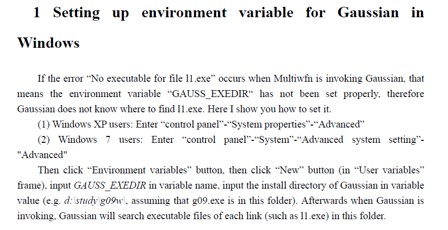
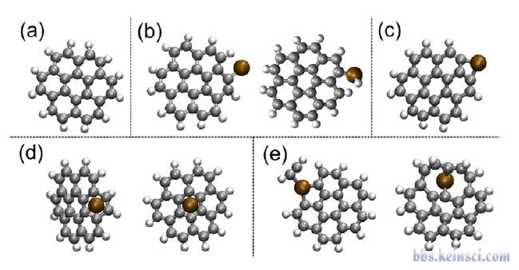
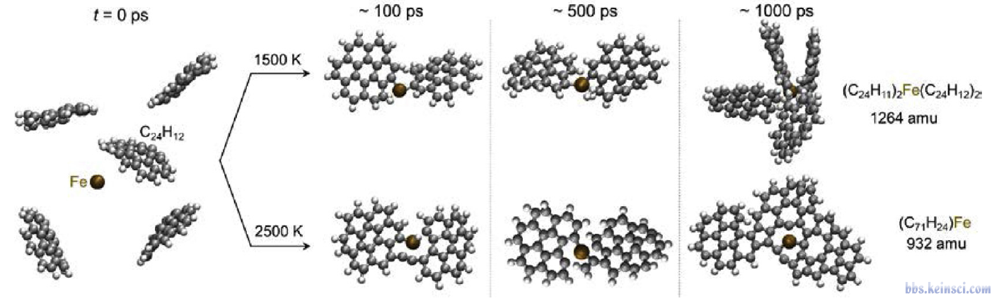
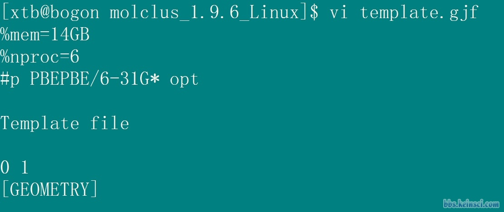
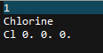
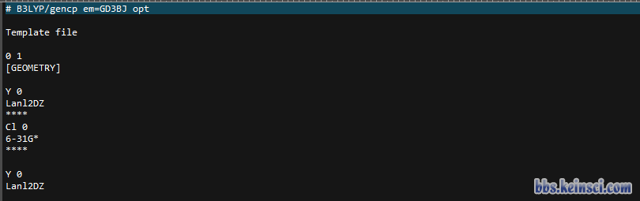
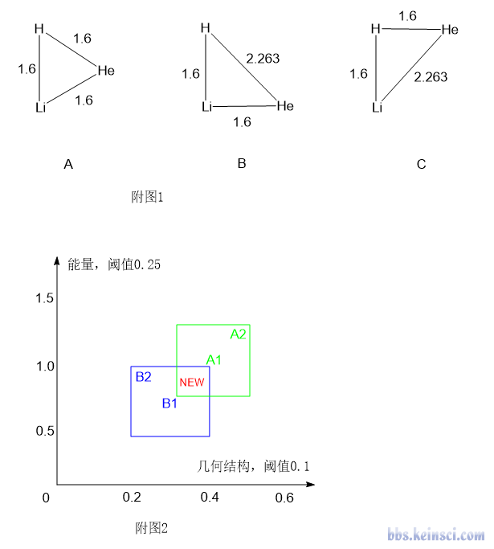
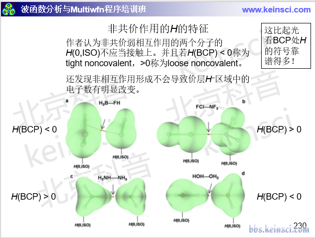

注：本文更新频繁，每次出molclus新版本都会更新。文中评论区的很多讨论都是对于已过时的老版本的，不要作为最新版本的参考。
使用molclus程序做团簇构型搜索和分子构象搜索Using molclus program to perform configuration search of clusters and conformational search of molecules
文/Sobereva @北京科音
First release：2015-Jan-5 Last update：2025-Mar-16
前言：molclus（主页：http://www.keinsci.com/research/molclus.html）是卢天开发的一款免费的用于原子/分子团簇构型搜索和分子构象搜索的程序包，目前已十分流行并被大量知名期刊的高水平研究文章所使用（见molclus主页的被引用统计）。本文将对此程序包的基本特征和其中的molclus组件的用法进行介绍。第1节介绍基于分子动力学做构型/构象搜索的基本原理，第2节介绍molclus程序的基本使用，第3、4节通过实例进行演示。看完本文后强烈建议再阅读《Molclus FAQ》（http://sobereva.com/730）。
1 构型/构象搜索原理
团簇的构型搜索和分子的构象搜索是计算化学经常涉及的问题。团簇构型搜索的目的是找到原子团簇（如Li6）或者分子团簇（如水的五聚体）的最稳定的一批构型，包括坐标和相对能量。构象搜索是对于柔性分子而言的，柔性分子有许多可旋转的键，因此势能面上有很多极小点，构象搜索目的是找到最稳定的一批构象，得知哪个构象能量最低、构象的能量彼此间相差多少。在得到最稳定的一批团簇构型或者分子构象之后，我们还可以根据它们的自由能，进一步根据Boltzmann分布估计出特定温度下它们的分布比率，见《根据Boltzmann分布计算分子不同构象所占比例》（http://sobereva.com/165）。
构型/构象搜索的算法很多，比如势能面扫描、分子动力学、蒙特卡罗、基因算法、LMOD等等，适用场合不同。团簇构型搜索和分子构象搜索都可以基于分子动力学实现，基本过程是：在合适的方法下做一定长度的分子动力学模拟，由于热运动，体系能够反复穿越势垒到达势能面不同区域。每隔一定步数取一次结构，将这些分布在势能面的不同位置上的结构作为初猜结构分别进行几何优化，最终就会得到势能面上各个极小点位置的构型和能量，之后可以对能量进行排序取最低的一批。还可以通过分子动力学做周期性退火来实现构象搜索，效果往往更好。比如每200 ps期间让温度从0 K上升至500 K然后再平缓降到0 K，如果跑2000 ps，就会产生10个对应0 K的结构，对这些结构再进行依次优化，即可得到一批极小点结构和能量。退火过程中每次当体系温度较高时，体系就有较大动能，从而能够较容易地穿越势垒而跑到其它势阱区域，然后温度降低时，体系就会陷入势阱的极小点附近。对于分子团簇的构型搜索和分子的构象搜索而言，并不会涉及到化学键的形成和断裂，因此不需要用极耗时的从头算分子动力学，而只需要计算量极低的分子力场来跑分子动力学就够了。这样的程序很多，比如免费的GROMACS、AMBER、Tinker、NAMD。用xtb基于半经验DFT层面的GFN-xTB方法跑动力学耗时也并不很高，而且没有折腾参数和弄拓扑文件的麻烦，还可以在动力学过程中描述键的形成和断裂，故也可以用于原子团簇的搜索。至于结构优化和能量计算部分，可以用分子力场、半经验、DFT、高精度后HF方法等来做，具体用什么就取决于体系特征、需要的精度和运算能力了。
另外，一种简单粗暴但很实用的做分子构象搜索的方法是“系统式搜索法”，即让分子的某些二面角按照指定规则旋转并将所产生的结构做为优化的初始结构。比如设定4个键可以旋转，每个键每120度旋转一次，那么总共就可以产生3*3*3*3=81个初始构象，对这些构象都做优化，就可以得到一批极小点结构，都进行优化后，肯定能找到能量最低构型。molclus程序包中的gentor组件就可以实现这个目的。也有一些专门的构象生成程序如Confab、Frog2，比gentor考虑的因素更多，也更傻瓜化。
对于团簇构型搜索，一种也是看起来很暴力但实际效果不错的做法是把指定类型和指定数目的分子或原子随机挨在一起，形成球形团簇，将这样产生的几十乃至几百个团簇当做初猜结构来依次进行优化，就可以得到一批团簇极小点构型，只要生成的初始团簇数目较多，其中总会有能量最低结构。molclus里的genmer组件就可以实现产生团簇初猜结构的目的。
简单来说，基于molclus做构型/构象搜索所要干的主要事情就是：用户先基于第三方分子动力学程序，或者基于molclus自带的gentor/genmer组件，或者用Confab等构象生成程序，先产生一批初始结构，然后molclus就可以调用量子化学程序或分子力学程序对这些结构依次进行优化（还可以做单点、振动分析等任务），然后用molclus自带的isostat组件对结果进行归簇、排序，从而最终得到能量最低结构和能量较低的一批结构。这个过程看起来没什么复杂的，但molclus将整个过程变得极尽方便省事，而且使用者可以对整个流程进行十分灵活的控制，是想要较低的耗时还是要较高的精度，都可以完全由使用者决定。目前市面上有不少收费的构象搜索程序，比如Spartan、GMMX、HyperChem、Sybyl、MOE、M$里的Conformer、MacroModel之类，我相信，只要你稍微花点时间用明白了molclus，之后一定就再也不想用那些程序了，又不灵活又贵又没法达到像样的精度。
2 molclus程序
2.1 简介
molclus主页为：http://www.keinsci.com/research/molclus.html，程序的可执行文件可在此免费下载。molclus会不断改进、更新。
如果molclus在你的文章中被使用，必须正确引用，基本格式为（可根据期刊要求修改）：
Tian Lu, molclus program, Version x.x, http://www.keinsci.com/research/molclus.html (accessed 月 日, 年)这里的月、日、年就是你下载Molclus程序的日期。笔者在未来会专门撰写介绍Molclus的文章发表，届时请引用论文（发表后会在molclus官网和此帖中提及）。
在通过分子动力学程序，或者molclus自带的gentor/genmer组件，或者Confab等程序产生记录了大量初始结构的.xyz格式的轨迹文件之后，molclus就可以调用计算程序对其中的结构进行优化或者能量计算了。molclus目前支持调用以下程序：
• Gaussian：支持G09及之后版本。这是最最常用的做量子化学计算的程序，收费。Gaussian也支持UFF/AMBER/Dreiding分子力场计算，比半经验方法又快出两数量级乃至更多
• ORCA：网址https://orcaforum.cec.mpg.de/。免费。这是第二流行的量子化学程序。由于其RI技术利用得很好，在纯泛函、双杂化泛函下比Gaussian快得多得多，还支持又非常精确又能算得动中等大小体系的DLPNO-CCSD(T)。如需系统学习 ORCA，可另行参考相关教程
• MOPAC：支持2012及之后的版本，网址http://openmopac.net。免费。专门做半经验计算，它支持的PM6-DH+或PM7对有机体系通常足矣得到定性合理的结果，而速度比DFT快两个数量级，故很适合用于中、大体系的优化
• xtb：做GFN-xTB方法计算的程序，免费。此方法相当于半经验的DFT，精度整体强于各种半经验方法，特别是普适性更好，而且xtb速度比MOPAC更快，在此文中有安装方法和基本用法介绍：《将Gaussian与Grimme的xtb程序联用搜索过渡态、产生IRC、做振动分析》（http://sobereva.com/421）。关于 xtb 的各方面用法和涉及到的理论方法，可另行参考相关教程
• Open Babel：网址http://openbabel.org/wiki/。免费。此程序主要用于转换化学领域的文件格式，但也可以实现MMFF94高精度有机分子力场以及其它一些力场的计算
可以说，molclus支持的Gaussian、ORCA、MOPAC、xtb和Open Babel程序把不同尺度、不同精度范围都覆盖了，精度&耗时的基本关系是：高级别后HF > DFT > 半经验/GFN-xTB > 分子力场，这些方法都可以由上述程序实现。如果读者不熟悉ORCA和RI，建议参看《详谈Multiwfn产生ORCA量子化学程序的输入文件的功能》（http://sobereva.com/490）当中的介绍，如果不熟悉MOPAC，可参看本文中的相关信息：《大体系弱相互作用计算的解决之道》（http://sobereva.com/214）。分子团簇和弱相互作用关系极为密切，必须选择合适的计算级别，否则团簇搜索将毫无意义。不熟悉弱相互作用计算的话建议看看《乱谈DFT-D》（http://sobereva.com/83）、《谈谈“计算时是否需要加DFT-D3色散校正？》。（http://sobereva.com/413）。
2.2 使用方式
以下是molclus使用的流程框图：
molclus.png (48.54 KB, 下载次数 Times of downloads: 1379)
下载附件 Download
2020-10-29 20:23 上传 Uploaded
Molclus通常有以下使用方式，各有长处，可根据实际情况决定最佳组合：
● Molclus自带的genmer程序结合Molclus：用于分子团簇或原子团簇构型搜索，使用简便。对于分子团簇搜索这通常是首选。唯一局限性是对分子的构象考虑不够充分，因为genmer将分子当成刚性来堆积，因此不适合单分子柔性很强的情况（这种情况适合后面说的做动力学程序结合molclus）。相关介绍和示例看《genmer：生成团簇初始构型结合molclus做团簇结构搜索的超便捷工具》（http://bbs.keinsci.com/thread-2369-1-1.html）
● Molclus自带的gentor程序结合Molclus：用于分子构象搜索。使用简便，但不支持环状区域构象搜索（环状区域是指诸如环己烷这样有多种构象的环状区域）。对于可旋转的键不很多的分子的构象搜索这是首选，可控性最强。相关介绍和示例看《gentor：扫描方式做分子构象搜索的便捷工具》（http://bbs.keinsci.com/thread-2388-1-1.html）
● 第三方的Confab或Frog2构象生成程序结合Molclus：用于分子构象搜索。使用最为傻瓜化，但不支持环状区域构象搜索、不支持普通有机分子以外的情况。相关介绍和示例看《将Confab或Frog2与Molclus联用对有机体系做构象搜索》http://bbs.keinsci.com/thread-20063-1-1.html）
● xtb程序跑动力学轨迹结合Molclus：普适性极强，用于构象搜索、原子/分子团簇构型搜索皆可，使用容易。但由于模拟时间长度有限，有动力学采样不充分导致遗漏构型/构象的风险（风险随动力学模拟时间增长而减小）。相关介绍和示例看《使用Molclus结合xtb做的动力学模拟对瑞德西韦(Remdesivir)做构象搜索》（http://bbs.keinsci.com/thread-16255-1-1.html）
● GROMACS等经典力场分子动力学程序结合Molclus：用于分子团簇搜索和分子构象搜索。使用稍繁琐，因为得创建拓扑文件，且被动力学模拟的体系必须有恰当的力场，好处是动力学模拟耗时极低，因此动力学采样不充分导致遗漏构型/构象的风险很小。相关介绍和示例看《使用molclus程序做团簇构型搜索和分子构象搜索》（http://bbs.keinsci.com/thread-577-1-1.html）。不了解 GROMACS 使用的话，需要先补充相关使用知识。
molclus的基本使用流程如下：
(1) 产生记录所有初始结构的多帧traj.xyz文件。通常有这些做法：
● 用分子动力学程序模拟团簇或单个分子，每隔一定步数将结构写入一次轨迹；也可以做周期性退火，将对应0 K的帧写入轨迹。令轨迹名为traj.xyz（如果程序不支持输出xyz轨迹格式，可用免费的VMD程序将其私有轨迹格式转化为.xyz格式的轨迹）。
● 用molclus程序自带的gentor产生含有一批分子初始构象的traj.xyz文件。见《gentor：扫描方式做分子构象搜索的便捷工具》（http://bbs.keinsci.com/thread-2388-1-1.html）● 用genmer工具产生含有一批团簇初始构型的traj.xyz文件。见《genmer：生成团簇初始构型结合molclus做团簇结构搜索的超便捷工具》（http://bbs.keinsci.com/thread-2369-1-1.html）
● 用Confab直接产生含有分子的一批随机的构象的traj.xyz文件。见《将Confab或Frog2与Molclus联用对有机体系做构象搜索》（http://bbs.keinsci.com/thread-20063-1-1.html）
(2) 对于让molclus调用Gaussian、ORCA或MOPAC的情况，需提供这些量子化学程序的模板文件并放到当前目录下。对于Gaussian程序，名为template.gjf；对于ORCA，名为template.inp；对于MOPAC，名为template.mop。模板文件里要写好调用这些程序计算时要用的关键词，如理论方法、基组、相关关键词（内存分配量、辅助SCF收敛的设定、优化的关键词和选项等），但是坐标部分写成[GEOMETRY]。molclus计算时会自动将[GEOMETRY]字段替换为traj.xyz里的结构，然后传递给这些量子化学程序执行。对于调用xtb和Open Babel的情况，不需要设定模板文件，因为这俩本身就是通过命令行调用的。
(3) 设定好molclus的参数文件settings.ini指定任务类型和运行设置，详见2.3节。
(4) 启动molclus。molclus会载入traj.xyz、settings.ini和模板文件，然后自动调用量子化学或分子力学程序对traj.xyz的每一帧结构进行优化，并将优化好坐标和能量写入到当前目录下的isomers.xyz文件中（molclus很灵活方便，也可以直接对每帧结构做比如优化+振动分析+高精度单点能计算，这种情况molclus会把坐标、自由能、自由能的热校正量和虚频数目写入到isomers.xyz中，也同时输出在屏幕上）
(5) 启动molclus中附带的isostat工具，载入上一步得到的isomers.xyz，此工具会对其中的结构根据能量进行排序并进行统计、去除能量和几何结构相似度过高的重复结构。isostat在当前目录下输出的cluster.xyz文件就是根据能量从低到高排列并且去除了重复结构后的文件，可以载入VMD来方便地观看每个结构。之后还可以根据提取的各结构的能量，输出指定温度下各个构型的波尔兹曼分布比例（原理见《根据Boltzmann分布计算分子不同构象所占比例》http://sobereva.com/165）。isostat支持并行计算来大大降低耗时，在启动时可以设置并行核数。
如果想使用比结构优化更高级别的方法精确计算每个结构的能量，可以把settings.ini里的itask改为1，把模板文件改成单点任务所用的关键词，再把cluster.xyz改名为traj.xyz，然后启动molclus。此时molclus就会调用量子化学程序对其中每个结构再做一次单点计算，可以再次用isostat进行统计筛选。
程序的安装与运行：Molclus本身不需要安装就可以直接启动。在Windows下启动molclus就是双击molclus.exe图标。在Linux下启动就是进入molclus所在目录，输入./molclus（有时需要先用chmod +x ./molclus加上可执行权限）。每次程序运行前，会对当前目录下.out、.arc等量子化学或分子力学程序之前产生的临时文件进行清理，所以如果有重要的临时文件在当前目录下，执行molclus前应当先手动将它们挪至别处。
Windows版molclus包里有isostat.exe和isostat_32bit.exe。如果你的机子是64位系统，一定要用前面的。后面那个纯粹是给仍然在用32bit系统的人用的，对内存可使用量限制较大，对巨大的isomers.xyz进行筛选可能会崩溃，而且不支持并行计算。
如果你想中断molclus的运行，可以直接在molclus运行窗口里按Ctrl+C终止。还有一种做法是在当前目录下创建名为STOP的空文件，molclus每开始循环traj.xyz里的一个结构时，一旦发现当前目录下有名叫STOP的文件就会自动结束任务。
如果你想让molclus在远程服务器上一直运行，不会因为断开与服务器的连接后自动中断，应当运行比如nohup ./molclus > out.txt &，然后要断开终端时输入exit以优雅的方式断开，这样molclus就会在服务器上一直跑直到结束。molclus输出信息都会被输出到out.txt里，可以随时打开查阅，也可以运行tail -f out.txt来实时监控新写入到此文件里的内容便于跟踪计算进度。
超算上的使用：对于在超算等特殊情况下使用，必须需要通过提交的方式执行上述量子化学程序，有可能molclus没法自动调用那些程序。为此molclus程序包里还提供了xyz2QC工具来解决这个问题，请参看《将多帧xyz文件转化成量子化学输入文件的工具：xyz2QC》（http://bbs.keinsci.com/thread-12468-1-1.html）。如果你之前没接触过xyz文件格式，建议你看一看《谈谈记录化学体系结构的xyz文件》（http://sobereva.com/477）。另外，有molclus用户针对在集群上通过PBS作业提交方式使用molclus的方法做了介绍，见：http://bbs.keinsci.com/thread-15598-1-1.html。
相关程序的安装：如果你不会装Gaussian，看http://sobereva.com/439；如果不会装ORCA，看http://sobereva.com/451；如果不会装MOPAC，看http://sobereva.com/262。如果不会装xtb，看http://sobereva.com/421。Open Babel在Windows下安装很简单，直接启动安装程序然后一直下一步即可，对于Redhat派系的Linux系统（如CentOS），用yum install epel-release添加EPEL源后用yum install openbabel即可安装。
2.3 参数文件settings.ini
molclus目录下的settings.ini在molclus启动时会被载入，其中记录了运行参数，在下面进行介绍（此文件里的注释也有描述）。实际情况需要改什么就在原文件基础上修改，注意格式别改乱了，用不到的设置也不要自己删掉。通常做一个新任务只需要改两、三个参数就够了。
iprog：molclus调用的量子化学或分子力学程序。1=Gaussian；2=MOPAC；3=ORCA；4=xtb; 5=Open Babel
ngeom：0=处理traj.xyz里每一帧；n=处理前n帧；也可以直接指定考虑的帧号，如2,5-8,12-14（如果只处理比如第6帧需要写6-6）。利用这个结合下面说的iappend=1可以实现续算等目的
itask：对traj.xyz里每一帧所做的任务类型。0=几何优化；1=计算单点能；2=振动分析；3=优化+振动分析；-1=热力学组合方法计算（仅对Gaussian有效）
注：对于Gaussian、ORCA、MOPAC这样需要设置template模板文件的情况，itask仅决定按照什么任务的形式来从输出文件中提取数据，而所做的任务的关键词需要照常写（如itask=0的时候，模板文件里得照常写优化的关键词opt及相关选项，例如对于Gaussian可以是opt(gdiis,maxstep=5,notrust)）。而对于xtb和Open Babel，并不需要设模板文件，itask直接就决定了在调用时做什么任务。
ibkout：1=每处理完一帧结构，把程序的输出文件备份，以便之后检查或根据自己的需要提取其它数据。比如对于第5帧结构，Gaussian的输出文件会备份到gau00005.out，ORCA的会备份到orca00005.out，MOPAC的会备份到MOPAC00005.arc；0=不做备份，因此molclus运行完毕后将找不到计算程序中间输出的文件；2=只备份成功的任务；3=只备份失败的任务；-1=对于调用Gaussian或ORCA的情况，如果发现当前目录下有以前备份好的文件（如gau00002.out、orca00005.out），则Molclus会直接读里面的数据而不再重新计算
distmax：n=如果结构中任意两个原子间的距离超过n埃则跳过这一帧。做团簇动力学的时候，有可能某个分子跑飞了，对这样的结构优化没有意义，利用这个参数就可以忽略掉此结构。如果设0的话，可以从一个文本文件里读取更精细的设置，能设置某一批和另一批原子间必须满足的最近和最远距离，违背要求的结构将被跳过，详见http://bbs.keinsci.com/thread-28128-1-1.html
ipause：1=对于Gaussian和ORCA，计算出错（如不收敛）则暂停，以便用户对输出文件进行检查，然后可以按回车继续处理下一帧结构；2=每处理完一个结构后都暂停；0=总是不暂停
iappend：0=新产生的结构会覆盖原有的isomers.xyz文件；1=新产生的结构会续写到当前目录下之前的isomers.xyz文件（如果有的话）末尾，若没有则会新建之
freeze：设置含有优化过程的任务中原子的冻结情况。0代表不做冻结，设成诸如1,4-6,8-10代表对1,4,5,6,8,9,10原子的笛卡尔坐标进行冻结。对Gaussian/ORCA/MOPAC/xtb有效
为了避免有些人糊涂，在这里提供一个表格，明确说明molclus支持哪些任务（itask）和哪些程序的组合。绿色代表支持，棕色代表不支持。绿色里如果有文字的话，说明需要在模板文件里体现相应的关键词
combination.png (26.66 KB, 下载次数 Times of downloads: 1115)
下载附件 Download
2019-11-5 09:57 上传 Uploaded
----以下是Gaussian专用的参数----
gaussian_path：调用Gaussian的命令，比如"/sob/g09/g09"、"D:\study\g16w\g16.exe"。在linux下如果Gaussian已正常安装了，可以只写诸如g09或g16。如果路径中有空格，路径两边必须加上双引号，后同
[注意：如果是Windows版Gaussian，gaussian_path必须指向诸如g09.exe而不能是g09w.exe，因为后者只是前者的一个图形界面而已。另外，运行前还必须进入“控制面板”-“高级系统设置”-“高级”-“环境变量”，添加GAUSS_EXEDIR环境变量，使之指向Gaussian目录（不是指向可执行文件名），如D:\study\g09w，否则Gaussian没法以命令行方式运行，也因此molclus将没法调用Gaussian。另外，不要用太老的G09版本，比如年代久远的G09 A.01、A.02版可能没法被molclus支持]
igaucontinue：1=如果优化失败，则会基于另一个模板文件template2.gjf对之前最后一帧结构继续优化，如果还失败了会再基于template3.gjf继续优化；0=不做这个处理。igaucontinue=1的主要用处在于给用户更多备选方案。比如可以在template.gjf里写常规的优化关键词（并且步数上限设得比较有限，如80），而在template2.gjf、template3.gjf里使用更有助于收敛的关键词，诸如calcfc、GDIIS、opt(maxstep=x,notrust)等等。这样当第一次优化不收敛的时候，就会自动利用其它模板文件里的关键词进一步优化。关于辅助收敛的方法，在此贴有汇总：《量子化学计算中帮助几何优化收敛的常用方法》（http://sobereva.com/164）。另外，有时候优化过程中途出现三个原子排成直线而报错，靠igaucontinue=1可以实现基于之前的结构继续优化，通常也能进一步优化下去。
energyterm：molclus是从Gaussian输出文件中末尾的archive字段部分读取电子能量的，这个选项用于设定读取哪项。对于HF/DFT计算，这个参数应设为HF=，即读取HF=这个字符串后面紧跟着的那个数（HF/DFT能量）。如果是MP2或双杂化泛函计算，就应当设MP2=；如果是CCSD(T)，就应当设CCSD(T)=，以此类推，不懂的话仔细看http://sobereva.com/488。如果模板文件设的是TDDFT激发态计算，且这个参数设的是TD=，则molclus会读取激发态能量（TD里root选项指定的态），从而可以做激发态构型/构象搜索。
molclus也可以从Gaussian的热力学组合方法输出中读取指定的热力学量，当itask被设为了-1，template.gjf里的关键词比如设成了# G4，如果将energyterm定义为"G4 Free Energy="（此处的双引号必须写），则molclus就会从输出文件里面找这个字段来读取G4方法算的自由能。
对于freq (itask=2)和opt freq (itask=3)任务不需要设这个，因为总是读取的直接输出的自由能（但如果用提供了template_SP.gjf让molclus在这两种任务后自动算高精度单点来得到较准确自由能，则需要设这个来指定从单点任务中读取什么能量，见后文）。
ibkchk：和ibkout的用法一样，但这个控制的是如何备份.chk文件（对于通过提供template_SP.gjf自动调用Gaussian算高精度单点的情况，也同样会备份这单点任务的chk文件，前缀为gauSP）
----以下是ORCA专用的参数----
orca_path：ORCA可执行文件的路径，比如"D:\study\ORCA4\orca.exe"、"/sob/ORCA4/orca"
ibkgbw：和ibkout的用法一样，但这个控制的是如何备份.gbw文件（对于通过提供template_SP.inp自动调用ORCA算高精度单点的情况，也同样会备份这单点任务的gbw文件，前缀为orcaSP）
ibktrj：1=把每次优化后产生的后缀为_trj.xyz的文件改名为orca[帧号].xyz备份出来。这是优化过程的轨迹文件，因此可以用VMD直接观看优化过程
ibkhess：1=把每次振动分析或优化+振动分析后产生的.hess的文件改名为orca[帧号].hess备份出来。这是Hessian文件，以便用户之后以某些方式利用之
mpioption： ORCA并行运算时传递给MPI的额外选项。默认为none，即什么也不设。此选项有特殊的用处，例如在root下通过较新版本OpenMPI运行ORCA，不带--allow-run-as-root选项就运行不了，此时可以设定mpioption= --allow-run-as-root来解决此问题。如果参数里面有空格，应当写成比如mpioption= " '--bind-to core' "
----以下是MOPAC专用的参数----
mopac_path：MOPAC可执行文件的路径，比如"C:\Program Files\MOPAC\MOPAC2016.exe"、"/sob/MOPAC2016/MOPAC2016.exe"。
----以下是xtb专用的参数----（molclus总是通过"xtb"命令调用xtb，因此不用指定其可执行文件路径）
xtb_arg：xtb程序运行时额外接的参数，要用双引号扩住，比如"--chrg 1 --uhf 1"代表体系电荷为1，alpha电子比beta电子多1个。（虽然自行使用xtb做优化时应加上--opt，但不要写在此处，因为molclus会根据任务类型自动加上）
----以下是Open Babel专用的参数----（以正常方式安装好Open Babel后molclus即可直接调用，不用指定其可执行文件obabel的路径）
obabel_FF：Open Babel中使用的力场。建议用MMFF94，是最准确的有机分子力场，但支持的元素也仅限有机体系所涉及的。目前的Open Babel里还可以用UFF、ghemical、GAFF力场
obabel_param：Open Babel运行时额外加入的参数，比如--steps 2500代表几何优化做2500步。（注意，2.4版之前的Open Babel使用默认的共轭梯度法优化时有bug，应加上--sd改为最陡下降法优化）
----以下是Shermo专用的参数----
Shermo_path：Shermo程序（http://sobereva.com/soft/shermo）的可执行文件的路径，必须用Shermo >=2.3版。如果此路径设置正确，则molclus调用Gaussian或ORCA做振动分析或优化+振动分析后，会自动调用Shermo来计算自由能而不直接从Gaussian和ORCA输出文件里读取。Shermo在这方面计算上比Gaussian和ORCA自己的代码更为强大、灵活、稳健
T：Shermo程序计算自由能用的温度(K)
P：Shermo程序计算自由能用的压力(atm)
sclZPE：Shermo程序计算自由能时ZPE部分用的频率校正因子
ilowfreq：低频模式的处理方式。0=RRHO模型（和Gaussian相同，不推荐），1=将低于100波数的频率提升到100波数，2=用Grimme的准RRHO方法模型（强烈推荐！对柔性大体系比RRHO模型精确得多，详见Shermo程序原文里的介绍）
2.4 技巧&细节
xyz格式：xyz是一种格式非常简单的可用记录多帧结构的格式，可以直接用文本编辑器手动编辑，因此用户可以自由修改traj.xyz、cluster.xyz和isomers.xyz的内容，从而控制molclus处理哪些结构，或者手动提取特定结构、删除多余的结构等。molclus完全基于.xyz文件，这使得molclus非常灵活。不懂xyz格式的话可以参看《谈谈记录化学体系结构的xyz文件》（http://sobereva.com/477）。
直接产生高精度自由能：在便宜级别下做优化和振动分析，而在高精度级别下算电子能量，二者相加来得到较准确的自由能是司空见惯的做法，看比如《谈谈隐式溶剂模型下溶解自由能和体系自由能的计算》（http://sobereva.com/327）。Molclus的振动分析（itask=2）和优化+振动分析（itask=3）任务直接支持这种做法。具体做法是在当前目录下提供template_SP.gjf（template_SP.inp）文件，设置Gaussian（ORCA）高精度单点计算的关键词，格式同template.gjf（template_SP.inp）。之后，当优化或优化+振动分析任务结束后，程序发现当前目录下有template_SP.gjf（template_SP.inp）时就会用其中的信息构成单点任务文件并调用Gaussian（ORCA）计算，然后自动将新算出来的单点能与前面算的自由能热校正量相加作为最终能量输出。几个细节：
(a)如果template.gjf和template_SP.inp同时存在，优先考虑template_SP.inp
(b)opt、opt freq任务用的程序与自动算高精度单点的可以不同，比如iprog=1调用Gaussian时也可以通过在当前目录下提供template_SP.inp来令程序自动调用ORCA算高精度单点
(c)利用template_SP.gjf基于Gaussian自动算高精度单点时，Gaussian用户需要在settings.ini里对energyterm参数恰当设置，用于指定如何读取这个级别的单点任务输出文件里的能量
molclus运行意外原因中断的续算方式：比如traj.xyz里总共有1000个结构要算，算到第180个结构的时候没算完就意外中断了，此时就把settings.ini里的ngeom设为180-1000，把iappend设为1，然后重新启动molclus计算，程序就会把之前没算的第180~1000个结构算完，并且把新产生的结构续写到之前产生的isomers.xyz里。这样，最后得到的isomers.xyz里就有1000帧了，和一次性全跑完得到的精确一样。
同时运行多个molclus：molclus可以同时运行多个以试图节约时间。大家都知道支持并行的计算程序的计算耗时不会和调用的核数线性相关，随着核数增加并行效率必然会愈发降低。比如你的机子核数很多，有56核，traj.xyz里有1000个结构需要处理，你希望降低molclus处理这个traj.xyz的总耗时，那么你可以比如把molclus文件夹复制成四份，比如分别叫molc1、molc2、molc3、molc4，分别将这四个目录下的settings.ini里的ngeom设为1,250、251,500、501,750、751,1000。然后开启四个终端，分别进入这四个目录并且运行molclus。等都运行完了，使用这条命令把四个目录下产生的isomers.xyz合并在一起：
cat molc1\isomers.xyz molc2\isomers.xyz molc3\isomers.xyz molc4\isomers.xyz > isomers.xyz
之后用isostat对这样的isomers.xyz产生的统计结果，和只跑一个molclus但是一次性考虑所有1000个结构的情况是完全一样的，而总耗时能降低不少。类似地，如果你有很多台机子可用，也可以这样把一个任务分开在不同机子上计算，然后把不同机子上的isomers.xyz合并到一起。
注：对于分割运行的数目非常多的情况，手动操作麻烦，可以考虑使用ggdh开发的辅助工具《分解合并Molclus任务的小脚本splitMC》（http://bbs.keinsci.com/thread-14361-1-1.html）。
为了灵活，molclus也可以直接指定设置文件和初始结构文件的路径。例如molclus /RAS/Layer.ini代表将/RAS/Layer.ini作为设置文件。再比如molclus lock.ini /RAS/chu2.xyz代表用当前目录下的lock.ini的设定对/RAS/chu2.xyz里的结构进行计算。因此设置文件和初始结构文件并非只能是当前目录下的settings.ini和traj.xyz。
isostat运行时可以结合各种参数。比如执行isostat Rize.xyz -Nout 8 -Eout 2.4 -Edis 0.5 -Gdis 0.2 -T 350 -nt 32命令，代表将当前目录下的Rize.xyz作为输入文件，往cluster.xyz里导出的簇是能量最低的8个且相对能量还必须在2.4 kcal/mol以内。使用0.5 kcal/mol和0.2埃分别作为归簇的能量和几何偏差判据。计算Boltzmann分布使用350K。使用32个线程并行计算。凡是通过命令行指定的参数就不需要在交互式界面里再输入。忘记这些选项怎么写的话可以随时运行isostat -h查看。
isostat的算法：有用户对isostat程序的运行机制感兴趣，这里具体交代一下。isostat使用能量和几何结构偏差作为判断两个结构是否相似的标准，同时小于两个阈值才算相似。几何结构在判断时是基于距离矩阵来比较的（因此对比前isostat并不会对两个结构做对齐(align)，也不要求原子间序号顺序一致）。isostat会循环输入的.xyz里的每个isomer。对于输入文件里第一个isomer，或者当前isomer和之前已有的所有簇都不相似，那么这个isomer将被作为一个新的簇，此簇的能量、结构也等同于这个isomer。若当前isomer与之前某个簇相似（能量和结构差异都同时小于自设的阈值），那么这个isomer就被认为归入了这个簇，因此这个簇的容量会+1；如果与此同时这个isomer的能量比这个簇的能量更低，那么这个isomer将被作为这个簇的代表，即使用这个isomer的能量和结构作为这个簇的能量和结构。等所有isomer都循环完之后，程序就会输出各个簇的绝对能量，相对于能量最低的簇的能量差(DE)，以及这个簇与与它结构最相近的另一个簇的原子间距偏差最大值(DGmin)。显然，最终得到的簇的数目<=isomer的数目。两个isomer的结构差异在isostat中是这样算：根据isomer的原子坐标计算距离矩阵，将其非对角元转化为一维数组形式，并从小到大进行排序，这称为原子间距数组。两个isomer间的结构差异用二者的距离间距数组的差值数组的绝对值的最大值来衡量。
traj.xyz和settings.ini也不是必须叫这俩名字、必须放到当前目录下。如果molclus启动时发现当前目录下没有这俩文件，会直接提示用户输入，因此也可以命名为便于分辨的名字。
下面，本文将示例如何将GROMACS或AMBER分子动力学程序、molclus程序和量子化学程序相结合进行团簇构象搜索和分子构型搜索。如果你不打算利用这俩分子动力学程序产生初始结构（其实一般也没必要，因为过程较麻烦），那么可以把下面例子中的动力学部分直接略过，直接参考基于molclus做搜索的部分，之后再看以下文章分别了解怎么用gentor、genmer、xtb、Confab明显更便利地产生初始结构并结合molclus做搜索：
《gentor：扫描方式做分子构象搜索的便捷工具》（http://bbs.keinsci.com/thread-2388-1-1.html）
《genmer：生成团簇初始构型结合molclus做团簇结构搜索的超便捷工具》（http://bbs.keinsci.com/thread-2369-1-1.html）
《使用Molclus结合xtb做的动力学模拟对瑞德西韦(Remdesivir)做构象搜索》（http://bbs.keinsci.com/thread-16255-1-1.html）
《将Confab或Frog2与Molclus联用对有机体系做构象搜索》（http://bbs.keinsci.com/thread-20063-1-1.html）
如果你虽然想基于动力学程序产生初始结构，但是又不太会用GROMACS、AMBER等基于经典力场的分子动力学程序，那么建议用上面帖子里提到的通过xtb程序跑动力学，方便得多得多。
3 分子团簇构型搜索实例：(H2O)4
此例我们通过molclus结合GROMACS分子动力学程序以及MOPAC、Gaussian 09 D.01量子化学程序搜索(H2O)4团簇构型，这个团簇已经被很多文章研究过了。这里用这种很小的团簇进行示例仅是为了节约时间，对无论多大的团簇计算过程基本都是一样的。
GROMACS是免费、最主流、速度快且很好用的小分子溶液和生物大分子的分子动力学模拟程序，所以我们这里用GROMACS 4.6.7，编译方法参见《Gromacs 5.0与4.6.7编译方法》（http://sobereva.com/247），较新版本的见《GROMACS的安装方法（含全程视频演示）》（http://sobereva.com/457）。大家也可以用其它自己擅长的动力学程序，只要能产生VMD能支持的轨迹就行，因为我们要靠VMD来把轨迹转为molclus能读取的.xyz轨迹格式（当然啦，如果自己有其它办法能转成.xyz轨迹格式也行）。
动力学我们用NVT系综。对于当前体系实际上不用周期边界条件也行。不过对于较大团簇的话，当模拟温度较高时，可能模拟过程中外侧的某个分子跑着跑着就飞了，越飞越远，之后的轨迹就没意义了。而如果用了周期边界条件，它飞过边界后还会跑回来。
GROMACS模拟部分所有涉及到的文件都可以在这里下载，如果有的地方不清楚直接看里面的文件就明白了。
H20_4_MD.rar.rar
(55.96 KB, 下载次数 Times of downloads: 2626)
2015-1-5 18:18 上传 Uploaded
点击下载
Click to download
3.1 准备模拟体系
对H2O我们就用SPC/E水模型，它的拓扑文件是Gromacs自带的，就是gromacs/top/gromos54a7.ff/spce.itp。我们用gview之类工具画一个水分子，保存成H2O.pdb。由于spce.itp里氧原子名字为OW，两个氢原子名分别为HW1和HW2，所以我们也把pdb里的原子名改为与之对应的。
然后建立个文件夹用于存放模拟相关的文件。把H2O.pdb放进去，并建立一个空盒子文件emptybox.gro，盒子各边长都为1nm，内容如下：
emptybox
0
1.0 1.0 1.0复制代码
运行此命令往这个小盒子里加入4个H2O
genbox -cp emptybox.gro -ci H2O.pdb -o H2O_box.gro -nmol 4
注：本文的Gromacs的操作是对于4.x版而言的。如果你是gromacs >= 5.0版用户，不用按上面步骤建立emptybox.gro，直接写gmx insert-molecules -box 1 1 1 -ci H2O.pdb -o H2O_box.gro -nmol 4就行了。而且后文的mdrun应改为gmx mdrun，grompp应该为gmx grompp。
然后运行
editconf -f H2O_box.gro -o H2O_box2.gro -d 2
此命令重新建立了盒子，是围绕这四个水在各个方向延展2nm得到的，这使得这4个水处在这个大盒子中间区域，而且盒子尺寸也大于非键作用cutoff距离的两倍。（也有其它建立初始结构的方法，比如用packmol生成初始结构，可控性更高）
编写当前体系的拓扑文件system.top，内容如下
#include "gromos54a7.ff/forcefield.itp"
#include "gromos54a7.ff/spce.itp"
[ system ]
4*H2O
[ molecules ]
SOL 4复制代码之所以[ molecules ]部分这么写，是因为spce.itp当中水的分子名是SOL。
3.2 动力学模拟
我们用1fs步长，模拟1000000步（1ns），每隔10000步（10ps）保存一次坐标，共会得到101帧。保存间隔太大则需要更多的模拟时间，而太短的话则相邻两帧结构往往差异较小，优化后会容易收敛到相同的结构。对于这种小团簇来说，动力学模拟的耗时是可以忽略不计的，所以间隔可以设大些，但太大也没意义。关键是获得的帧数要足够多。
特别需要注意的一点是，像水团簇这样以静电作用为主导的团簇构型（氢键的本质主要是静电作用），如果直接模拟的话，由于氢键作用太强，团簇结构很稳固，总是在最稳定的那几个结构中变化，难以跑到高能结构上。虽说提高模拟温度可以让不同结构之间变化得更容易，但是实际做过就会发现，温度设很高后虽然团簇没这么牢固了，结构变化更自由了，却很容易跑散，最终还是得不到能量较高的构型。因此，我们要人为把静电作用削弱，这里我们用epsilon-r=4关键词来把相对介电常数由默认下真空的1改为4，即静电相互作用被削弱到了1/4。此时，氢键维持的高度有序的结构就容易被热运动破坏了，缺乏取向性的范德华作用对于保持团簇状态的重要性也大为提升了。
由于氢键被我们削弱了，范德华作用的强度又远远低于氢键，因此我们模拟所用的温度也必须比一般化学直觉要低得多，不然肯定跑散了。应该对模拟温度进行几次测试，摸索出尽可能高但又保证团簇不散架的温度。对于此例，我们发现60K比较理想。注意不宜一上来就控温到60K，否则由于初始动能太大靠前的一些帧容易散架。因此我们需要利用gromacs的退火设定，设起始温度为0K，在前60ps内线性升温至60K（即1ps升温1K），然后一直保持在60K。
非键相互作用用最简单直接的cut-off方式计算就行了，1.4nm截断距离完全绰绰有余了。
以下是我们模拟用的参数文件md.mdp
integrator = md
dt = 0.001 ; ps
nsteps = 1000000
nstxtcout = 10000
;
pbc = xyz
rlist = 1.4
coulombtype = cut-off
rcoulomb = 1.4
vdwtype = cut-off
rvdw = 1.4
;
epsilon-r=4
Pcoupl = no
Tcoupl = v-rescale
tau_t = 0.5
ref_t = 100
tc_grps = system
annealing = single
annealing_npoints = 2
annealing_time = 0 60
annealing_temp = 0 60
constraints = h-bonds复制代码（ref_t这个参数此时无意义，因为退火设定已经设了温度了，但不写的话程序会报错）
执行下列命令开始模拟
grompp -f md.mdp -c H2O_box2.gro -p system.top -o md1.tpr
mdrun -v -deffnm md1
因为体系很小，几秒钟就模拟完了。
3.3 观看和转换轨迹
把H2O_box2.gro载入VMD，然后在VMD main里选择它，在上面点右键，选delete frames，点delete按钮，这样目前的这一帧，即初始结构就被删掉了。再右键选Load Data into Molecule，选md1.xtc。当前共有101帧，编号为0~100。从轨迹上看，体系没有跑散，而且结构波动还是比较大的，因此适合作为molclus的输入结构。
像当前例子这么小的体系，虽然极小点结构最多超不过10个，但是由于轨迹中的很多结构优化后都会收敛到相同结构，而且还有可能碰上优化不收敛之类的问题，因此我们要从轨迹中取至少几十帧才有可能把各种构型都找全，特别是找到其中高能结构。如果目的只是为了找到能量最低构型，难度显然会低不少，用的帧数也可以少一些。
我们这里把轨迹中所有帧都保存成.xyz轨迹格式。在VMD Main窗口里点击当前项目，点右键选Save coordinate，file type设为xyz，然后点save，输入traj.xyz，这个文件就可以用作molclus的输入了。如果觉得帧数太多算不动，或者想排除掉对应升温过程的帧，也可以在保存轨迹时使用First和Last设定保存范围，以及stride设定每隔几帧保存一次。
特别注意：标准的.xyz文件对各个原子记录的是元素名，而不应当是原子名。但是，按照上述方式载入gro和轨迹文件，再转换出的traj.xyz里记录的却是原子名，如果你用文本编辑器打开traj.xyz就会看到里面每个水包含OW、HW1、HW2，这都是GROMACS模拟过程中水分子里的氧原子和两个氢原子的原子名。一般情况下，用molclus读入traj.xyz之前，应当手动把这些原子名替换为对应的元素名，这样才能100%确保molclus能正常工作、结果有意义。但是，由于周期表里没有叫做OW、HW1、HW2的元素，因此molclus在读取的时候会进一步试图通过首字母判断元素，因此molclus是可以恰当地将这三种原子判断为氧原子和氢原子的，因此接下来的分析也没有问题。但为了稳妥，建议最好还是先把traj.xyz里的原子名手动替换为元素名，否则元素判断错误时结果将明显和实际不符（比如如果有个碳原子的原子名叫CA，那么就会被molclus视为钙原子，那之后的任务肯定就没意义了）。
3.4 molclus+MOPAC做初步优化
这一节涉及到的molclus的相关的文件在此：
molclus_MOPAC2012.rar
(37.5 KB, 下载次数 Times of downloads: 1545)
2015-1-5 18:20 上传 Uploaded
点击下载
Click to download
虽说这个体系比较小，DFT优化一个结构不会很耗时，但是我们这里要优化101帧结构，直接用Gaussian做DFT优化还是颇耗时的。而且轨迹中的结构由于热运动，偏离极小点往往比较远，优化不仅需要的步数很多，还经常容易发生震荡，或者坐标系出现问题（Gaussian的一个老毛病）导致优化了半天最终却失败。一个比较机智的方法是先用MOPAC在半经验方法下预优化一下（或者用xtb程序预优化），瞬间就能把这么多结构都优化完，而且几乎不会报错。但是优化出的结构的质量还只能算是作为精确计算的初猜的水平，没法直接用，因此之后还得再用DFT来精炼一下。虽然Gaussian也支持很多半经验方法，其中PM6-D3和PM7描述弱相互作用也不赖，但速度比起MOPAC还是慢很多。本例用的PM6-DH+用于氢键计算在半经验的层面上算是最理想的选择之一。
在molclus文件夹下编写一个MOPAC输入文件的模板文件，文件名应当为template.mop，内容为
PM6-DH+ precise
molecule
All coordinates are Cartesian
[GEOMETRY]
复制代码其中precise代表用比默认更高的数值精度进行计算。[GEOMETRY]在molclus执行过程中将被自动替换为traj.xyz的每一帧的结构并产生MOPAC输入文件MOPAC.mop。
把molclus目录下的settings.ini设定好，大部分不用改，只需要确认iprog和mopac_path是否设对，请根据2.3节的说明合理地设定。
把上一节得到的traj.xyz拷到molclus所在目录下，启动molclus。运行过程中会提示处理到了第几帧，优化是否顺利完毕，最终能量为多少。每个顺利优化完成的结构都会被记录到当前目录下的isomers.xyz里。本例的MOPAC优化转眼间就都顺利完成了，isomers.xyz最后共有101帧。用文本编辑器打开isomers.xyz就会看到每个优化后的结构坐标和能量。
isomers.xyz里这101帧里绝大多数都是重复的结构，我们用isostat工具按能量对之进行排序并去除重复结构。Windows版直接双击isostat.exe，Linux版运行./isostat就启动了isostat。启动后如果直接敲回车，它就会载入当前目录下的isomers.xyz，然后问你区分重复结构的能量阈值和几何阈值各是多少。由于几何优化的收敛精度所限，即便实际上两个结构对应于同一个极小点，结构也会稍有偏离，能量也会有所差异。在isostat中，如果两个结构间能量偏差和几何偏差都小于阈值的话，则这两个结构会被认为是相同的而去除其一，或者说，它们被归到了一个簇里。这里我们只使用能量阈值而不用几何偏差作为判断（这么做没特殊含义，这里仅作为示例），输入能量阈值时直接敲回车用默认的0.25kcal/mol，然后输入几何阈值时输入一个很大的数比如99。我们然后屏幕上就会看到isomers.xyz中每个构型的能量，以及是被当成了新的结构还是被认为和之前的结构是重复的：
Energy of structure 1 : -0.38549952 a.u., new cluster
Energy of structure 2 : -0.39920546 a.u., new cluster
Energy of structure 3 : -0.39694736 a.u., new cluster
Energy of structure 4 : -0.39290484 a.u., new cluster
Energy of structure 5 : -0.39648044 a.u., new cluster
Energy of structure 6 : -0.39694738 a.u., attributed to cluster 3
Energy of structure 7 : -0.39290484 a.u., attributed to cluster 4
Energy of structure 8 : -0.39637520 a.u., attributed to cluster 5
...
然后看到排除了重复结构后，能量由低到高排序的结果。E是体系能量，DE是相对于能量最低的构型的相对能量，DGmin是当前构型与与它构型最相近的构型的几何偏差（此例这里没意义，因为刚才没启用几何阈值来区分构型）。Count代表isomers.xyz中根据能量和距离阈值判断与这个结构相同的结构共有多少。可见能量最低的3个结构在轨迹中出现几率占了主导。
The lowest energy is -0.39920546 a.u.
Sorting clusters according to energy...
这11个结构连同能量都被记录到了当前目录下的cluster.xyz中，格式与traj.xyz一致。之后再按回车可以退出isostat，如果输入温度值可以得到此温度下各个构型的波尔兹曼分布百分比。
PM6-DH+的计算结果，主要就是作为个初筛，接下来我们用DFT对这11个结构进行二次优化和筛选。
3.5 molclus+Gaussian做优化
这一节涉及到的molclus的相关的文件在此：
molclus_G09_M062X_6-31Gx.rar
(8.49 KB, 下载次数 Times of downloads: 2255)
2015-2-9 11:27 上传 Uploaded
点击下载
Click to download
为了节省时间，我们用便宜但对于当前体系来讲几何优化精度可以接受的M06-2X/6-31G*来做优化。编写Gaussian输入文件的模板文件template.gjf，内容如下（请自行合理地添加%nprocs、%mem等关键词）
Template file
0 1
[GEOMETRY]
复制代码
同时，我们也写一个备用方案的模板文件template2.gjf。当基于template.gjf优化达到步数上限不收敛时，如果settings.ini里igaucontinue被设为了1，就会取最后的结构基于template2.gjf继续优化。此例template2.gjf的内容为
Template file
0 1
[GEOMETRY]
复制代码
以这种方式写这两个模板文件是有一些考虑的。经过MOPAC预优化，初始结构偏离准确结构已经不算太远了，当基于template.gjf的默认优化设定进行优化时，如果40步还没收敛，很可能已经发生了震荡，继续优化下去可能白费功夫，因此用了maxcyc=40来设定步数上限（对此体系默认值比这个高）。在template2.gjf中，我们尝试改用其它优化方法GDIIS，并且还把步长上限设定在了很小的值，这对于解决优化末期的震荡往往很有效。nosymm关键词其实不需要写，但写了的好处在于可以令Gaussian输出文件中的结构在观看时不会突跃（这是因为默认情况下Gaussian总把结构调整到标准朝向），而且写了也不会多花时间，因为初始结构偏离对称性还是不小的，Gaussian自动判断不出对称性。
模板文件里用了int=ultrafine和opt=tight，这是因为M06-2X这类明尼苏达系列泛函对积分格点要求高，优化时用较高质量格点比较放心（从G16开始int=ultrafine已成默认，不需要再手动写）。用较严的收敛限是因为分子团簇势能面有时会很缓（尤其是范德华作用主导的情况），用默认收敛限的话构型和能量都可能不很精确，可能有零点几kcal/mol的误差，甚至会收敛到带虚频的结构上。
检查settings.ini中的各项设置。现在iprog应该从上一节用的2改为1，确认gaussian_path是否设对，igaucontinue是否已被设为了1。
删掉原先的traj.xyz，把上一节得到的cluster.xyz改名为traj.xyz作为这次的输入结构。执行molclus。根据molclus的输出我们发现，第5、6、8、9、10、11号结构第一次优化都没有收敛，但自动切换为template2.gjf继续优化后都顺利收敛了，说明利用双模板文件的方案是有效的（如果不用tight收敛限的话，第一次优化就收敛的可能性明显大得多）
算完之后，运行isostat，结果为
The lowest energy is -305.56099830 a.u.
Sorting clusters according to energy...
可见，之前MOPAC优化出的结构经过二次优化后又去掉了些重复的，目前有5个构型。它们的结构如下
1.jpg (78.66 KB, 下载次数 Times of downloads: 1247)
下载附件 Download
2015-2-9 10:12 上传 Uploaded
这5个结构确实都不相同。1和5比较相似，都是非平面的，主要差异在于1比5多了一条氢键。2~4比较相似，四个氧都基本处在同一个平面上，4条氢键组成一个环，区别仅在于这四个水的氢的朝向。结构2当中，1-3号、2-4号水的氢都在平面同侧；结构3当中，1-2号、3-4号水的氢都在平面同侧；结构4当中，1-3-4号水的氢都在同侧。其中结构2的能量最低容易理解，因为对称度最高，氢键形成得最自在，而结构4的氧原子就不在一个平面上了。
为了稳妥起见，大家可以对它们都做振动分析看看是否确实无虚频，这也顺便得到了各种热力学校正量，可用于随后获得吉布斯自由能等数据。上面得到的5个结构经检验确实都无虚频。
注：为了方便，可以直接利用molclus对每个结构做振动分析。也就是把模板文件里的opt有关的关键词去掉，写上freq，然后把settings.ini里的itask改为2。运行molclus时，每计算完一个结构后就会提示这个结构的自由能、自由能热校正量，以及虚频数目，并且写入isomers.xyz。最终的isomers.xyz中，在每个结构的注释行里，G是自由能，Gcorr是自由能热校正量，Nimag是虚频数。如果你希望得到更高精度的自由能，可以比如在Linux下使用grep Gcorr isomers.xyz |cut -c 29-38命令提取对应Gcorr数据的列，将它加到下一节得到的高精度单点能上就获得了高精度的自由能，然后可以根据《根据Boltzmann分布计算分子不同构象所占比例》（http://sobereva.com/165）准确计算出这些构型在特定温度下的分布比例。
如果想直接让molclus调用Gaussian时直接做opt和freq，就把模板文件里写上opt和freq关键词，把itask设为3。这样得到的isomers.xyz里存的是优化后的结构，优化后结构下的G、Gcorr、Nimag也都体现在里面。
3.6 高精度单点能计算
现在只有5个结构了，直接手工一一处理也比较方便了。M06-2X/6-31G*的结构还说得过去，但算的能量只是定性合理，准确比较不同异构体的能量显然还是得用更高精度再计算一下单点能。
利用molclus也可以方便地对这5个结构做单点能计算。一般认为MP2算氢键比较理想（虽然MP2计算其它类型相互作用很不划算因此强烈不建议使用），故我们用Gaussian在MP2/aug-cc-pVTZ下做单点，template.gjf内容写为# MP2/aug-cc-pVTZ
Template file
0 1
[GEOMETRY]
复制代码
把settings.ini里的itask改为1，说明只做单点不做优化。把energyterm由HF=改为MP2=，说明molclus将从输出文件末尾读取MP2能量而非HF/DFT能量。对于其它计算级别，如果不知道energyterm该怎么写，找个小体系试试，看一下末尾部分输出信息就知道了。
删掉原先的traj.xyz，把上一节得到的cluster.xyz改名为traj.xyz，运行molclus对其中的结构进行计算。然后运行isostat，用默认的判断阈值，我们就看到了这些结构的MP2/aug-cc-pVTZ下的相对能量：
用VMD再看一下刚得到的cluster.xyz，会发现在MP2/aug-cc-pVTZ下，居然形成平面构型的三个水团簇变成了能量最低的，而原先有6条氢键的那个现在竟成了能量最高的。
在《大体系弱相互作用计算的解决之道》（http://sobereva.com/214）一文中笔者大力推荐在ORCA里使用双杂化泛函PWPB95-D3(BJ)结合质量很高的def2-QZVPP基组做计算，精度很好，而且由于RI技术使得计算速度很快。这里演示一下molclus+ORCA在这个级别下对这些构型做单点能计算。
我们编写ORCA的单点计算模板文件template.inp，内容如下（假设用4核，每核分配约3GB内存）。注意grid4关键词从ORCA 5.0开始不再支持，用默认的格点就够了! RI-PWPB95 D3 def2-QZVPP def2/JK def2-QZVPP/C rijk nopop pal4 grid4 tightscf noautostart
%maxcore 3000
* xyz 0 1
[GEOMETRY]
*
复制代码
把settings.ini里的iprog设为3。然后运行molclus即开始计算。结果如下
这个级别下，用Intel 4核机子计算每个构型才花了约2分钟。虽然定量结果和MP2/aug-cc-pVTZ的有差异，但是能量顺序一致。可见M062X/6-31G*错误地预测了能量顺序，因此在优化后做一下高精度计算是很有必要的。之所以看似有六个氢键的结构能量反倒最高，应该解释为氢键键角都太大，因此强度都较弱。
在J. Phys. Chem. A, 115, 12034一文中，作者获得了三种水团簇在金标准CCSD(T)/CBS级别下的能量，相对能量为0.00, 0.85, 3.55kcal/mol，对相应结构PWPB95-D3(BJ)/def2-QZVPP给出的能量是0.00, 0.93, 3.67kcal/mol。可见，PWPB95-D3(BJ)/def2-QZVPP的误差非常小。因此，对于分子团簇单点能计算，笔者强烈推荐用ORCA做PWPB95-D3(BJ)/def2-QZVPP，100个原子以内都能搞定，性价比远胜其它方法。
PS：如果想用molclus结合ORCA做优化，template.inp里写上opt关键词，并确认itask设为了0、iprog设为了3即可。
3.7 分子团簇搜索小结
通过(H2O)4这个例子，基本上把分子团簇构型搜索需要注意的各种问题都讨论了，其处理过程对于多种分子构成的混合团簇也完全适用。一定要注意不同分子团簇特点不同，构型搜索需要的参数、具体策略往往差异很大，没有唯一通用的处理办法，必须根据实际情况反复摸索、灵活变通、合理巧妙运用molclus才可能得到想要的结果。对于缺乏经验的人，一次就做成功的可能性比较有限。
在不同计算级别下优化，极小点构型、数目往往会有差异（特别是那些高能、不太稳定的构型）。而且优化参数、筛选策略也影响最终是否能找全极小点。建议以不同优化方式多试试，否则很容易漏掉高能构型。
顺带一提，只要随便逮几个分子，按照此节方法用molclus搜索一下它们组成的团簇构型，算算能量差，做个振动分析算下Boltzmann分布比率，然后再根据此帖《Multiwfn支持的弱相互作用的分析方法概览》（http://sobereva.com/252）的方法做一通相互作用本质的分析，就很容易能出一篇文章，但切勿用此方法大量灌水！下图就是用帖子里提到的RDG方法绘制的图像，氢键（蓝色等值面）、范德华作用（绿色）和弱位阻作用（棕色）都生动直观地显示了出来，对于把握结构复杂的分子团簇中的相互作用很有帮助。
2.png (43.67 KB, 下载次数 Times of downloads: 1210)
下载附件 Download
2015-1-5 18:23 上传 Uploaded
4 分子构象搜索实例：麻黄素（Ephedrine）
molclus的使用方法通过第3节的例子已经讲得很透彻了，将molclus用于分子构象搜索的过程是大同小异的。这里我们对麻黄素（Ephedrine）进行构象搜索。分子结构如下，可见它有许多可旋转的键，不做构象搜索很难确定哪种构象能量最低。
3.jpg (33.79 KB, 下载次数 Times of downloads: 1185)
下载附件 Download
2015-1-5 18:24 上传 Uploaded
此例Amber模拟部分所有涉及到的文件都可以在这里下载
Ephedrine_MD.rar
(608.63 KB, 下载次数 Times of downloads: 1176)
2015-1-5 18:24 上传 Uploaded
点击下载
Click to download
4.1 动力学模拟
本例用Amber动力学程序来做动力学部分，用的是Amber12，Ambertools里的antechamber工具可以方便地生成基于GAFF力场的小分子在Amber中模拟所需要的文件。如果想用GROMACS来模拟也完全可以，用《几种生成有机分子GROMACS拓扑文件的工具》（http://sobereva.com/266）提到的acpype基于antechamber产生GROMACS格式的GAFF全原子力场拓扑文件跑动力学即可。
PS：免费的Ambertools从14版开始已经包含了amber的主要的动力学模块sander了，可以不必花钱买amber了。如果不会装Amber或Ambertools，可参见《Amber14安装方法》（http://sobereva.com/263）。
首先建立个文件夹，在里面再建立antech文件夹，把麻黄素结构文件Ephedrine.pdb拷进去，执行
antechamber -i Ephedrine.pdb -fi pdb -o Ephedrine.prepin -fo prepi -c bcc -s 2
parmchk -i Ephedrine.prepin -f prepi -o Ephedrine.frcmod
这样就得到了麻黄素的库文件Ephedrine.prepin和补充的参数文件Ephedrine.frcmod。若用文本编辑器打开Ephedrine.prepin，会看到当前分子名叫INT。（PS：应确认输入的.pdb文件里的分子结构合理、没有原子缺失。pdb文件里是否有记录原子连接关系的CONNECT字段无所谓。）
把Ephedrine.prepin和Ephedrine.frcmod拷到上一级目录，然后执行下面的命令启动tleap
tleap -s -f leaprc.ff10
在tleap里输入
source leaprc.gaff
loadamberprep Ephedrine.prepin
loadamberparams Ephedrine.frcmod
saveamberparm INT EPH.prmtop EPH.inpcrd
quit
就得到了拓扑文件EPH.prmtop和结构文件EPH.inpcrd。
为了让动力学能够充分采样麻黄素的势能面各个区域，而且由于不必像分子团簇那样担心跑散，我们用很高的温度模拟（1000K）。总共模拟1ns，步长2fs，每5000帧写入一次轨迹，即间隔10ps。周期边界条件对此体系是多余的因此这里不用。此例是做真空下的构象搜索，所以igb=0。相应的参数文件md1.in如下
1ns si<font>mul</font>ation at 1000K
&cntrl
imin=0,nstlim=500000,dt=0.002,ntpr=50,ntwr=100,ntwx=5000,ntc=2,
tempi=1000,temp0=1000,ntt=3,ntb=0,cut=12.0,gamma_ln=2.0,igb=0
/
复制代码
执行此命令进行模拟，很快就完成了
sander -O -i md1.in -o md1.out -p EPH.prmtop -c EPH.inpcrd -r md1.rst -x md1.mdcrd
4.2 转换轨迹
将EPH.prmtop拖入VMD，然后在相应项目上面点右键选Load Data into Molecule，然后选md1.mdcrd，总共有100帧。播放轨迹的话，会看到分子在不断旋转，很难比较不同帧之间结构的差异。笔者建议把分子的苯环部分做一下align，这样苯环部分就基本固定了，只会看到柔性链的构象在不断变动。具体做法是在VMD里选择Extensions - Analysis - RMSD Trajectory Tool，在左上角把内容改为index 16 to 25（对应于苯环上原子的编号），去掉"noh"复选框，然后点ALIGN按钮。再次播放轨迹，就可以清楚地看到由于模拟温度足够高，导致柔性链的构象不断显著变化，达到了我们的目的。笔者把这100帧组合成了动画，如下所示
4.gif (299.14 KB, 下载次数 Times of downloads: 1361)
下载附件 Download
2015-1-5 18:25 上传 Uploaded
在VMD main窗口里点当前项目，点右键选Save coordinates，格式选xyz，然后保存成traj.xyz。
4.3 molclus+MOPAC做初步优化
像第3节的例子一样，我们先用半经验方法进行初筛，可以将要考虑的结构数目降低近一个数量级。我们编写MOPAC的模板文件template.mop：
PM6-DH+ precise
molecule
All coordinates are Cartesian
[GEOMETRY]复制代码
确认settings.ini中的iprog设为了2，itask设为了0，并且已经设好了mopac_path。然后把traj.xyz拷到molclus目录中，运行molclus对其中的结构进行优化。然后运行isostat对结果进行统计，直接敲三下回车用默认的能量和几何判断阈值，结果如下
现在只有29个结构了，可以把得到的cluster.xyz放到VMD里进行观看了解它们的结构。
如果感兴趣的只是能量最低的一些构象，可以把cluster.xyz靠后的高能结构删掉，以降低下一节量化计算的耗时。
4.4 molclus+Gaussian做优化
我们接下来用B3LYP-D3(BJ)/6-31G*对MOPAC优化后的结构进一步优化。虽然对于当前体系DFT-D3色散校正不是必须，但由于是“免费”的，所以不如加上。我们编写几何优化的模板文件template.gjf，内容如下
Template file
0 1
[GEOMETRY]
复制代码
另编辑一个备用方案的模板文件template2.gjf，把关键词部分替换为# B3LYP/6-31G* empiricaldispersion=GD3BJ opt(gdiis,maxstep=2,notrust,maxcyc=80)。其实，当前体系凭经验就能知道优化不会难收敛，远比优化团簇容易得多，所以其实用不用备用方案也无所谓。
把settings.ini中的iprog改为1，并且确认energyterm目前为HF=、itask为0。删掉之前的traj.xyz，把上一节得到的cluster.xyz改名为traj.xyz。然后运行molclus，再运行isostat下默认阈值下进行处理，结果减少到了24个：
...略
笔者把其中部分结构做成了动画，如下所示
5.gif (19.03 KB, 下载次数 Times of downloads: 1228)
下载附件 Download
2015-1-5 18:27 上传 Uploaded
我们用VMD看看cluster.xyz中的第2帧，思考一下为什么它能量几乎最低。从结构上可以发现，它的柔性链的结构很舒展，没什么位阻，而且羟基氢和氮的孤对电子离得比较近，可能有内氢键的特征。为了确认这一点，我们用Multiwfn+VMD作RDG图，如下所示
6.jpg (40.98 KB, 下载次数 Times of downloads: 1197)
下载附件 Download
2015-1-5 18:27 上传 Uploaded
可见，羟基氢和氮的孤对电子区域之间的等值面上明显有一块蓝色，很明确地证明了存在内氢键，这是这个结构能量低的重要因素之一。
我们可以看看这24个结构中苯环的取代基的构象是怎么分布的。用4.2节的做法令苯部分进行align，然后在VMD的Graphics - Representations-Trajectory里的Draw Multiple Frames里输入0:24，就可以将这24个结构同时显示出来，如下所示
7.png (31.27 KB, 下载次数 Times of downloads: 1212)
下载附件 Download
2015-2-9 13:44 上传 Uploaded
可见，这些构象中苯环部分结构没有任何差异，只是取代基部分构象发生很大变化，分布很广，几乎把所有可能性都覆盖了。这个例子证明利用molclus结合分子动力学和量子化学程序可以很好地也比较方便地搜索小分子构象。
如果需要更准确的能量从而更可靠地判断哪个构象是能量最低、获得更准确的能量差以获得可靠的构象分布比例，可以像(H2O)4那个例子一样用更高精度的方法对各个结构计算单点，比如M06-2X/ma-TZVP、B2PLYP-D3(BJ)/may-cc-pVTZ。此例中，在MOPAC粗略优化后，其实没必把所有结构都用B3LYP-D3(BJ)/6-31G*优化，只要把能量低的一批（比如10个）优化即可，此时只需要把settings.ini里的ngeom设为10，接下来molclus调用Gaussian对traj.xyz里的结构优化就只考虑前10个了。
5 总结
本文介绍了molclus程序的用法，通过(H2O)4分子团簇的构型搜索和麻黄素的构象搜索这两个例子充分证明了molclus的重要实用性。可能有人觉得本文介绍的过程不够傻瓜化，得具备基本的计算化学知识，没法像一些商业化的程序那样点点按钮就出结果。但实际上，那样看似傻瓜的程序其实非常难用，可控程度差，很不灵活，精度也烂，教学用或者粗浅地研究可能比较适合，而做为正经的研究目的则基本派不上用场。而本文示例的分子动力学+molclus+量子化学程序联用的构型/构象搜索方法，只要稍加揣摩，就能在日后的研究中得心应手，起到重要价值。当然，千万别忘了，molclus本身绝对没有局限于只能用经典力场的动力学程序产生初始构型/构象，因为还可以用molclus自带的gentor、genmer组件，或者Confab、Frog2构象生成工具，或者xtb跑动力学等其它别的方式产生traj.xyz，然后molclus就能自动对其中的结构通过计算程序进行优化、能量计算和筛选，比起本文例子这样做基于经典力场的分子动力学产生初始结构更方便、更好用得多得多，本文的读者一定别忘了看本文第二节末尾提到的相应的帖子。
感谢sobereva老师分享！
赞一个
顶，绝对的支持~
原理略有些简单啊。。用MD方法搜索团簇的效率还是比MC低了不少，这样很难得到团簇的global minima吧
还有一个问题就是MD所得到的结构用于量化的OPT的话很容易不收敛的，因为距离极小值的距离比较远
如果要进一步开发的话，建议放弃MD软件，用basin hopping进行数据采样，这样得到的结构是一个分子力学上的极小值，既可以节约采样的时间，也可以节约量化结构优化的时间
fhh2626 发表于 2015-1-6 11:56
原理略有些简单啊。。用MD方法搜索团簇的效率还是比MC低了不少，这样很难得到团簇的global minima吧
还有 ...
我开发过MC搜索团簇的程序，对于搜索原子团簇适合，但这种方法明显不适合分子团簇（本文强调的是分子团簇），或者说效率比MD明显要低，而且收敛难度反倒远比基于MD大得多，毕竟MC过程根本没有很好地考虑原子间的作用，别提几何优化收敛了，由于随机移动原子造成的构型不合理，甚至一开始就可能SCF不收敛，甚至分子团簇产生了错误的结构（比如氢原子干脆优化后发生转移了）。
分子动力学得到分子团簇全局极小点没有任何问题，是分子团簇构型搜索有效的方法，更是众多文献讨论分子团簇（包括很大团簇）的标准方法。basin hopping、metadynamics之类采样方未必效率更高，而且有局限性。
“原理简单”不是缺点反倒是优点，用简单的原理，很好地解决实际需要解决的问题，这才是好的、适合大众使用的程序。
反之原理复杂，甚至引入一堆参数，需要使用者需要大量经验积累，颇为麻烦地才能使用来解决看似不复杂的问题，甚至还得改反复改代码，那样的程序我不推崇，不是大众向的，而只是少数专家们发paper用的。
那个settings.ini中的ipause参数=3表示总不暂停？，但是文件中写的是=0表示不暂停。好像是，，
tjuchan 发表于 2015-1-6 14:45
那个settings.ini中的ipause参数=3表示总不暂停？，但是文件中写的是=0表示不暂停。好像是，，
帖子里写错了，已更正。
其实无所谓，只要不是1和2就行，所以0和3效果都一样
综合性有点强，很难把几类软件串在一起。
Sob 老师强，赞一个！
1）该软件的思路简单但巧妙，确能有效解决团簇构型和构象搜索问题。
2）MD我用过gromacs的比较老的版本，它的安装和上手还是有些麻烦；对于体系包含1：1两种分子（或三种）的比较复杂的体系，有时不太好建模。能否MD软件也能支持MS做的MD轨迹文件呢，它还是比较好上手和建模的；我记得作者曾经也写过个MS轨迹文件转换的程序，这应当不算太困难。
3）QM能支持gaussian、orca、mopac，这个基本满足各种精度的需要了。
wei 发表于 2015-1-6 20:35
1）该软件的思路简单但巧妙，确能有效解决团簇构型和构象搜索问题。
2）MD我用过gromacs的比较老的版本， ...
gromacs还好。而且也有第三方编译的windows版，上来直接就能用。至于上手，其实效仿文章的例子，很快就能弄会，参数文件也就改改模拟时间、保存频率、温度这些，没多少需要变动的。
建模的话强烈推荐packmol（http://www.ime.unicamp.br/~martinez/packmol/），想建立什么样的都能建立，十分方便灵活。
MS模拟的轨迹可以通过perl脚本导出成xyz（http://sobereva.com/143），直接就能给molclus使用，不需要对molclus做任何修改。但我觉得与其学MS，还不如就用gmx或amber，MS价格不菲。
强就一个字
SOB威武！这个软件对阴离子、阳离子构成的化合物是否适用？
花非花 发表于 2015-1-7 18:08
SOB威武！这个软件对阴离子、阳离子构成的化合物是否适用？
同样适用。其实这和molclus本身没直接关系。对于一个体系，只要动力学程序能模拟，量化程序能算，那么就都可以用molclus做搜索。
sobereva 发表于 2015-1-7 18:48
同样适用。其实这和molclus本身没直接关系。对于一个体系，只要动力学程序能模拟，量化程序能算，那么 ...
那个不是说/6-31G*不能描述弱相互作用吗！至少得加弥散函数吗。
tjuchan 发表于 2015-1-8 22:02
那个不是说/6-31G*不能描述弱相互作用吗！至少得加弥散函数吗。
对于几何优化，并且是氢键这样静电作用为主的，在优化的时候为了省时间（也避免收敛困难），不加弥散可以接受。几何结构对于弥散函数的敏感度也并不高。但是算能量的时候就一定要加弥散了。
sobereva 发表于 2015-1-8 22:09
对于几何优化，并且是氢键这样静电作用为主的，在优化的时候为了省时间（也避免收敛困难），不加弥散可以 ...
哦，那对于我要计算的类似于苯二聚体，这种色散主导的弱相互作用呢？正寻思这用MC替代例子中的MD，因为没接触过MD，什么top文件都不会写》。
tjuchan 发表于 2015-1-9 08:45
哦，那对于我要计算的类似于苯二聚体，这种色散主导的弱相互作用呢？正寻思这用MC替代例子中的MD，因为没 ...
假设你用你的MC的程序也能产生出.xyz轨迹，那么也可以直接结合molclus用。
但是MC不比MD更合适，MC在移动原子后，可能分子就严重变形、散架了，或者有明显不合理的接触。如果人为添加一些约束、筛选条件避免这种情况，不仅麻烦，得到的结构以及产生结构的效率也并不比MD有优势。
不管什么体系，色散还是静电主导，只要是分子团簇，文中的过程都是适用的（但也不排除个别情况需要人为干预一下）。
Sob出手必属精品
chk文件能保存吗？
tjuchan 发表于 2015-1-14 20:02
chk文件能保存吗？
没有保存和备份chk文件的功能，因为molclus考查的只是能量。
对于完整版购买者，如果确实需要这个功能或者需要其它功能/改进，都可以根据需要加上。
sobereva 发表于 2015-1-8 22:09
对于几何优化，并且是氢键这样静电作用为主的，在优化的时候为了省时间（也避免收敛困难），不加弥散可以 ...
请问一下，算能量使用你推荐的orca，如何添加BSSE呢？因为我相求的是两分子之间的相互作用能而不是说总体能量？谢谢
tjuchan 发表于 2015-1-15 10:11
请问一下，算能量使用你推荐的orca，如何添加BSSE呢？因为我相求的是两分子之间的相互作用能而不是说总体 ...
ORCA没法像Gaussian那样自动划分片段做BSSE，而必须按照counterpoise方法的实现步骤，自行定义鬼原子来手动做。定义坐标时在原子名后面写上冒号则它就成为鬼原子，如O : 7.439917 6.726792 7.762120
顺便注意，若像文中那样用了D3校正且在def2-QZVP级别来计算，根本不需要考虑BSSE。因为此时BSSE不仅已经非常小了，而且原本的DFT-D3校正的参数在拟合的时候也是在这个级别下没考虑BSSE的情况下进行的。
sobereva 发表于 2015-1-6 12:28
我开发过MC搜索团簇的程序，对于搜索原子团簇适合，但这种方法明显不适合分子团簇（本文强调的是分子团 ...
fhh2626 got a point，不是原理过于简单，而是有限温度MD无法确保搜索到所有的low lying minima，因为有些minima之间可能有很高的能垒，低温穿不过去，而提高温度的话容易跑散，evaporation问题。
MC做构象搜索更有效率。实际上不必担心跑出完全不合理的构象。因为“不合理构象”必然是高能的，必然在筛选中去除。它们代表了能垒顶部的一些构象，去除掉完全没有问题。其次，MC可以灵活定义允许的运动方式，比如，只允许水分子以整体方式转动和平动，这可以进一步加速构象搜索的效率。希望在下一个版本中加以考虑。
ChemiAndy 发表于 2015-1-16 07:54
fhh2626 got a point，不是原理过于简单，而是有限温度MD无法确保搜索到所有的low lying minima，因为有 ...
势垒很高翻不过去的话只需要多做几圈退火即可，跑散了再收回来，只需要写个简单脚本自动来做即可。或者直接改改动力学程序，把参考温度变化设成正弦曲线，每到最低点的时候自动取一次结构，照样是基于MD的，对于分子团簇就算有多大的势垒也能容易地解决。也不用怕蒸发飞了，毕竟有周期边界条件。而且也可以人为给各个分子在体系质心上加入个弱限制势来避免。
MC对于分子团簇有极为麻烦的问题，其一是难以保持分子结构。如果随机移动原子，那么分子可能就散了，优化后成键关系也都变了。如果随机移动、旋转分子（比如相对于分子质心），那么分子总会出现不合理的接触，如果说通过检测条件去掉这些不合理的碰撞，反复无数次地生成猜测的结构，那么最终得到的这些分子之间也会非常散，优化起来效率极低，或者根本就得不到能通过检测的结构（比如10个小分子的团簇，通过随机生成初始结构，想得到一个又不很凌乱、空隙很大，同时又没有不合理的接触这是极为困难的）。而只有分子动力学可以“自然而然”地生成既具有随机性，而且结构又相对紧凑的初猜。所以，对于分子团簇，MC通常只会比MD效率低。除非真是有那种明确知道有很高势垒的情况，比如聚合物链内旋转（有限温度下不容易转动），那么可以考虑MC和MD相结合的方法，只把涉及势垒最高的自由度上以一定间隔用MC方法变动一次。但对于目前考虑的小分子团簇而言，基本没有这个问题。
原子团簇，用MC是绝对没问题的，而且效果很好，但不适合分子团簇。
如果非不愿意用MD，那么可以考虑用packmol批量生成初始结构，既紧凑，而且又有随机性（每次运行时用不同的seed）。
另外，molclus的输入是.xyz文件，并没有局限于只能用MD。不管什么方法、什么程序、现成的还是自编的，只要生成的初猜能写成.xyz轨迹形式，molclus都可以处理。
请问以上介绍的方法可以用于研究不同分子组成的分子簇的构型吗？如果可以，如何将不同的分子加入盒子里，以及如何得到拓扑文件？
mei 发表于 2015-1-19 04:00
请问以上介绍的方法可以用于研究不同分子组成的分子簇的构型吗？如果可以，如何将不同的分子加入盒子里，以 ...
完全可以。
文中用genbox加入了4个水分子，比如再加入3个NH3，就再运行一次genbox，把插入的分子设成NH3分子结构文件并且输入结构选为上一步genbox得到的结构即可。
用packmol可以更确切地、精准地构建混合体系。
程序内建的力场没自带要研究的分子的拓扑文件的情况，对于amber就用antechamber就行了，gromacs用此文的方法：
几种生成有机分子Gromacs拓扑文件的工具
http://sobereva.com/266
正在学习，谢谢sob！确实只需要注册就能下载，没有级别限制啊！太感谢了。
首先，我想请问一下，文献(关于两分子作用力的文献，在优化阶段)，作者经常说"全优化"、“对所有可能的构型进行优化”(这里都是谈两分子)，这里的全优化是什么意思啊？所有的可能的构型是不是有点主观性(所有是不是有点绝对)？
其次，我这里采用了帖子的做法，发现经过MOPAC这一步，筛选下来的构型就一两个(尽管能量差选0.01kcal/mol)，相比文献得到的构型少很多，但是我得到构型基本上是最稳定的(和文献最稳定的构型相似)，文献中虽然有些构型能量差很小，但是确实是完全不同的构型，所以我对帖子中这句“则如果两个结构能量相差>**KJ/mol就会被认为是两个不同的结构”是不是有点欠考虑，因为就像很多文献看到的有些构型虽然完全不一样，但是能量确实差很小。
tjuchan 发表于 2015-1-24 17:24
首先，我想请问一下，文献(关于两分子作用力的文献，在优化阶段)，作者经常说"全优化"、“对所有可能的构型 ...
“全优化”并没有确切意思，很含糊。可能是指优化时没有外加约束。“所有可能的”也很含糊，只能是说初猜结构非常多，已经几乎穷尽所有情况。
可以把能量差判断阈值设更小。实际上我也打算在isostat里加入另一种判断方式，即几何结构偏差的判断，但最近还没时间写，过一段时间会加进去。
good
学习了
可惜 molclus收费啊
北纬18° 发表于 2015-2-3 15:50
可惜 molclus收费啊
收费和CASTEP卖几十万比，真是九牛一毛
何况免费版能处理原子上限已经不少了
tjuchan 发表于 2015-1-24 17:24
首先，我想请问一下，文献(关于两分子作用力的文献，在优化阶段)，作者经常说"全优化"、“对所有可能的构型 ...
为了解决你提到的这个问题，刚刚对isostat进行了更新并相应地发布了molclus 1.1版，见http://bbs.keinsci.com/forum.php?mod=viewthread&tid=765
这个改进很重要
isostat 处理的应该是mopac 的输出的out文件，为什么给出的能量是 a.u. ？
北纬18° 发表于 2015-2-12 05:47
isostat 处理的应该是mopac 的输出的out文件，为什么给出的能量是 a.u. ？
程序会自动转换
sobereva 发表于 2015-2-12 11:25
程序会自动转换
EPH 的out文件中，TOTAL ENERGY 都是 -1899 ev 左右, 除以 27.2114 ev 也就 - 70 au 。
而例子给的能量 E 在 -0.057 au 左右， 不太明白是怎么算的。
北纬18° 发表于 2015-2-13 01:07
EPH 的out文件中，TOTAL ENERGY 都是 -1899 ev 左右, 除以 27.2114 ev 也就 - 70 au 。
而例子给的能量 ...
应当取FINAL HEAT OF FORMATION，这才是半经验方法真正有意义的输出。不要管TOTAL ENERGY。
sobereva 发表于 2015-2-13 01:21
应当取FINAL HEAT OF FORMATION，这才是半经验方法真正有意义的输出。不要管TOTAL ENERGY。
原来是以FINAL HEAT OF FORMATION为准。
http://www.keinsci.com/research/molclus.html 主页还是 1.0 的，1.1的在哪？
北纬18° 发表于 2015-2-13 03:08
http://www.keinsci.com/research/molclus.html 主页还是 1.0 的，1.1的在哪？
忘改链接了，现已更新
感谢sobereva老师分享！
金属氧化物团簇吸附气体分子或者其它分子是否适用呢？
hzfish 发表于 2015-3-6 23:03
金属氧化物团簇吸附气体分子或者其它分子是否适用呢？
molclus仅是个接口，能不能用就看两个问题：
1 是否有合适的程序能将此问题动过动力学（或其它方法，如蒙特卡罗）模拟出来得到轨迹，或者说产生一批分布不同的初始构型
2 MOPAC/Gaussian/ORCA能否计算
用MS或其它一些程序实现步骤1是没问题的。步骤2也肯定能做到，对这些量化程序来说属于常规计算。所以molclus可以用。
谢谢sob的解答！！
sob老师，现在我已经用gromacs跑REMD得到了一系列轨迹文件，但是它是dt= 0.002；nsteps = 50000000 应该是 100 ns。由于我的分子是由28个氨基酸构成，并且轨迹文件相当大。我想请问一下，这个如果使用molclus的话，用Gaussian优化的可能性。
xxj9618 发表于 2015-4-1 21:23
sob老师，现在我已经用gromacs跑REMD得到了一系列轨迹文件，但是它是dt= 0.002；nsteps = 50000000 应该是 ...
你可以用MOPAC先算一个结构，看看耗时多少。然后从轨迹中均匀提取合适数目的帧，利用molclus调用MOPAC批量优化。
MOPAC是算得动的，计算量和取的帧数称正比。
看了好几遍，里面好多东西都看不懂。所以想问老师，我平时全部都是用高斯计算，如果我要使用molclus搜索构象，是不是至少还得再安装VMD和gromacs两个软件，还有其他的吗？
北极天99 发表于 2015-4-23 17:35
看了好几遍，里面好多东西都看不懂。所以想问老师，我平时全部都是用高斯计算，如果我要使用molclus搜索构 ...
其它的不用。需要装VMD和其它一种主流的动力学程序（amber、gmx、NAMD等等都可以。建议gmx，免费，照着上面的例子，即便没有使用基础，也很快就能搞自己的体系）
sobereva 发表于 2015-4-23 18:48
其它的不用。需要装VMD和其它一种主流的动力学程序（amber、gmx、NAMD等等都可以。建议gmx，免费，照着上 ...
好的 谢谢sob老师
[img]sob老师好，针对您的这个软件，我想咨询一下这么几个问题：
1：如果购买，是不是能开发票？我现在先想练练会不会用，熟悉之后购买，毕竟sob给出的价格很优惠。
2：如果说购买了您的那个能算更多分子的molclus。假如说我以后换了电脑，是不是还能安装？
3：我是高斯用户，经常来优化比较大的有机分子。是不是可以通过高斯view画出分子，然后使用molclus先预先优化，得到比较合理的结构文件，再放到linux的高斯优化？
4：我试了试您的3.5：molclus+高斯。遇到下面的问题
4.1：不明白这个您说的使用流程成的第一步，对我来说，我用高斯view画出分子，还需要先经过一个动力学的软件先跑？我这只有高斯。
4.2：我运行您的例子，包含了traj.xyz，还有template.gjf。就会出现下面图像的样子，自动打开了我的高斯。
路径我写为了gaussian_path= "D:\gauss-gaussview\install\g09w.exe" 这是我自己win电脑上安装高斯的路径。
现在我就卡在这，不知道再怎么办。谢谢sob的指点。
小范范1989 发表于 2015-4-25 11:00
sob老师好，针对您的这个软件，我想咨询一下这么几个问题：
1：如果购买，是不是能开发票？我现在先想练练 ...
1 可以开，但需要额外加收快递费。
2 能。直接拷过去即可
3 单纯的优化分子并不需要用moilclus。自行写一批优化任务的输入文件，批量执行即可。
4.1 需要先做动力学产生一大批初始构象，然后可以利用molclus进行反复筛选、排序
4.2 g09w.exe改为g09.exe。真正的高斯是g09.exe，g09w.exe只不过是它的一个图形外壳而已。
sobereva老师：
我在win 7下，使用g09下运行你发给我的molclus程序（非免费win版）,我发现还是不能使用，生成的isomers.xyz是空文件。提示错误如下：
* Configuration 50 *
Loading geometry...
Checking geometry...
Generating gau.gjf...
Running Gaussian: "c:\g09w\g09.exe" gau.gjf gau.out
No executable for file l1.exe.
Search path GAUSS_EXEDIR is : " "
:no error
Error: Optimization did not converge!
Wall clock time elapsed in this cycle: 0s
麻烦您能指点一下，我可能是那里没还没有做对，谢谢。
zidu113 发表于 2015-4-27 19:50
sobereva老师：
我在win 7下，使用g09下运行你发给我的molclus程序（非免费win版）,我发现还是不能使用 ...
你得配置Gaussian的环境变量。参见Multiwfn手册附录1（直接贴在下面了）
1.png (52.15 KB, 下载次数 Times of downloads: 495)
下载附件 Download
2015-4-27 21:02 上传 Uploaded
，太谢谢sobereva老师了。问题圆满解决。明天再看看在ubuntu系统上有没有问题，还望老师能多多指点。
sobereva老师：
你好.不好意思,又要麻烦你指点我,如何在ubuntu系统上运行你发给我的molclus程序（非免费win版).我按照网上的操作,试图安装g09,设置环境变量及文件权限，一直没有成功。恳请老师能否给你个较详细的g09安装步骤教程。
zidu113 发表于 2015-4-29 19:09
sobereva老师：
你好.不好意思,又要麻烦你指点我,如何在ubuntu系统上运行你发给我的molclus程序（非免 ...
解压到/sob下
建立/sob/g09/scratch
在/root/.bashrc里加入
export g09root=/sob
export GAUSS_SCRDIR=/sob/g09/scratch
source /sob/g09/bsd/g09.profile
在g09/Default.Route里面设定默认参数，如
-M- 3000MB
-P- 4
如果运行时提示
files in the gaussian directory are world accessible. this must be fixed
则在Gaussian目录下运行chmod 750 -R *
谢谢sob老师每次都能这么及时回复.明天早上去实验室按您的指导再设置一下,相信这次应该没问题了.
sobereva 发表于 2015-1-19 04:38
完全可以。
文中用genbox加入了4个水分子，比如再加入3个NH3，就再运行一次genbox，把插入的分子设 ...
此处发现失效链节一枚，辛苦sob老师更改一下哈
nkallwar 发表于 2015-6-12 15:46
此处发现失效链节一枚，辛苦sob老师更改一下哈
谢谢，已改
赞一个，感谢SOB老师的分享！
sobereva 发表于 2015-1-6 12:28
我开发过MC搜索团簇的程序，对于搜索原子团簇适合，但这种方法明显不适合分子团簇（本文强调的是分子团 ...
个人感觉，还是要看问题的势能面形状。如果是势能面是不少深度类似的势阱（如团簇），MC比较好；如果是由深浅相差较大的势阱组成，MD多次退火比较好。不好一概而论。其他算法没用过，不太清楚。也许有普适算法？
spearous 发表于 2015-8-14 00:15
个人感觉，还是要看问题的势能面形状。如果是势能面是不少深度类似的势阱（如团簇），MC比较好；如果是由 ...
原子团簇和分子团簇的特征有相当大的差异，这已经在势能面结构的基本形状上有决定性的差别了。分子团簇搜索首先必须保持分子的完整性，且不让分子之间不合理接触严重，这在MD中是自发的。而至于MD、MC在探索势能面的效率上，则又是另一个问题。
通过动力学方式获得分子构象搜所的初始结构时，直接（类似随机的）截取动力学中的一些点做初猜是否合适？
可否用Amber做到以这些随机点为初始结构，缓慢降温至0K后再用半经验、DFT优化？若研究对象是较复杂的分子（如近100个原子的有机体系），是否有必要？
liyuanhe211 发表于 2016-3-1 21:50
通过动力学方式获得分子构象搜所的初始结构时，直接（类似随机的）截取动力学中的一些点做初猜是否合适？
...
随机截取并不比均匀截取更好，因为没有均匀截取的系统性，以及保证涵盖的全面性。
amber用你那样的做法虽然可以，但不很理想。直接取结构的话，其实并不能说温度，除非把粒子动能也读进去作为初始条件。这样降为0K，每个点都需要进行MD模拟，花时间，不比直接优化好多少，如果是先用分子力场预优化一下倒是可以。100个原子这种情况按照文中那样普通MD就可以，如果怀疑有一些自由能垒很高妨碍转化，可以在gromacs里做周期性退火，然后molclus取其中对应恰降到0K的结构，会很方便也很有效。
sobereva 发表于 2016-3-2 03:20
随机截取并不比均匀截取更好，因为没有均匀截取的系统性，以及保证涵盖的全面性。
amber用你那样的做法 ...
我明白了，那就直接Amber了。十分感谢！
赞一个！！1
老师，用高斯来优化3.5中的例子，是不是要很长时间，一开始运行，就没反应了。
lidanhoney 发表于 2016-5-30 19:48
老师，用高斯来优化3.5中的例子，是不是要很长时间，一开始运行，就没反应了。
自行监控gau.out看看算到什么情况了
Sob老师，
如果想用molclus计算的结果发表文章的话，应该怎样描述程序或是引用什么文献呢？
yaochuang 发表于 2016-6-13 09:17
Sob老师，
如果想用molclus计算的结果发表文章的话，应该怎样描述程序或是引用什么文献呢？
引Tian Lu, Molclus program, website: http://www.keinsci.com/research/molclus.html
sobereva 发表于 2016-6-13 09:35
引Tian Lu, Molclus program, website: http://www.keinsci.com/research/molclus.html
好的，谢谢Sob老师！
本帖最后由 鸢翔flybird 于 2016-6-13 17:06 编辑
Sob老师您好，有几个问题需要请教：
1. 动力学搜索构象容易漏掉极小点吗？2. 看到您在《gentor：扫描方式做分子构象搜索的便捷工具》写道“对于体系较大的，可以用Gromacs周期性退火，每100 ps内从0 K升温到500 K再返回到0 K， 跑50 ns，得到500个处于0 K的构象，用molclus对它们优化”，请问这样只是得到能量最低结构的概率变大了，还是各个极小点不遗漏的概率也变大了？
3. 本帖中关于分子构象的教程是在非溶剂化的条件下跑动力学的，对于极个别时候气相和溶剂下分子结构差异大的情况，如果最终目的是想要精确地计算这种分子在水中的自由能，那么在气相下跑动力学+仅仅在量化优化时加smd溶剂化模型，这样得到的结果是不是不可靠？而应该在水盒子里跑动力学，而后溶剂化下量化优化？
4. 如果分子本身带电荷，跑动力学时是否一定要加离子抗衡？如果是的话，量化优化及计算单点能时是否需要将加入的抗衡离子去除？
5. 自己设计的新有机分子（100个原子以内）用Gaff力场是否够精确？还是要重新拟合参数？
6. 用Linux版molclus，在我们组的集群上运行高斯优化那一步时，出现了图1所示错误，好像环境变量有问题，高斯程序属性如图2，程序所在文件夹里l1.exe也在，请问如何解决呢？
鸢翔flybird 发表于 2016-6-13 16:27
Sob老师您好，有几个问题需要请教：
1. 动力学搜索构象容易漏掉极小点吗？2. 看到您在《gentor：扫描方式 ...
1 看你跑的动力学时间长短，以及温度等因素。除了势能面扫描以外没有任何构象搜索方法能确保找到所有极小点。
2 主要是增加找到最小点的几率，虽然极小点找全几率也会变大，但这不是主要目的，高能的极小点还是容易漏掉。
3 即便是溶剂下的情况，气相跑动力学也没问题，毕竟主要目的只是比较随机地产生初猜。动力学时候就要考虑溶剂效应的话建议用GB隐式溶剂模型。
4 不用PBC的话没必要加抗衡离子。用PBC的话应该加上，但量化计算时候可以去掉。
5 gaff一般可以。想更准确可以用MM3、MMFF94之类。
6 你先确认能否直接在命令行里用g09命令调用高斯，能的话，settings.ini里面高斯的路径就直接填g09就完了。如果直接用g09调用不了，说明还没配置好高斯。
sobereva 发表于 2016-6-13 17:39
1 看你跑的动力学时间长短，以及温度等因素。除了势能面扫描以外没有任何构象搜索方法能确保找到所有极小 ...
谢谢Sob老师解答。关于第6个问题，我不太理解“直接在命令行里用g09命令调用高斯”的意思，是在putty等软件的命令窗口里“module load gaussian/09-d01”吗？我们组做高斯任务都是用脚本pbs提交到计算节点的，只有做类似于chk转为fchk这种小任务时才会module load一下，以便在提交任务的节点上直接完成。这样的话怎么用molclus调用高斯呢？
鸢翔flybird 发表于 2016-6-13 20:12
谢谢Sob老师解答。关于第6个问题，我不太理解“直接在命令行里用g09命令调用高斯”的意思，是在putty等软 ...
pbs提交方式运行我不清楚
感谢sobereva老师分享！
在Material Studio中有一个 Conform Analysis 同样是进行构象搜索的，不过那个似乎是基于分子力场的计算，可以对比较大的分子进行初步筛选，排除掉不合理的构象。对于包含非常多可自由旋转的长链烷烃类可能是较好的选择。不知道理解的对不对
用Amber做多个升温-降温循环的MD、产生柔性较高的复杂分子的初猜。在做MD之前需要用Amber力场做极小化吗（事先用MMFF94优化过）？
老师，我在用您给的离子跑molclus程序是出现一下问题：在settings.ini中我设置的是igaucontinue是1，但是在服务器中运行molclus后的结果是attach://5270.jpg，好像并没有执行，用第一个模板优化没有收敛就直接结束了，请问老师这跟我写的脚本有关系吗？您能不能帮忙看一下脚本有没有问题attach://5271.jpg？
liyuanhe211 发表于 2016-7-18 19:38
用Amber做多个升温-降温循环的MD、产生柔性较高的复杂分子的初猜。在做MD之前需要用Amber力场做极小化吗（ ...
不用，MD跑起来之后，一开始优不优化都一样。但如果MD一开始就崩了，还是得先优化一下。
清岚 发表于 2016-7-20 10:34
老师，我在用您给的离子跑molclus程序是出现一下问题：在settings.ini中我设置的是igaucontinue是1，但是在 ...
settings.ini传上来我看一眼
要确保改过那个参数后settings.ini已经保存了
sobereva 发表于 2016-7-20 13:09
不用，MD跑起来之后，一开始优不优化都一样。但如果MD一开始就崩了，还是得先优化一下。
我明白了，谢谢解答！
本帖最后由 清岚 于 2016-7-20 17:13 编辑
恩恩 谢谢老师，我又检查了一遍，确定保存了，然后又试了几遍发现可以了。
我还有一个问题想问，我用您给的template.gjf模板跑的6个Li的团簇，traj.xyz文件给出的初始构型数是15种，但是没有收敛的，都是error，这样的话能不能试着改一下template.gjf中的关键词什么的，我看了”量子化学计算中帮助几何优化收敛的常用方法“这个帖子，可是不知道该怎么修改。这是我的settings.ini文件：attach://5274.jpg
清岚 发表于 2016-7-20 17:07
恩恩 谢谢老师，我又检查了一遍，确定保存了，然后又试了几遍发现可以了。
我还有一个问题想问，我用您 ...
怎么修改你看molclus自动备份出来的每个优化任务产生的.out文件，看轨迹、能量怎么变化的，以此确定如何解决，比如能量还在下降可以把maxcyc加大。这种Li6团簇还是比较容易优化的
好的，非常感谢老师，我会好好看的
写的真好
sob老师，在服务器上执行molclus后只能根据traj.xyz文件逐个地进行计算，而且是没有提交到节点上进行计算的。molclus能不能实现提交到服务器上计算，在多个节点的情况下就可以实现多个任务同时计算，充分利用资源以及节约等待时间。
cpu144007 发表于 2017-8-20 10:40
如果不能用saveamberparm保存出来，有没有其他方式？
prepin文件里有相应的条目可以设定载入后的unit名
诸如
...
pro4.res
PR4 XYZ 0
CORRECT OMIT DU BEG
...
说明载入后叫做PR4
老师，使用molclus+orca4.0.1优化有机分子团簇，优化完了第一个之后就停了，是怎么回事？
苏玖染 发表于 2017-9-5 09:31
老师，使用molclus+orca4.0.1优化有机分子团簇，优化完了第一个之后就停了，是怎么回事？
看具体提示信息，不好说
Sob老师，您好，我现在使用amber进行动力学模拟来做构象搜索，然后结合molclus做后续的优化和计算，有两个问题想请教您：
1. 使用amber进行动力学模拟，您建议的参数是“总共模拟1ns，步长2fs，每5000帧写入一次轨迹，即间隔10ps”，我应该怎么判断我通过这个设定得到的conformation ensemble是不是完整？
2. 在公社另一个帖子里，我也看了用amber结合gaff力场循环做“模拟退火”的方法，想请教您如果使用这种方式，参数的设置您有什么建议么？
非常感谢您，自己也查阅了一些相关资料，但是具体操作心里还是没什么底
happyknighthawk 发表于 2017-9-5 16:00
Sob老师，您好，我现在使用amber进行动力学模拟来做构象搜索，然后结合molclus做后续的优化和计算，有两个 ...
1 凭直觉、实际跑出来的轨迹可以大致判断，比如看看是否跑出来的轨迹已经充分遍及各种感兴趣的构象区域了。如果比如某个构象是感兴趣的，但是在整个轨迹里与之接近的构象一次都没出现，那肯定采样还不够。
2 没具体问题没法说，反复多试试，直到期望出现的构象，或者所有你觉得可能出现的构象差不多都得到了就行了
sobereva 发表于 2017-9-6 05:28
1 凭直觉、实际跑出来的轨迹可以大致判断，比如看看是否跑出来的轨迹已经充分遍及各种感兴趣的构象区域了 ...
好的，谢谢Sob老师！
liyuanhe211 发表于 2016-7-18 19:38
用Amber做多个升温-降温循环的MD、产生柔性较高的复杂分子的初猜。在做MD之前需要用Amber力场做极小化吗（ ...
李老师，我研究的对象是一类降三萜类天然产物，化合物类型大致就是您写在另外一个帖子里面的那种（http://bbs.keinsci.com/forum.php ... hlight=%B9%B9%CF%F3）。
之前按照Sob老师在本帖的一楼做麻黄素分子MD的方法搜索了几个分子的构象，后面想尝试一下用amber做多个升温-降温循环MD的方式，因为之前并没有使用过amber，自己捣鼓了好一阵，心里面还是不太有底，想请教您两个问题：
（1）就您的经验，对于这些降三萜分子，Sob老师示例的普通MD方法是否能够达到较好的效果？
（2）因为想尝试一下用Amber做多个升温-降温循环的MD，但是amber输入文件的编写实在不太会弄，目前还只是把相关参数的含义弄明白了。所以能不能麻烦李老师把你写的输入文件给我一份（应该是md1.in那个文件吧？）学习一下？我想结合着例子跟Manual应该能稍微好一点。
非常感谢您！
Sob老师好！sander本身就能做Energy minimization， molclus为什么不调用它进行优化？动力学的优化与量化的半经验优化结果会不会有很大差别？
cpu144007 发表于 2017-10-5 11:14
Sob老师好！sander本身就能做Energy minimization， molclus为什么不调用它进行优化？动力学的优化与量化的 ...
sander主要是基于分子力学的。而且调用sander，还得有产生拓扑文件之类的过程，对于乱七八糟小分子又牵扯缺参数之类，难以简单调用。靠高斯做UFF力场优化就已经能达到目的了。
谢谢Sob老师。molclus判断不同构象的相似性是不是根据RMS？cluster之前不用先固定指定原子做align吗？
cpu144007 发表于 2017-10-7 13:31
谢谢Sob老师。molclus判断不同构象的相似性是不是根据RMS？cluster之前不用先固定指定原子做align吗？
molclus是根据距离矩阵的偏差判断结构是否相似的，距离矩阵直接体现分子内的原子相对几何关系，故不需要做align
谢谢Sob老师！
fhh2626 发表于 2015-1-6 11:56
原理略有些简单啊。。用MD方法搜索团簇的效率还是比MC低了不少，这样很难得到团簇的global minima吧
还有 ...
你好，我之前看文献，说到用basin hopping方法产生团簇结构，但是不是很明白这个方法具体是通过什么软件做的，还望不吝赐教
molclus 1.4版已发布，支持了Grimme的xtb程序，加入了mpioption选项，已相应地对本帖内容进行了修改补充
(5)启动molclus。molclus会载入traj.xyz、settings.ini和模板文件，然后自动调用量子化学程序对traj.xyz的每一帧结构进行优化，并将优化好坐标和能量写入到当前目录下的isomers.xyz文件中。
请问这一步能否拆开成下面3步：
a) 启动molclus。molclus会载入traj.xyz、settings.ini和模板文件，对traj.xyz的每一帧结构进行优化产生相应的gjf文件
b)用户将这些gjf文件同时提交到服务器上计算，然后获得全部输出文件
c)启动molclus, molclus 读取所有的输出文件，并将优化好坐标和能量写入到当前目录下的isomers.xyz文件中
这样对于帧数较大的情况可以实现并行计算。
ggdh 发表于 2018-1-24 09:20
(5)启动molclus。molclus会载入traj.xyz、settings.ini和模板文件，然后自动调用量子化学程序对traj.xyz的 ...
一般来说，就在模板输入文件里设置计算的时候线程数就行了。如果是有多个节点的那种情况，建议用这个设置
ngeom= 0 // =0: Process all geometries in traj.xyz =n: Only consider the first n geometries =n,m: Process from the nth to mth geometries
比如ngeom= 1,50就代表这个molclus进程只处理1-50帧。不同节点上处理不同帧号范围，最后再把几个节点上iisoerms.xyz合并到一起就可以了
“模板输入文件里设置计算的时候线程数”
这样的话一台电脑只能同时算一个gjf吧
44核的电脑一次只跑一个gjf有点浪费，应该能够在一台电脑上同时运行两个或者多个molclus吧？
ggdh 发表于 2018-1-24 21:24
“模板输入文件里设置计算的时候线程数”
这样的话一台电脑只能同时算一个gjf吧
44核的电脑一次只跑一个g ...
把molclus目录多复制几份即可同时跑
sob老师您好，我比较偏向于柔性有机小分子的量化计算，对于量化的那个部分比较熟悉，但是对于分子力学的那一个部分不是很熟，请问有没有windows平台，易于上手的软件，能进行MD或者MC，并产生轨迹文件，比如hyperchem可以吗？谢谢。
amber18安装和测试没有问题，1028个例子通过，3个fail，遇到以下错误antechamber -i Ephedrine.pdb -fi pdb -o Ephedrine.prepin -fo prepi -c bcc -s 2
Running: /home/amber18/bin/sqm -O -i sqm.in -o sqm.out
Attempting to use an MPI routine before initializing MPI
antechamber: Fatal Error!
Cannot properly run "/home/amber18/bin/sqm -O -i sqm.in -o sqm.out".
对于一个菜鸟来说，看完之后真是有种豁然开朗的感觉，而且没看一遍都有不一样的理解，看完两三遍后真的是有种知识慢慢打通的感觉。
asdf 发表于 2018-5-21 10:48
amber18安装和测试没有问题，1028个例子通过，3个fail，遇到以下错误antechamber -i Ephedrine.pdb -fi pdb ...
看sqm.out里的信息确定什么问题导致的
sob老师，新版的Gromacs的命令已经改了，希望您可以改一下。不太了解Gromacs这个程序，新版的参数好像和您这个也不一样。
我上官网上查了一下，不知道做得对不对：
genbox -cp emptybox.gro -ci H2O.pdb -o H2O_box.gro -nmol 4
→gmx insert-molecules -f emptybox.gro -ci H2O.pdb -o H2O_box.gro -nmol 4
剩下的那几个Gromacs命令是不是前面都再加上gmx就好了？
rtransformation 发表于 2018-5-26 16:52
sob老师，新版的Gromacs的命令已经改了，希望您可以改一下。不太了解Gromacs这个程序，新版的参数好像和您 ...
genbox的用处从5.0开始已经被gmx insert-molcules和gmx solvate代替了，当前文中的应该用前者
文中已经加入了说明
sobereva 发表于 2018-5-26 17:02
genbox的用处从5.0开始已经被gmx insert-molcules和gmx solvate代替了，当前文中的应该用前者
文中已 ...
还要麻烦一下sob老师，如果是gmx insert-molecules这个，-cp这个参数程序说是unknown，改成-f是对的吗？
rtransformation 发表于 2018-5-26 17:40
还要麻烦一下sob老师，如果是gmx insert-molecules这个，-cp这个参数程序说是unknown，改成-f是对的吗？
不用写-cp，也不用事先建立空盒子。直接写-box 1 1 1就代表往1*1*1nm的空盒子里加入分子
sobereva 发表于 2018-5-26 18:05
不用写-cp，也不用事先建立空盒子。直接写-box 1 1 1就代表往1*1*1nm的空盒子里加入分子
这下明白了，谢谢sob老师。
Sob老师，我想计算一种材料(含有C、H、N和Fe的体系，原子数为69个)和H2O、CO2在基态下的最优构型，想用molclus进行构象搜索，我初猜设了40个，基组和泛函用b3lyp/6-31g*，想先初步筛选后再用高的基组进一步计算，但是感觉算的很慢，请教下sob老师应该怎么算更合适。
花开半夏 发表于 2018-8-25 21:47
Sob老师，我想计算一种材料(含有C、H、N和Fe的体系，原子数为69个)和H2O、CO2在基态下的最优构型，想用molc ...
先用PM6-D3H4或xtb初步筛选，基本花不了什么时间，筛出来5~10个，再用DFT优化
如果牵扯弱相互作用，记得加D3校正。6-31G*是底限，没法更低。如果Fe比较多，用SDD赝势基组可以省点时间。
Sob老师，我们主要研究的是氢键弱相互作用，也是需要加D3校正的吧。
体系中只含有一个过渡金属原子，其他的都是C H O N，那我先用PM6-D3H4做初步筛选，之后C H O N用6-311g**,过渡金属用SDD，这样可以吗？
花开半夏 发表于 2018-8-26 11:32
Sob老师，我们主要研究的是氢键弱相互作用，也是需要加D3校正的吧。
体系中只含有一个过渡金属原子，其他 ...
加
可以（如果之后要计算弱相互作用能，算作用能时还得加弥散）
多谢sob老师！！
molclus程序1.5版已发布，新支持免费的Open Babel程序，可以调用它实现基于MMFF94（精度几乎最高的有机小分子力场）、GAFF等力场的优化从而实现构型和构象搜索目的。相应此帖已经更新了
Sob老师，我用的pm7先进行初步筛选，因为算的确实比较快，所以刚开始选择了100个构型，但是优化后竟然得到了83个结构，而且能量相近的两个结构也不完全一样，键长和键角上存在差别，这种情况如何进行下一步的筛选和优化呢？
Sorting clusters according to energy...
花开半夏 发表于 2018-8-29 21:03
Sob老师，我用的pm7先进行初步筛选，因为算的确实比较快，所以刚开始选择了100个构型，但是优化后竟然得到 ...
如果你当前是用的isostat默认的归簇标准，可以把两个归簇标准都设成0.5，然后把前10个取出来用于之后DFT计算（如果还是嫌太耗时，取出前5个）
恩恩，那我按照您说的再算下，多谢sob老师！
D:\molclus_1.5_Win_free\molclus_1.5_Win_free>molclus.exe traj.xyz > h2o.out &
forrtl: severe (59): list-directed I/O syntax error, unit 10, file D:\molclus_1.5_Win_free\molclus_1.5_Win_free\settings.ini
Image PC Routine Line Source
molclus.exe 00482D70 Unknown Unknown Unknown
molclus.exe 0044A506 Unknown Unknown Unknown
molclus.exe 00436C62 Unknown Unknown Unknown
molclus.exe 00435FA4 Unknown Unknown Unknown
molclus.exe 0041DBD0 Unknown Unknown Unknown
molclus.exe 00401952 Unknown Unknown Unknown
molclus.exe 00483D33 Unknown Unknown Unknown
molclus.exe 0046B983 Unknown Unknown Unknown
KERNEL32.DLL 759B8484 Unknown Unknown Unknown
ntdll.dll 770D305A Unknown Unknown Unknown
ntdll.dll 770D302A Unknown Unknown Unknown
老师，请问一下这是什么原因呀
lichengqiao 发表于 2018-9-28 10:08
D:\molclus_1.5_Win_free\molclus_1.5_Win_free>molclus.exe traj.xyz > h2o.out &
forrtl: severe (59): ...
你把settings.ini格式改乱了，或者用的不是这个版本的molclus的settings.ini
sobereva 发表于 2018-8-29 21:48
如果你当前是用的isostat默认的归簇标准，可以把两个归簇标准都设成0.5，然后把前10个取出来用于之后DFT ...
sob老师，我按您给的例子自己做了一 遍，发现在用gaussian优化那11个构型时，有一个构型经过template两次都没有收敛，得到的isomers.xyz中就10个，这是怎么回事呢，如第一张图，我用的是windows版的高斯09；第二问题是，用isostat.exe选出来的构型跟归簇标准有关系吧，我enter两次用默认的选出来是例子中的那5个构型，但是如果都用0.5来归簇的话，最终选出来是4个，标准应该怎么选呢，那以后做分子团簇构型搜索时应该怎么办呢？见第2和3张图
长颈鹿先森 发表于 2018-11-3 21:59
sob老师，我按您给的例子自己做了一 遍，发现在用gaussian优化那11个构型时，有一个构型经过template两次 ...
1 本来就没有必然性依次用两个模板文件后100%能收敛。你用gview看一下程序备份出来的.out文件里的轨迹变化情况，就知道为什么没收敛。11个构型里极个别没收敛不用管它，只要最终收敛的结构数够多就行了
2 你用更松的归簇标准，最后肯定归出来的簇会倾向于更少。不知道怎么设合适就用默认就完了。
本帖最后由 长颈鹿先森 于 2018-11-5 17:04 编辑
sobereva 发表于 2018-11-4 05:22
1 本来就没有必然性依次用两个模板文件后100%能收敛。你用gview看一下程序备份出来的.out文件里的轨迹变 ...
谢谢老师，我看了下轨迹，发现能量在降低，但是RMS却先降低后来又升高了。
对了老师想问您下，第一：gromacs能模拟两种气相分子混合后的热解问题吗，gmx适合做这种问题吗，想看不同温度下，产物都有什么以及随温度的变化情况，我在google里搜了下文献，发现几乎没有用gmx去模拟的，大多是用ReaxxFF力场去模拟。
第二：如果只是将两种气相分子放在一起，常压下混合均匀，想看随温度的变化情况，这种跟团簇有关系吗，不是很懂团簇。我看之前相关 GROMACS 课程安排，上面有气相分子的模拟，但得等到2月份了，现在想先着手做一些简单的模拟。
长颈鹿先森 发表于 2018-11-5 11:31
谢谢老师，我看了下轨迹，发现能量在降低，但是RMS却先降低后来又升高了。
对了老师想问您下，第一：gro ...
1 不能。gmx不支持反应力场，牵扯到化学键的断裂一般需要用反应力场模拟，主流是lammps跑ReaxFF，或者用从头算动力学模拟，但能算的体系大小很有限
2 不同温度下，模拟的团簇表现出来的特征肯定不同。比如结构波动程度、两种分子的空间分布等等
sob老师，您好，想请教一下，我想研究一个无机分子团簇表面悬挂键被其他元素（O、H）饱和的各种情况，保持团簇核不变，只改变O、H的数量和位置，可以使用molclus搜索到能量最低的结构吗
Hongshu 发表于 2018-11-8 09:24
sob老师，您好，想请教一下，我想研究一个无机分子团簇表面悬挂键被其他元素（O、H）饱和的各种情况，保持 ...
这不属于molclus的适用范畴
sobereva 发表于 2018-11-6 03:42
1 不能。gmx不支持反应力场，牵扯到化学键的断裂一般需要用反应力场模拟，主流是lammps跑ReaxFF，或者用 ...
谢谢老师，最近一直在看ReaxFF反应力场的文献，发现建模好多用的是MS，不过也有用packmol，我们没有MS的版权，以后还是用免费的packmol吧，我看看手册并自己做一些小模型的模拟试试看。
molclus 1.6已发布，详见http://bbs.keinsci.com/thread-12134-1-1.html
Molclus 1.7发布！改进在于新增加了xyz2QC工具，显著便于在超算等特殊环境上借助molclus实现构型/构象搜索。详见：
将多帧xyz文件转化成量子化学输入文件的工具：xyz2QC
http://bbs.keinsci.com/thread-12468-1-1.html
本文也进行了相应更新。
社长大大，4分子构象搜索中4.1节的分子动力学模拟是不是应该用Grimme大佬的CREST+XTB取代了呢，估计您也收到CREST的使用手册了吧，感觉很好啊，是不是应该让molclus能调用它们呢？
Novice 发表于 2019-3-19 20:12
社长大大，4分子构象搜索中4.1节的分子动力学模拟是不是应该用Grimme大佬的CREST+XTB取代了呢，估计您也收 ...
crest本身是个构象搜索的driver，但是效率并不如以恰当方式将gentor和molclus结合调用xtb，做MD需要多花费很多计算量
文中的动力学部分可以改用xtb跑，而不是crest+xtb。
终究xtb跑动力学耗时高于分子力场几个数量级，能跑的时间短，对大体系无法替代经典力场动力学程序
sobereva 发表于 2019-3-19 20:17
crest本身是个构象搜索的driver，但是效率并不如以恰当方式将gentor和molclus结合调用xtb，做MD需要多花 ...
是这样，我是想搜索一些类似含有环己烷这样具有船式或椅式构象的结构，我看论坛里讨论过，好像只能通过动力学的方法去做，而我又不会用XTB去做这个。对于单个分子的构象搜索我觉得适当花费点时间去得到一些我想要的稳定构像很有必要。奈何自己是小白，所以希望社长能开发一下这个方向或者写点教程
Novice 发表于 2019-3-19 20:41
是这样，我是想搜索一些类似含有环己烷这样具有船式或椅式构象的结构，我看论坛里讨论过，好像只能通过动 ...
有空我写个molclus基于xtb做动力学产生的轨迹做构象搜索的帖子
比较麻烦的一点是xtb更新贼频繁，说不定什么时候一更新，帖子还得大改...之前我写的Gaussian+xtb联用的文章就吃了苦头，为了迎合最新xtb脚本改了N次
sobereva 发表于 2019-3-19 20:46
有空我写个molclus基于xtb做动力学产生的轨迹做构象搜索的帖子
比较麻烦的一点是xtb更新贼频繁，说不定 ...
嗯嗯，多谢社长。更新却不考虑传承性这个的确头疼，还是期待您的文章
molclus 1.8版发布！更新了genmer，使得molclus程序在原子团簇搜索方面价值有了重要提升，详见更新后的genmer介绍文章http://bbs.keinsci.com/thread-2369-1-1.html
添加了2.4节，专门介绍了molclus的几个使用技巧
今日发布了molclus 1.8.1。molclus的settings.ini里的ieneonly选项增加了-1，表示任务是调用Gaussian做热力学组合方法的计算。此时如果将template.gjf里的关键词设为比如G4，将energyterm=设为"G4 Free Energy="，则molclus提取的将是G4热力学组合方法算的高精度自由能。同时，此版本对settings.ini的格式做了轻微修改，并去掉了没用的isys选项。
此版本也更新了isostat，当归簇后簇的数目非常大（>500）时，会提示是否只保留用户指定数目的能量最低的簇，由此可避免屏幕上输出的簇的信息量过大、cluster.xyz文件过大。
社长，求助一下，“4.4 molclus+Gaussian做优化” 部分每帧对应的能量怎么用VMD显示啊？
Novice 发表于 2019-4-1 20:24
社长，求助一下，“4.4 molclus+Gaussian做优化” 部分每帧对应的能量怎么用VMD显示啊？
fpsene.tcl
(287 Bytes, 下载次数 Times of downloads: 3)
2019-4-2 08:32 上传 Uploaded
点击下载
Click to download
1.png (53.45 KB, 下载次数 Times of downloads: 141)
下载附件 Download
2019-4-2 08:32 上传 Uploaded
老师，您好，现在我在用molclus+xTB优化初始结构，但是由于体系大，构型多，想问您一下，可不可以通过降低xTB的收敛精度让优化速度更快呢？我看了xTB手册，貌似也没有提到这方面相关问题。谢谢老师！
lichengqiao 发表于 2019-4-11 09:39
老师，您好，现在我在用molclus+xTB优化初始结构，但是由于体系大，构型多，想问您一下，可不可以通过降低x ...
印象中没有这个选项。
你可以先用分子力场做初步筛选
sobereva老师，我在试跑3.5 molclus+Gaussian做优化的例子。高斯是windows版C01，高斯的输出文件一直是图片上的结果D:\11.PNG。想请教老师问题出在哪里了
luxuanxiang 发表于 2019-4-28 10:21
sobereva老师，我在试跑3.5 molclus+Gaussian做优化的例子。高斯是windows版C01，高斯的输出文件一直是图片 ...
win32版没法指定那么大内存，仔细看此文
Gaussian的安装方法及运行时的相关问题
http://sobereva.com/439（http://bbs.keinsci.com/thread-10814-1-1.html）
本帖最后由 Scarlett-ww 于 2019-4-29 19:12 编辑
你好，Sob老师，我想请教您一下，我在molclus+gaussian搜索构象的过程中，出现优化不收敛的情况，这是什么原因呢？
Scarlett-ww 发表于 2019-4-29 19:11
你好，Sob老师，我想请教您一下，我在molclus+gaussian搜索构象的过程中，出现优化不收敛的情况，这是什么 ...
/usr/local/bin/g09e不是对应的实际的Gaussian可执行文件名
sobereva 发表于 2019-4-30 04:19
/usr/local/bin/g09e不是对应的实际的Gaussian可执行文件名
明白了，谢谢Sob老师。
问一下这个方法所能支持的最大体系原子数大概在什么量级？
蛋白质加底物小分子有上千的原子是否也可适用？
谢谢~
DoubeeTwT 发表于 2019-4-30 21:16
问一下这个方法所能支持的最大体系原子数大概在什么量级？
蛋白质加底物小分子有上千的原子是否也可适用？ ...
决定这个问题的因素很多，直接牵扯到数量级问题，所以不好简单回复。
如果你是通过MD产生初始结构，那么处理上千个原子完全没问题，之后得到的结构用xtb进一步refine一下，如果把距离底物比较远的原子都冻住，这样大小的体系也是可以优化得动的。
sobereva 发表于 2019-5-1 06:11
决定这个问题的因素很多，直接牵扯到数量级问题，所以不好简单回复。
如果你是通过MD产生初始结构，那么 ...
谢谢sob老师
@Sobereva 老师您好，请问您一下，我在用molclus+xtb搜索构型的时候，有两次都是初始结构数量为10w比初始结构为50w的能量更低一点（相差零点几个千卡），这个是什么原因，按道理来说生成的初始结构越多，找到最稳定结构的可能性越大呀。
lichengqiao 发表于 2019-5-5 15:06
@Sobereva 老师您好，请问您一下，我在用molclus+xtb搜索构型的时候，有两次都是初始结构数量为10w比初始结 ...
只能说是巧合了。默认设置下，每次产生的初始结构都不同。 如果要求相同，genmer.ini里可以设irandom为1
好的，谢谢老师，我在多做几个体系看看。
@Sobereva 老师您好，采用高斯计算的时候，可以分配节点吗？这样运算感觉好慢~
zhang1992 发表于 2019-5-5 17:27
@Sobereva 老师您好，采用高斯计算的时候，可以分配节点吗？这样运算感觉好慢~
想利用多个节点同时计算怎么做，帖子里说了
Molclus可以同时运行多个以试图节约时间。大家都知道支持并行的计算程序的计算耗时不会和调用的核数线性相关，随着核数增加并行效率必然会愈发降低。比如你的机子核数很多，有56核，traj.xyz里有1000个结构需要处理，你希望降低molclus处理这个traj.xyz的总耗时，那么你可以比如把molclus文件夹复制成四份，比如分别叫molc1、molc2、molc3、molc4，分别将这四个目录下的settings.ini里的ngeom设为1,250、251,500、501,750、751,1000。然后开启四个终端，分别进入这四个目录并且运行molclus。等都运行完了，使用这条命令把四个目录下产生的isomers.xyz合并在一起：
cat molc1\isomers.xyz molc2\isomers.xyz molc3\isomers.xyz molc4\isomers.xyz > isomers.xyz
之后用isostat对这样的isomers.xyz产生的统计结果，和只跑一个molclus但是一次性考虑所有1000个结构的情况是完全一样的，而总耗时能降低不少。类似地，如果你有很多台机子可用，也可以这样把一个任务分开在不同机子上计算，然后把不同机子上的isomers.xyz合并到一起。
sobereva 发表于 2019-5-6 09:23
想利用多个节点同时计算怎么做，帖子里说了
那这样高斯运算的时候是单核运算吗？是不是意味着我分的越多，越快。
还有，我们的计算核数没有并行，就是单机运算，提交任务的时候是直接提交到指定的队列；按照您说的这种方法，应该只能用主节点的核数。
文件夹中的templet.gjf 可不可以直接把使用的核数和内存给定啊？我自己修改
zhang1992 发表于 2019-5-6 10:13
那这样高斯运算的时候是单核运算吗？是不是意味着我分的越多，越快。
还有，我们的计算核数没有并行， ...
当然不是。每个节点用多少核，取决于default.Rou，或者你在template.gjf里写的%nproc
社长，molclus+orca搜索构象如何保存每帧的gbw文件？能否增加该功能。
谢谢！
hzamber 发表于 2019-5-20 16:09
社长，molclus+orca搜索构象如何保存每帧的gbw文件？能否增加该功能。
谢谢！
我已经更新了molclus官网上的1.8.2版，新增了ibkgbw选项，设为1就可以自动保留了
sobereva 发表于 2019-5-21 03:12
我已经更新了molclus官网上的1.8.2版，新增了ibkgbw选项，设为1就可以自动保留了
谢谢！
molclus读取settings.ini时是按行读取的？格式非常严格，格式有点乱就无法正常调用计算。
社长能不能把settings.ini设计成相对自由的格式，记molclus按参数名读取settings.ini的参数，参数可以在任意行，不需要的参数甚至可以删除。
谢谢！
hzamber 发表于 2019-5-22 15:02
molclus读取settings.ini时是按行读取的？格式非常严格，格式有点乱就无法正常调用计算。
社长能不能把set ...
就直接在自带的文件基础上改就行了，我不觉得容易改乱。Multiwfn的settings.ini也是类似的，没有给用户带来什么困难
ieneonly：0=对traj.xyz里每一帧进行优化；1=对每一帧只计算单点能；-1=对每一帧做热力学组合方法计算（仅对Gaussian有效）
Sobereva老师，您好。我想请问一下在使用molclus的时候设置文件这里能否设置计算各个结构的吉布斯自由能，我现在用的程序是xtb。
lichengqiao 发表于 2019-6-10 20:46
ieneonly：0=对traj.xyz里每一帧进行优化；1=对每一帧只计算单点能；-1=对每一帧做热力学组合方法计算（仅 ...
目前不行。不久后发布的下个版本1.8.4我预计会实现这个
好的，谢谢老师，我想请问一下，下一个版本大概什么时候发行呀，因为目前想用molclus+xtb做一些东西。
lichengqiao 发表于 2019-6-11 12:34
好的，谢谢老师，我想请问一下，下一个版本大概什么时候发行呀，因为目前想用molclus+xtb做一些东西。
估计几天内
好的。谢谢Sobereva老师。
lichengqiao 发表于 2019-6-11 12:34
好的，谢谢老师，我想请问一下，下一个版本大概什么时候发行呀，因为目前想用molclus+xtb做一些东西。
今日更新了molclus 1.8.4，ieneonly选项改名为了itask，此选项设为-2时如果调用的是xtb，将会做优化+振动分析任务（即-ohess），并且读取的是自由能而非电子能量
sobereva 发表于 2019-6-12 20:41
今日更新了molclus 1.8.4，ieneonly选项改名为了itask，此选项设为-2时如果调用的是xtb，将会做优化+振动 ...
好的 。谢谢sobereva老师。
除了团簇体系 比如配位体系等其他相互作用体系能用吗？
三十不立 发表于 2019-6-27 17:59
除了团簇体系 比如配位体系等其他相互作用体系能用吗？
问题不够具体，没法简单回复。需要说明到底想算什么，构象搜索还是构型搜索之类的，是一个分子还是团簇等等
今日molclus 1.8.5版发布。molclus支持了对traj.xyz里完全自定义帧号范围进行计算，通过settings.ini里的ngeom设置，如设成2,5-8,12-14代表只处理第2,5,6,7,8,12,13,14帧
本帖最后由 欢乐多 于 2019-8-4 12:02 编辑
sobereva 发表于 2019-7-1 12:23
今日molclus 1.8.5版发布。molclus支持了对traj.xyz里完全自定义帧号范围进行计算，通过settings.ini里的ng ...
老师，GROMACS下载好慢，下载几次总是失败
molclus 1.8.6版已于2019-Jul-28发布。molclus支持了冻结原子，通过settings.ini里的freeze设置，如设成2,5-8,12-14代表在涉及优化的任务中将2,5,6,7,8,12,13,14号原子的XYZ笛卡尔坐标冻结。此选项对调用Gaussian、xtb、ORCA、MOPAC的情况皆生效。借助此选项可以实现诸如过渡态结构的构象搜索（即反应的区域冻结而只对其余部分进行构象搜索）。
欢乐多 发表于 2019-8-4 10:59
老师，GROMACS下载好慢，下载几次总是失败
用断点续传工具，或者开威僻恩加速
2019-Aug-7：1.8.7版发布。调用xtb之前会自动删除xtbrestart文件，减小了对某些体系调用最新版xtb程序优化失败的几率。
本帖最后由 欢乐多 于 2019-8-9 23:48 编辑
sobereva 发表于 2019-8-7 02:55
2019-Aug-7：1.8.7版发布。调用xtb之前会自动删除xtbrestart文件，减小了对某些体系调用最新版xtb程序优化 ...
老师，GROMACS严格按照您的视频指导进行安装后，各项显示正常，但有命令（比如editconf, grompp, mdrun）不能执行，这是什么原因？即使用您提供的文件也不能执行
欢乐多 发表于 2019-8-9 23:47
老师，GROMACS严格按照您的视频指导进行安装后，各项显示正常，但有命令（比如editconf, grompp, mdrun） ...
写成诸如gmx editconf
sobereva 发表于 2019-8-10 08:10
写成诸如gmx editconf
老师，这样就可以了，看来对Linux还不是很熟悉，
sobereva 发表于 2019-8-10 08:10
写成诸如gmx editconf
老师，动力学模拟过程出现“hypen...."问题？不能产生md1.tpr
欢乐多 发表于 2019-8-10 10:28
老师，动力学模拟过程出现“hypen...."问题？不能产生md1.tpr
格式不对
你用gmx grompp -h一看就知道选项该怎么设
团簇构型和分子构象搜索程序molclus 1.8.8版发布。完美支持了近期发布的ORCA 4.2（之前版本molclus的备份优化轨迹文件的功能不兼容ORCA 4.2）。从此molclus不再完美支持ORCA 4.2以前的版本
新版程序可在http://www.keinsci.com/research/molclus.html下载
请问老师，要搜索两个不同分子间的构象，因该如何使用molclus？如何调整参数呢？谢谢！
bufanzhi 发表于 2019-8-25 22:18
请问老师，要搜索两个不同分子间的构象，因该如何使用molclus？如何调整参数呢？谢谢！
"两个不同分子间的构象"我理解不了
如果不是gentor或genmer产生初始结构就可以解决的问题，就跑MD产生初始结构
sobereva 发表于 2019-8-26 02:52
"两个不同分子间的构象"我理解不了
如果不是gentor或genmer产生初始结构就可以解决的问题，就跑MD产生初 ...
抱歉老师，我可能没有描述清楚，我主要想通过计算A分子和B分子之间的弱相互作用，搜索最稳定的构象，也可以用molclus吗？再次感谢！
bufanzhi 发表于 2019-8-27 21:42
抱歉老师，我可能没有描述清楚，我主要想通过计算A分子和B分子之间的弱相互作用，搜索最稳定的构象，也可 ...
如果你的重点是弱相互作用对构象的影响，用动力学程序跑二聚体结构产生初始结构，然后扔给molclus优化、筛选就完全可以。如果分子构象不是特别复杂，直接用genmer产生初始结构，交给molclus搞就行了。
sobereva 发表于 2019-8-27 21:58
如果你的重点是弱相互作用对构象的影响，用动力学程序跑二聚体结构产生初始结构，然后扔给molclus优化、 ...
谢谢老师回复！清楚了
sobereva 发表于 2018-8-29 21:48
如果你当前是用的isostat默认的归簇标准，可以把两个归簇标准都设成0.5，然后把前10个取出来用于之后DFT ...
sob老师，两个归簇标准设置有很大的随意性，怎么设置才能计算的合理，时间合适，主要的构象也不会漏掉？比如下面是我的结构，有50个原子，在初步gentor的构象搜索及简单的半经验优化后，准备下一步用B97-3C进行优化，优化时间控制在8小时内。
欢乐多 发表于 2019-9-10 19:29
sob老师，两个归簇标准设置有很大的随意性，怎么设置才能计算的合理，时间合适，主要的构象也不会漏掉？ ...
先用默认的标准。如果你用VMD观看cluster.xyz，发现里头有一些结构你肉眼看上去觉得太接近、优化完了肯定也会收敛到相同结构去，可以尝试更宽的阈值重新归簇
sobereva 发表于 2019-9-28 13:51
今日molclus发布了1.8.9版，更新内容如下
• 更新了isostat。改进在于将某isomer纳入已有的簇的时 ...
老师，在用molclus1.8.9时xtb优化构象，出现报错，这个是怎么回事？
欢乐多 发表于 2019-10-13 18:47
老师，在用molclus1.8.9时xtb优化构象，出现报错，这个是怎么回事？
如果你让molclus备份了xtb的输出文件，打开输出就可以看到因为什么报错
这是xtb程序自身报错，没有输出文件也不好猜，可能比如难收敛或者bug之类的
一大批结构里就个别出错没关系，无视即可
sobereva 发表于 2019-10-1 07:40
1 用xtb就没必要用MOPAC了。优化也应当用xtb，因为GFN-xTB比MOPAC支持的所有半经验方法都更可靠
2、3 应 ...
老师，您好！按照您的建议进行如下调整，操作：
（1）gentor构象搜索，xtb分子动力学优化，
（2）gaussian在# B3LYP/6-311G* opt=maxcyc=40 scrf(SMD,solvent=methanol) nosymm em=GD3BJ 进行优化前15个构象；
（3）选出的前10个在# B3LYP/6-311G* freq scrf(SMD,solvent=methanol) nosymm em=GD3BJ 方法进行振动分析；
（4）选出的前10个用ORCA在“! RI-PWPB95 D3 def2-QZVPP def2/J def2-QZVPP/C RIJCOSX gridx4 grid4 tightscf noautostart nopop“进行单点能计算；按照帖子http://sobereva.com/327，用gaussian分别在# M052X/6-31G* scrf(SMD,solvent=methanol)和# M052X/6-31G* 算溶解自由能；按照帖子http://sobereva.com/165计算波尔兹曼分布；
（5）选出波尔兹曼分布5%以上的构象，用ORCA在“! PBE0 def2-TZVP(-f) def2/J RIJCOSX grid4 gridx4 tightSCF miniprint noautostart nopop %maxcore 5000 %pal nprocs 12 end %cpcm smd true SMDsolvent"methanol" end %tddft nroots 50 TDA false end”条件下进行振子强度计算，获得各构象ECD光谱计算，按照http://sobereva.com/383帖子获得权重ECD图谱。
按照这个方法分别对一对对映异构体进行计算，得到的ECD图谱不呈很好的镜像关系，我看很多文献，计算的对映异构体体的ECD都是呈镜像关系，这个是哪的问题？
老师，您看泛函及基组选择是否合理，有没有需要调整的地方？
对映异构体结构在附件中。
谢谢！
欢乐多 发表于 2019-10-22 07:53
老师，您好！按照您的建议进行如下调整，操作：
（1）gentor构象搜索，xtb分子动力学优化， ...
这镜像关系已经算不错了。
两个异构体的构象权重分布都不一样，肯定不可能完全对称
如果你考察的两个对映异构体的结构就是简单的呈镜像的关系，没有必要分别做构象搜索，因为构象分布肯定是相同的，直接把对一个异构体的图反转一下就行了。
请问老师，如果涉及到键的形成和断裂，是不是就没这么简单了
李海波 发表于 2019-10-25 23:19
请问老师，如果涉及到键的形成和断裂，是不是就没这么简单了
我不清楚你说的具体情况
sobereva 发表于 2019-10-26 04:13
我不清楚你说的具体情况
F:\1.png老师，我是想问问就是类似形成图1中这种结构，即探讨Fe和晕苯结合的构型，二者之间可能成键也可能不成键；或者像图2探讨两个晕苯自由基和一个Fe结合的可能构型。这样的情况下，能不能像搜索团簇的构象时那样，不用分子动力学
1.png (173.68 KB, 下载次数 Times of downloads: 126)
下载附件 Download
图1
2019-10-26 10:15 上传 Uploaded
2.png (388.64 KB, 下载次数 Times of downloads: 128)
下载附件 Download
图2
2019-10-26 10:15 上传 Uploaded
李海波 发表于 2019-10-26 10:24
老师，我是想问问就是类似形成图1中这种结构，即探讨Fe和晕苯结合的构型，二者之间可能成键也可能不成键 ...
可以
genmer生成初始结构，然后molclus+xtb一搞，很容易
sobereva 发表于 2019-10-27 01:12
可以
genmer生成初始结构，然后molclus+xtb一搞，很容易
知道了，谢谢老师
本帖最后由 欢乐多 于 2019-10-28 22:36 编辑
sobereva 发表于 2019-10-23 03:40
这镜像关系已经算不错了。
两个异构体的构象权重分布都不一样，肯定不可能完全对称
老师，麻黄素用gromacs做动力学模拟，system.top文件怎么输入？"用《几种生成有机分子GROMACS拓扑文件的工具》（http://sobereva.com/266）提到的acpype基于antechamber产生GROMACS格式的GAFF全原子力场拓扑文件"
得到好几个文件（图2），怎么操作？
欢乐多 发表于 2019-10-28 20:22
老师，麻黄素用gromacs做动力学模拟，system.top文件怎么输入？"用《几种生成有机分子GROMACS拓扑文件的 ...别include gromos力场，用amber力场
把eph_GMX.itp引入.top里，并且把里面atomtypes字段的信息都合并到调用的amber力场中的ffnonbonded.itp的相应字段即可
molclus今日发布了1.9版，更新见
http://bbs.keinsci.com/thread-15268-1-1.html
同时更新了本帖
请问molclus能否会考虑支持一下简单并行？比如有1000个结构要跑，而1)使用的程序仅支持单核而机器有20核, 2)超算环境可以同时提交多个任务。这样在结构很多的时候方便很多。或者干脆分拆成两个程序，一个生成1000个输入文件让用户自行执行，另一个读取输出文件生成isomers.xyz。
KiritsuguPapa 发表于 2019-11-19 03:37
请问molclus能否会考虑支持一下简单并行？比如有1000个结构要跑，而1)使用的程序仅支持单核而机器有20核, 2 ...
可以用xyz2QC拆分成每一帧对应一个的输入文件，手动分到不同机子上运行就行了。之后都运行完了再合并成isomers.xyz是下个版本要提供的QC2xyz的事
老师您好，我用win优化团簇觉得很慢 想用Linux。可是按老师说的在Linux里打开终端输入./molclus后显示权限不够
然后输入chmod +x./molclus后有显示“+x./molclus后缺少操作数”请问怎么操作呢？（老师我不太熟悉Linux，只会使用Linux版gauss进行计算）
hmlyz 发表于 2019-12-9 21:06
老师您好，我用win优化团簇觉得很慢 想用Linux。可是按老师说的在Linux里打开终端输入./molclus后显示权限 ...
+x后头有空格
看清楚每一个空格
sobereva 发表于 2015-1-14 21:33
没有保存和备份chk文件的功能，因为molclus考查的只是能量。
对于完整版购买者，如果确实需要这个功能或 ...
请问，具体怎么在运行过程中保存每一个构象产生的chk文件？谢谢！
Jack 发表于 2020-1-17 22:58
请问，具体怎么在运行过程中保存每一个构象产生的chk文件？谢谢！
ibkchk=1
molclus今日发布了1.9.1版，兼容了2019年12月18日发布的xtb 6.3预览版。对老版本xtb不再兼容
sob老师，我在用molclus 1.9.3版本的时候，调用xTB做优化时，xTB正常结束了，但是在提取能量和坐标的时候出错了，以下是出错的信息。
* Configuration 1 *
Current date: 2020-02-12 Time: 05:19:39
Loading geometry 1 from the inputted geometry file
Generating xtb.xyz file...
Running xtb: xtb xtb.xyz --opt --gfn 2 --chrg 1 --uhf 0 > xtb.out
normal termination of xtb
Extracting energy and geometry from xtbopt.xyz
forrtl: severe (59): list-directed I/O syntax error, unit 10, file /share/home/ganhl/Molclus/molclus_1.9.3_Linux/xtbopt.xyz
Image PC Routine Line Source
molclus 0000000000419DDB Unknown Unknown Unknown
molclus 0000000000446D0B Unknown Unknown Unknown
molclus 000000000040A36B Unknown Unknown Unknown
molclus 0000000000404422 Unknown Unknown Unknown
libc-2.12.so 000000389541ED5D __libc_start_main Unknown Unknown
molclus 0000000000404329 Unknown Unknown Unknown复制代码
阿甘 发表于 2020-2-12 05:34
sob老师，我在用molclus 1.9.3版本的时候，调用xTB做优化时，xTB正常结束了，但是在提取能量和坐标的时候出 ...
8成是xtb版本太老
目前版本molclus不支持老版本xtb
记住凡是出现此类问题，都把俩程序同时升级到最新就能解决
本帖最后由 snljty 于 2020-2-23 09:00 编辑
请问老师，下个版本能否加入备份ORCA振动分析后的.hess文件的功能，方便之后应用频率校正因子？谢谢您！
snljty 发表于 2020-2-22 19:12
请问老师，下个版本能否加入备份ORCA振动分析后的hess矩阵的功能，方便之后应用频率校正因子？谢谢您！
下个版本加入
sobereva 发表于 2020-2-22 22:50
下个版本加入
辛苦老师了！
本帖最后由 a617788816 于 2020-2-29 18:22 编辑
sob老师，按照您的方法。体系34个原子含C,H.O.N.Cl，想优化结构做进一步弱相互作用计算，主要是氢键，我用了1000帧用PM6-D3级别预优化，但得到230帧的可能性太多了(是微小的几何结构偏差导致的那么多，我尝试扩大到1A，还是有60多种可能性)，原本打算是二次优化用m062x/6-311G+dp的。现在由于帧数太多，我应该降低到什么精度优化，然后再进行m062x/6-311G+dp优化呢？这样可行的吗?
a617788816 发表于 2020-2-28 16:43
sob老师，按照您的方法。体系34个原子含C,H.O.N.Cl，想优化结构做进一步弱相互作用计算，主要是氢键，我用 ...
得结合能量进行判断啊，能量太高的就忽略掉就完了。
另外，这种大小的体系，就算用B3LYP-D3(BJ)/6-311G**优化60个体系也花不了多少时间。优化时候甭加弥散
注意正确书写基组，不存在6-311G+dp这种东西
本帖最后由 a617788816 于 2020-3-3 12:42 编辑
sobereva 发表于 2020-3-1 23:22
得结合能量进行判断啊，能量太高的就忽略掉就完了。
另外，这种大小的体系，就算用B3LYP-D3(BJ)/6-311G* ...
sob老师，关于弥散函数，您在谈谈弥散函数和“月份”基组 http://sobereva.com/119中提到计算弱相互作用需要加弥散，而优化过程是“计算条件允许”就加弥散，其实我目标就是寻找能量极小构象就是在m062x/6-311+G（d,p）下优化一部分结构，再进一步用may-cc-PVTZ算单点，我的体系是静电主导的弱相互作用体系，有一个21个原子的构成的阳离子，1个Cl离子，和一个12个原子构成的分子组成的符合体系，据文献查阅，类似物质的静电作用大约是100kal/mol，据您文中所言，这个体系应该算是带局部负电，需要弥散？所以我在优化的时候加上了弥散，请问我这个体系应当是需要加弥散的把？不加对我寻找能量极小构象是否有影响呢？
还有一个个小的问题，因为Gaussian满足不了我的需要了，现想改用ORCA,但是文献大多提到还是Gaussian的数据，想请问同物质，同方法，同基组，关于计算弱相互作用能以及进一步用于Multiwfn的波函数分析（AIM，范德华穿透，静电势表面等）的问题上，用不同的软件，是否有明显的区别，还具备可比性吗？
a617788816 发表于 2020-3-2 23:50
sob老师，关于弥散函数，您在谈谈弥散函数和“月份”基组 http://sobereva.com/119中提到计算弱相互作用 ...
不加弥散也不会有什么大问题。但是对于发文章目的，得考虑审稿人怎么想，所以为了避免审稿人吐槽，建议给带负电的区域加上弥散
计算方式得当就不会有明显区别
本帖最后由 happyknighthawk 于 2020-5-20 22:05 编辑
社长，您好，isostat模块里面对于构象间的几何差异，使用的是距离矩阵之间的差异，我想请问，具体是不是这样实现的：对于两个构象，利用它们的坐标分别求出距离矩阵（A、B），然后将两个距离矩阵相减，得到另一个矩阵（C），然后再用这个矩阵（C）求RMSD，然后设定一个阈值，当两个构象求得的这个RMSD小于阈值时，就把这两个构象归到一个簇么？请问社长，是这样的么？谢谢
happyknighthawk 发表于 2020-5-20 21:57
社长，您好，isostat模块里面对于构象间的几何差异，使用的是距离矩阵之间的差异，我想请问，具体是不是这 ...
把某结构的natm*(natm-1)/2个原子对的距离计算出来储存到一维数组里，从小到大排序，就构成了距离序列。通过距离序列可以判断两个结构的几何偏差。做法是让两个结构的距离序列求差并且取绝对值，其中最大的元素就是几何偏差。
请教molclus不正常结束：“Note: Unable to locate "Input orientation:" field, load standard orientation instead”，为什么？
jctyp 发表于 2020-12-26 16:22
请教molclus不正常结束：“Note: Unable to locate "Input orientation:" field, load standard orientatio ...
没细节没法说
可能模板输入文件里的关键词不合理
把settings.ini、模板输入文件，traj.xyz都压缩后上传
sobereva 发表于 2020-12-27 06:33
没细节没法说
可能模板输入文件里的关键词不合理
把settings.ini、模板输入文件，traj.xyz都压缩后上传
似乎是优化不收敛导致的结果，但是settings.ini文件ipause=0,不收敛不应该导致molclus中断，麻烦卢老师分析一下原因。
jctyp 发表于 2020-12-27 10:46
似乎是优化不收敛导致的结果，但是settings.ini文件ipause=0,不收敛不应该导致molclus中断，麻烦卢老师分 ...
我今日在官网上发布了1.9.9.2版解决了这个问题。实测对你的体系可以顺利优化。
另外，不建议你对opt用tight收敛限，要不然对这种体系优化达到收敛的步数会相当多，太花时间。而且这个阶段本身就是初步筛选，最后肯定得用更像样基组进一步优化，所以这个阶段收敛到那么精确也没有任何实际意义。
sobereva 发表于 2020-12-28 08:28
我今日在官网上发布了1.9.9.2版解决了这个问题。实测对你的体系可以顺利优化。
另外，不建议你对opt用 ...
明白，谢谢卢老师。
sobereva 发表于 2020-12-28 08:28
我今日在官网上发布了1.9.9.2版解决了这个问题。实测对你的体系可以顺利优化。
另外，不建议你对opt用 ...
卢老师，今天下载了您最新的molclus_1.9.9.2_Linux,试算了压缩文件中第4帧，又报错了，molclus中断，报错内容类似，麻烦您看一下，谢谢！
jctyp 发表于 2020-12-28 19:50
卢老师，今天下载了您最新的molclus_1.9.9.2_Linux,试算了压缩文件中第4帧，又报错了，molclus中断，报错 ...
我重新更新了一下程序。重新下载即可。你的情况太特殊了，第一步就SCF不收敛。
当前体系属于SCF较难收敛的情况。建议考虑写上IOp(5/13=1)，这样碰见SCF不收敛就凑合往后跑，越跑到接近极小点结构，通常SCF越容易收敛。对于预优化难收敛的原子团簇用禁忌的IOp(5/13=1)是可以在适当情况下允许的。
PS：凡是运行中途看到屏幕上出现一堆502.exe，就说明SCF没收敛。
我强烈建议你先用molclus+xtb实现预优化，省至少两个数量级时间。之后再用B3LYP进一步优化为宜，由于此时初始结构就已经有一定化学合理性了，到时候DFT也比较容易收敛了。
sobereva 发表于 2020-12-29 08:41
我重新更新了一下程序。重新下载即可。你的情况太特殊了，第一步就SCF不收敛。
当前体系属于SCF较难收敛 ...
任务已提交，暂未出现问题，谢谢！
想请问一下大家在进行molclus调用MOPAC运行template.mop时显示“cannot found MOPAC.arc ”导致计算失败，无法生成isomers.xyz，是什么原因？
谢谢！
lyt0226 发表于 2021-1-6 17:14
想请问一下大家在进行molclus调用MOPAC运行template.mop时显示“cannot found MOPAC.arc ”导致计算失败， ...
把molclus窗口截图
lyt0226 发表于 2021-1-7 12:04
如附件，谢谢老师
你先确保你能正常使用MOPAC做一个普通的任务，确保安装无误
如果单独运行可以，用molclus调用MOPAC算最简单的体系，比如水分子之类的。如果这都不行，8成是你的MOPAC模板文件内容有问题
sobereva 发表于 2021-1-7 23:46
你先确保你能正常使用MOPAC做一个普通的任务，确保安装无误
如果单独运行可以，用molclus调用MOPAC算最 ...
好的，明白
十分感谢sob老师！！
本帖最后由 Kiwgi 于 2021-3-20 08:37 编辑
社长，我完全按照文章的设置要求，甚至在环境变量两个窗口都加了GAUSS_EXEDIR环境变量，但是按照步骤优化筛选到了3.5节的时候，将文件夹重命名为traj后执行exe文件，exe窗口打开了显示正在run，但是半个小时没有进行任何内容变化，请问是在计算还是哪里出了问题呢？（我的gaussian经常只要是gjf不在目录文件下就报错），而且exe窗口上也有一个报错D:\桌子\1.PNG
本帖最后由 wzkchem5 于 2021-3-19 23:32 编辑
Kiwgi 发表于 2021-3-19 21:58
社长，我完全按照文章的设置要求，甚至在环境变量两个窗口都加了GAUSS_EXEDIR环境变量，但是按照步骤优化筛 ...
[注意：如果是Windows版Gaussian，gaussian_path必须指向诸如g09.exe而不能是g09w.exe，因为后者只是前者的一个图形界面而已。另外，运行前还必须进入“控制面板”-“高级系统设置”-“高级”-“环境变量”，添加GAUSS_EXEDIR环境变量，使之指向Gaussian目录（不是指向可执行文件名），如D:\study\g09w，否则Gaussian没法以命令行方式运行，也因此molclus将没法调用Gaussian。]你是不是没有按照这句话做
Kiwgi 发表于 2021-3-19 21:58
社长，我完全按照文章的设置要求，甚至在环境变量两个窗口都加了GAUSS_EXEDIR环境变量，但是按照步骤优化筛 ...
别干等着，仔细看当前产生的gau.out里的内容判断算到了什么情况
Kiwgi 发表于 2021-3-19 21:58
社长，我完全按照文章的设置要求，甚至在环境变量两个窗口都加了GAUSS_EXEDIR环境变量，但是按照步骤优化筛 ...
把所有输入输出文件打包发上来看看？
老师您好，近日在做本科毕业论文，molclus带来了极大的便利。然后想咨询老师一下，我用molclus在较小基组下进行初筛得到了一些结构，后把这些结构利用xyz2QC分拆成了一些输入文件在服务器上使用Gaussian进行了计算得到了输出文件。想问一下有没有办法再次利用isostat程序对输出文件进行去重？谢谢老师。
十四时 发表于 2021-3-26 19:50
老师您好，近日在做本科毕业论文，molclus带来了极大的便利。然后想咨询老师一下，我用molclus在较小基组下 ...
直接在服务器上跑molclus，或者用论坛里molclus在服务器上的提交脚本就行了
拆分后分别跑需要用QC2xyz，但还没时间写
老师您好，我在做molclus和高斯计算筛选时，出现这种情况(见下图)是什么原因啊？其他的参数都是按照文章中说明的进行的啊。谢谢哈
本帖最后由 snljty 于 2021-4-26 16:06 编辑
plml 发表于 2021-4-26 15:13
老师您好，我在做molclus和高斯计算筛选时，出现这种情况(见下图)是什么原因啊？其他的参数都是按照文章中 ...
熟悉cmd命令就明白那句“找不到”是什么意思。话说要不要麻烦卢老师下次在代码里面调用系统函数的部分标准错误流重定向到NUL之类的，这个问题好多人问过了刚发现你下面写的是g09w.exe，卢老师博文说的很清楚了，改成g09.exe。
老师，按照您上一步说的等等看，我怎么感觉我这个高斯没跑呢？光有界面，没看见它跑啊。
plml 发表于 2021-4-26 15:44
老师，按照您上一步说的等等看，我怎么感觉我这个高斯没跑呢？光有界面，没看见它跑啊。
睁大眼睛看里面为数不多的红字
使用molclus程序做团簇构型搜索和分子构象搜索
http://bbs.keinsci.com/thread-577-1-1.html
谢谢老师哈，刚刚是路径没有设置对，错误太低级了。设置过后可以跑了，但是好像一个构型没算完就停下来了。不知道咋回事？两个模板我都设置好了的。gau.out文件最后的输出如下：
plml 发表于 2021-4-26 16:55
谢谢老师哈，刚刚是路径没有设置对，错误太低级了。设置过后可以跑了，但是好像一个构型没算完就停下来了。 ...
具体交代“停下来了”是指什么情况，不要用含糊的描述
plml 发表于 2021-4-26 16:55
谢谢老师哈，刚刚是路径没有设置对，错误太低级了。设置过后可以跑了，但是好像一个构型没算完就停下来了。 ...
可能只是算得太慢了。CPU占用率多少？
请问老师，研究金属团簇可以用molclus吗？谢谢老师
danni511 发表于 2021-8-12 16:26
请问老师，研究金属团簇可以用molclus吗？谢谢老师
可以
此文提到了molclus结合xtb做Li团簇的搜索
genmer：生成团簇初始构型结合molclus做团簇结构搜索的超便捷工具
http://bbs.keinsci.com/thread-2369-1-1.html
很多用molclus已发表的文章都是做金属团簇搜索的，使用molclus发的文章列表见molclus主页
本帖最后由 danni511 于 2021-8-13 22:34 编辑
sobereva 发表于 2021-8-12 22:35
可以
此文提到了molclus结合xtb做Li团簇的搜索
谢谢sob老师，如果不用genmer，用GaussView建模后保存出gjf文件，然后手工改成xyz的格式，用自己改的这个xyz格式的文件作为初始构型结构traj.xyz文件可以吗？
danni511 发表于 2021-8-13 11:11
谢谢sob老师，如果不用genmer，用GaussView建模后保存出gjf文件，然后手工改成xyz的格式，用自己改的这个 ...
可以
sobereva 发表于 2021-8-13 22:47
可以
谢谢老师
社长，这个是否可以适用于A分子和B分子组成的混合体系的团簇搜索，目前正在GROMACS中跑模拟，想要看团簇效果。感谢社长。
蕊蕊花儿杰杰 发表于 2021-8-19 15:46
社长，这个是否可以适用于A分子和B分子组成的混合体系的团簇搜索，目前正在GROMACS中跑模拟，想要看团簇效 ...
可以，团簇里有几个A几个B可以自由决定。用gromacs或xtb等程序跑动力学产生traj.xyz里的初始构型也可以，用genmer产生也可以，后者更方便
genmer：生成团簇初始构型结合molclus做团簇结构搜索的超便捷工具
http://bbs.keinsci.com/thread-2369-1-1.html
Sob老师，您好！gaussian_path和GAUSS_EXEDIR我按要求设置好了，用genmer和molclus计算了examples中的Li6，运行molclus时Gaussian09的图形界面没有出现，但是能够产生.out，.chk和isomer.xyz文件，请问这是什么问题呀，这样算正常运行吗？谢谢老师！
danni511 发表于 2021-8-20 05:32
Sob老师，您好！gaussian_path和GAUSS_EXEDIR我按要求设置好了，用genmer和molclus计算了examples中的Li6， ...
因为molclus根本没调用图形界面版的高斯，调用的是命令行版的高斯
高斯的图形界面只是一个壳子，不要把高斯的图形界面和高斯用来做实际计算的程序混淆，即使用图形界面调用高斯，这个图形界面也是通过在后台调用命令行版本来计算的，那个命令行版本的程序才是最核心的程序
wzkchem5 发表于 2021-8-20 16:26
因为molclus根本没调用图形界面版的高斯，调用的是命令行版的高斯
高斯的图形界面只是一个壳子，不要把 ...
明白了，谢谢您的回复。
比较期待的一个2.0版本的功能，是molclus能不能内部和Shermo梦幻联动，那就真方便太多了。
snljty 发表于 2021-8-27 15:47
比较期待的一个2.0版本的功能，是molclus能不能内部和Shermo梦幻联动，那就真方便太多了。
我会考虑的
请问sob老师，如果用molclus计算阴离子团簇，是在template.gjf中改一下电荷和自旋多重度吗，还有其他文件中的参数需要改吗？谢谢
danni511 发表于 2021-9-2 10:09
请问sob老师，如果用molclus计算阴离子团簇，是在template.gjf中改一下电荷和自旋多重度吗，还有其他文件中 ...
是
sobereva 发表于 2021-9-2 21:35
是
谢谢sob老师
snljty 发表于 2021-8-27 15:47
比较期待的一个2.0版本的功能，是molclus能不能内部和Shermo梦幻联动，那就真方便太多了。
Molclus 1.9.9.6版已经支持了此功能
http://bbs.keinsci.com/thread-25005-1-1.html
sobereva 发表于 2021-9-4 04:12
Molclus 1.9.9.6版已经支持了此功能
http://bbs.keinsci.com/thread-25005-1-1.html
谢谢卢老师！这么晚您辛苦了
本帖最后由 scf 于 2021-11-17 12:30 编辑
问下isostat计算DGmin的过程。比如有一个结构的距离矩阵M0,和除了它以外的Mi，i=1,2,... n_isomer-1, 假设矩阵的大小是一样的。
是先引进一个n_isomer-1个元素的数组DG
DG = 0
loop i #isomers
loop m # row in distance matrix
loop n # column in distance matrix
DG = DG + |Mi[m,n]-M0[m,n]| #竖线代表绝对值 #不考虑分子取向 # 不考虑loop次序对计算效率的影响 #DG应该有I,不知道为什么编辑不出来
然后对DG进行排序，DGmin是其中的最小的（不包括M0和M0)吗？
scf 发表于 2021-11-17 12:10
问下isostat计算DGmin的过程。比如有一个结构的距离矩阵M0,和除了它以外的Mi，i=1,2,... n_isomer-1, 假设 ...
isostat里先用这个代码计算每一对簇之间的结构偏差
do iclus=1,nclus
do jclus=1,nclus
geomdiffmat(iclus,jclus)=maxval(abs(clusdist(iclus,:)-clusdist(jclus,:)))
end do
end do
其中clustdist(iclus,:)是下三角形式的距离矩阵转化成矢量形式的一维数组。geomdiffmat(iclus,jclus)体现的是两个簇的距离矩阵间的最大偏差
之后iclus的DGmin就是geomdiffmat(iclus,:)里面除geomdiffmat(iclus,iclus)外最小的值
谢谢
通过分子动力学模拟得到xyz文件后，我想找到反应过程中某个分子的具体生成过程，比如说一个水分子由一个羟基和一个氢原子结合的生成过程，能否通过这个软件实现？
xiaoj 发表于 2021-11-28 12:57
通过分子动力学模拟得到xyz文件后，我想找到反应过程中某个分子的具体生成过程，比如说一个水分子由一个羟 ...
不能
这种事直接做动力学看轨迹就能考察
本帖最后由 nanno 于 2021-11-30 20:32 编辑
卢老师您好，在学习了您的molclus+Gaussian进行结构优化（http://bbs.keinsci.com/thread-577-24-1.html）、赝势基组的输入（http://sobereva.com/60）教学两个网页后，自己按讲解的每个步骤对Y2Cl4结构优化，但是到molclus生成isomers文件为空，不知道之前的输入哪里出了问题，此处附上我整个操作流程，希望能够得到您的帮助，万分感激。
1.genmer文件夹下example里面写的Y、Cl的xyz文件
Y.png (5.8 KB, 下载次数 Times of downloads: 164)
下载附件 Download
2021-11-30 20:27 上传 Uploaded
202111301537058620..png (870 Bytes, 下载次数 Times of downloads: 110)
下载附件 Download
2021-11-30 20:27 上传 Uploaded
2.genmer截图
genmer.png (41.3 KB, 下载次数 Times of downloads: 150)
下载附件 Download
2021-11-30 20:28 上传 Uploaded
3.加入赝势基组后的template1和2
template1.png (12.03 KB, 下载次数 Times of downloads: 139)
下载附件 Download
2021-11-30 20:28 上传 Uploaded
202111301544335381..png (12.92 KB, 下载次数 Times of downloads: 138)
下载附件 Download
2021-11-30 20:28 上传 Uploaded
然后点击molclus后输出的isomers文件是空白的，求助以上图片何处写的有问题导致isomers文件输出为空白，希望得到您的纠错，非常感激。
nanno 发表于 2021-11-30 20:29
卢老师您好，在学习了您的molclus+Gaussian进行结构优化（http://bbs.keinsci.com/thread-577-24-1.html） ...
看molclus运行过程中的提示别轻易用scf=xqc，此文说了
解决SCF不收敛问题的方法
http://sobereva.com/61
并且检查traj.xyz里的初始结构是否靠谱
sobereva 发表于 2021-12-2 05:33
看molclus运行过程中的提示别轻易用scf=xqc，此文说了
解决SCF不收敛问题的方法
http://sobereva.com/6 ...
谢谢老师，我再仔细看看
看了一下,isostat的作用似乎和crest里面的-cregen很像，
https://xtb-docs.readthedocs.io/ ... sorting-an-ensemble
有什么优劣吗？
Sob老师：我用Molclus调用MOPAC优化团簇的时候，想冻结中心分子的坐标，如果不冻结，MOPAC就会连中心分子也优化了，这样往往中心分子也散了（我的中心分子是个复合物，键比较弱）。MOPAC冻结原子的方法是在该原子的x、y、z坐标后各加一个0，https://cloud.tencent.com/developer/article/1668833，我试过直接运行MOPAC，原子的确冻住了。但是我在Molclus调用的xyz文件上手动加上0，Molclus似乎不认，最后MOPAC优化出来的结构还是散了。
chands 发表于 2022-1-11 01:13
Sob老师：我用Molclus调用MOPAC优化团簇的时候，想冻结中心分子的坐标，如果不冻结，MOPAC就会连中心分子也 ...
本来molclus的settings.ini里就专门有freeze设置，此帖也明确说了
freeze：设置含有优化过程的任务中原子的冻结情况。0代表不做冻结，设成诸如1,4-6,8-10代表对1,4,5,6,8,9,10原子的笛卡尔坐标进行冻结。对Gaussian/ORCA/MOPAC/xtb有效
sobereva 发表于 2022-1-11 03:52
本来molclus的settings.ini里就专门有freeze设置，此帖也明确说了
谢谢Sob老师！
本帖最后由 Lyy1 于 2022-3-9 17:01 编辑
老师您好，我要研究的水簇（H2O）24的构型是已经确定了的,往笼里插入氮气和氢气。想看只是因为由于氮气和氢气取向不同而造成的同分异构体有哪些，也可以用molcius吗？还是直接手动调氮气和氢气的取向就可以呢？如果用molcus的话，那我应该如何定住水簇的结构，只变其中氮气和氢气位置呢？ 结构类似下面这种
Lyy1 发表于 2022-3-9 16:24
老师您好，我要研究的水簇（H2O）24的构型是已经确定了的,往笼里插入氮气和氢气。想看只是因为由于氮气和氢 ...
把水簇作为一个整体，用下文提到的norot和cenxyz，要求它的中心位置出现在原点初而且不能随意旋转。而H2和N2则按照genmer标准规则去随机加入即可
genmer：生成团簇初始构型结合molclus做团簇结构搜索的超便捷工具
http://bbs.keinsci.com/thread-2369-1-1.html
由于水簇中间空腔较小，可能需要把radscale定义为一个小于1的值原子半径，以便让N2和H2都能塞进去，否则可能会出现在水簇外面。
sobereva 发表于 2022-3-9 20:23
把水簇作为一个整体，用下文提到的norot和cenxyz，要求它的中心位置出现在原点初而且不能随意旋转。而H2 ...
好的，非常感谢老师
sob老师您好，我在按照您文中第一个例子运行时，在使用molclus软件处理水的traj.xyz文件出现了问题，导致isomers.xyz文件空白（如图1）。我查看MOPAC.out文件，发现报错信息为optimization flags参数出现了问题（如图2）。MOPAC文件是molclus软件自动生成的，为什么会出现MOPAC报错的信息？
Yaochen 发表于 2022-5-28 14:59
sob老师您好，我在按照您文中第一个例子运行时，在使用molclus软件处理水的traj.xyz文件出现了问题，导致is ...
抱歉sob老师，我知道了为什么出问题。因为最初我使用VMD将xtd文件转化为xyz文件的时候VMD闪退了，所以我被迫使用了OVITO转化xyz文件。应该是OVITO的问题。那么问题又来了，VMD转化xtd文件为xyz文件的时候，为什么会闪退呢 请您解答！感谢！
Yaochen 发表于 2022-5-28 15:04
抱歉sob老师，我知道了为什么出问题。因为最初我使用VMD将xtd文件转化为xyz文件的时候VMD闪退了，所以我 ...
VMD闪退？
VMD本身也没法读入xtd文件
请问sob老师，如果要用两个基组来计算，template.gjf是不是应该改成类似这种格式的
Template file
0 1
[GEOMETRY]
Zr 0
SDD
****
C H O N P S 0
6-31G*
****
Zr 0
SDD
无敌菠萝派 发表于 2022-6-2 11:49
请问sob老师，如果要用两个基组来计算，template.gjf是不是应该改成类似这种格式的
是
sobereva 发表于 2022-6-3 03:35
是
谢谢sob老师
Sober老师，您的这句话“gentor结合molclus：用于分子构象搜索。使用简便，但不支持环状区域构象搜索”中的“环状区域”指的是苯环吗？
ReviewReview 发表于 2022-6-3 11:27
Sober老师，您的这句话“gentor结合molclus：用于分子构象搜索。使用简便，但不支持环状区域构象搜索”中的 ...
显然是分子整体有个大环，比如环癸烷，你让一个C-C键一转，环两边的基团是相连的，没法固定一边转另一边。
snljty2 发表于 2022-6-3 11:39
显然是分子整体有个大环，比如环癸烷，你让一个C-C键一转，环两边的基团是相连的，没法固定一边转另一边 ...
刚百度看下了环癸烷的分子结构，瞬间懂您意思了，看来我的聚苯乙烯是可以的，这下放心了，谢谢您～
ReviewReview 发表于 2022-6-3 11:27
Sober老师，您的这句话“gentor结合molclus：用于分子构象搜索。使用简便，但不支持环状区域构象搜索”中的 ...
我很反感同一个问题在好多个地方问
你发的PM
Clipboard01.png (48.94 KB, 下载次数 Times of downloads: 146)
下载附件 Download
2022-6-4 06:05 上传 Uploaded
我如果两个地方都回答你，我还得复制粘贴一遍我的回复
如果我就在PM里回答你而帖子里没回答你，别人看了好像以为我对你的问题不理不睬似的
sobereva 发表于 2022-6-4 06:05
我很反感同一个问题在好多个地方问
你发的PM
哈哈不好意思啊老师，我在帖子里问了之后等了一段时间没有人回所以就又私信了下您，我就是太猴急了，以后注意哈，谢谢Sober老师～
本帖最后由 Landyooo 于 2022-8-18 21:50 编辑
请教老师一个问题，我使用molclus调用guassian在m062x/6-311+G**优化处理了一批分子，得到18个结构，使用isostat的功能计算得出的1号构像的boltzmann分布在74%。而后使用guassian对18个分子在m062x/def2tzvpp下做单点能计算，根据http://sobereva.com/165的方法，我的计算的自由能是tzvpp下的单点能（-618.355293）加上6-311下得到的Thermal correction to Gibbs Free Energy（为0.303432）之和，然后带入165的表格中计算boltzmann分布，得到3号构像的boltzmann分布是54%最高。这个时候分子最优的构像选择1号构像还是选择3号构像呢？(温度为298.15K)
本帖最后由 wzkchem5 于 2022-8-18 17:12 编辑
Landyooo 发表于 2022-8-18 14:47
请教老师一个问题，我使用molclus调用guassian在m062x/6-311+G**优化处理了一批分子，得到18个结构，使用is ...
最好的做法是两个都选，分别做后续的计算，再把计算结果取Boltzmann平均。
如果出于客观条件限制，必须只挑一个算，那么应该换用更高的理论级别（比如双杂化泛函，能用DLPNO-CCSD(T)最好）来算单点，然后用这个单点能加上自由能校正，再判断。你现在用的m062x/def2tzvpp级别放在10年前可以，放在现在稍微有点低，完全可以换用更高的理论级别算单点能，多费的时间不比你opt freq费的时间多多少，但是误差可能可以小一半。
本帖最后由 ddddnight 于 2022-9-2 18:12 编辑
老师，我这种情况是怎么回事，明明写了opt
ddddnight 发表于 2022-9-2 18:07
老师，我这种情况是怎么回事，明明写了optgaussian_path：调用Gaussian的命令，比如"/sob/g09/g09"、"D:\study\g16w\g16.exe"。在linux下如果Gaussian已正常安装了，可以只写诸如g09或g16。如果路径中有空格，路径两边必须加上双引号，后同
[注意：如果是Windows版Gaussian，gaussian_path必须指向诸如g09.exe而不能是g09w.exe，因为后者只是前者的一个图形界面而已。另外，运行前还必须进入“控制面板”-“高级系统设置”-“高级”-“环境变量”，添加GAUSS_EXEDIR环境变量，使之指向Gaussian目录（不是指向可执行文件名），如D:\study\g09w，否则Gaussian没法以命令行方式运行，也因此molclus将没法调用Gaussian。另外，不要用太老的G09版本，比如年代久远的G09 A.01、A.02版可能没法被molclus支持]
http://bbs.keinsci.com/thread-577-1-1.html
ddddnight 发表于 2022-9-2 20:09
我就是这么做的呀
眼神不太好建议配眼镜，上面特意写了"不是xxx"
ddddnight 发表于 2022-9-2 20:09
我就是这么做的呀
"添加GAUSS_EXEDIR环境变量，使之指向Gaussian目录（不是指向可执行文件名）"
snljty2 发表于 2022-9-2 20:11
眼神不太好建议配眼镜，上面特意写了"不是xxx"
哦哦哦，不好意思，眼神确实不好了，谢谢！十分感谢！我先把上面删掉哈哈
chands 发表于 2022-9-2 20:17
"添加GAUSS_EXEDIR环境变量，使之指向Gaussian目录（不是指向可执行文件名）"
看到了看到了，谢谢老师！眼神不好！
chands 发表于 2022-9-2 20:17
"添加GAUSS_EXEDIR环境变量，使之指向Gaussian目录（不是指向可执行文件名）"
老师你好，刚才我用molclus算完之后，用isostat算的时候，输入完geometry threshold就闪退了，没有任何提示，用cmd查看的时候，就一直显示“ Cannot find the file, input again”
ddddnight 发表于 2022-9-2 20:57
老师你好，刚才我用molclus算完之后，用isostat算的时候，输入完geometry threshold就闪退了，没有任何提 ...
文件夹"mix base"重命名为“mix_base”（不留空格）试试。
chands 发表于 2022-9-2 21:11
文件夹"mix base"重命名为“mix_base”（不留空格）试试。
不行，老师，还是一样
游客，本帖隐藏的内容需要积分高于 500 才可浏览，您当前积分为 0
SherryLiu 发表于 2022-9-3 04:28
** 本内容被作者隐藏 **
我已更新了Molclus官网上最新的1.9.9.9版修正了此bug
sobereva 发表于 2022-9-10 14:38
我已更新了Molclus官网上最新的1.9.9.9版修正了此bug
感谢社长的辛勤工作！
社长是否有支持cp2k的打算，比如用cp2k优化或者计算单点能
linqiaosong 发表于 2022-11-4 01:10
社长是否有支持cp2k的打算，比如用cp2k优化或者计算单点能
CP2K算分子体系效率极低，没有支持的意义
卢老师，能不能给ibkchk增加一个选项，把结构优化时优化失败的和成功但是有虚频的chk文件都保留下来，这样方便对有虚频的结构用opt=rcfc接着优化
wangyueda 发表于 2022-11-30 23:55
卢老师，能不能给ibkchk增加一个选项，把结构优化时优化失败的和成功但是有虚频的chk文件都保留下来，这样 ...
用opt=rcfc没什么意义，有虚频应该用calcfc
本帖最后由 lanthanum 于 2023-1-30 18:15 编辑
斗胆提两个请求，谢谢社长增加程序功能。
（1）在isostat添加一个-atom [元素名[,原子序号]]功能选项，用以指定计算几何偏差的原子。如果不写-atom选项，默认计算全部原子。
例如isostat -atom C,N,O,1-5,10,13 -Edis 0.5 -Gdis 0.2命令，将当前目录下的isomers.xyz作为输入文件，往cluster.xyz里导出簇，
使用0.5 kcal/mol和0.2埃分别作为归簇的能量和几何偏差判据，几何偏差计算时只计算C,N,O元素以及1-5,10,13号原子。
（2）在molclus参数文件settings.ini已有的参数ibkout中添加一个功能（-1值），表示跳过计算过程，仅将已有的计算输出文件重新生成isomers.xyz。
例如当iprog=1，ngeom=5，ibkout=-1时，将当前目录目录下的gau00001.out至gau00005.out文件，提取其中结构与能量，生成isomers.xyz。
另外，还有两个疑问，恳请社长解答。
（1）2.4节写道“两个isomer的结构差异在isostat中是这样算：根据isomer的原子坐标计算距离矩阵，将其非对角元转化为一维数组形式，并从小到大进行排序，这称为原子间距数组。两个isomer间的结构差异用二者的距离间距数组的差值数组的绝对值的最大值来衡量”，这个值听起来不是RMSD，请问这个值与RMSD有没有换算关系，或者可比性？
（2）2.4节还有“这个簇与与它结构最相近的另一个簇的原子间距偏差最大值(DGmin)”，请问这个DGmin是什么？
在3.4节写道“DGmin是当前构型与与它构型最相近的构型的几何偏差”，仍然没看懂这个DGmin是什么，如果是簇间的偏差，那11个簇应该仅有10个偏差值，实际却输出了11个偏差值？
lanthanum 发表于 2023-1-30 18:14
斗胆提两个请求，谢谢社长增加程序功能。
（1）在isostat添加一个-atom [元素名[,原子序号]]功能选项，用 ...
跟RMSD无关，也没有可比性
就是字面意思。每个簇都有一个衡量和其它簇最小偏差的DGmin，有11个簇，自然输出11个DGmin。
sobereva 发表于 2023-1-30 23:53
跟RMSD无关，也没有可比性
就是字面意思。每个簇都有一个衡量和其它簇最小偏差的DGmin，有11个簇，自 ...
谢谢社长解答，继续请教一下，
（1）我看到有些软件用RMSD作为归簇的判据之一。您这个“结构差异用二者的距离间距数组的差值数组的绝对值的最大值来衡量”的归簇效果，与RMSD作判据的归簇效果，相近吗？
（2）假设有三个簇A，B，C，各有两个isomer，A1,A2,B1,B2,C1,C2，其中A1,B1,C1是各簇中挑出来的能量较低者，每个isomer含有10个原子，其原子间距数组有45个元素。
假设有两种计算（n=1 to 45），第一种，DGmin(A)=MIN(MAX(|A1(n)-B1(n)|),MAX(|A1(n)-C1(n)|))，即只计算各簇中能量较低者。
第二种，DGmin(A)=MIN(MAX(|A1(n)-B1(n)|),MAX(|A1(n)-B2(n)|),MAX(|A1(n)-C1(n)|),MAX(|A1(n)-C2(n)|),MAX(|A2(n)-B1(n)|),MAX(|A2(n)-B2(n)|),MAX(|A2(n)-C1(n)|),MAX(|A2(n)-C2(n)|))，
即计算除本簇以外的其他全部isomers。请问是哪一种计算呢？
本帖最后由 lanthanum 于 2023-2-1 21:24 编辑
sobereva 发表于 2023-1-30 23:53
跟RMSD无关，也没有可比性
就是字面意思。每个簇都有一个衡量和其它簇最小偏差的DGmin，有11个簇，自 ...
谢谢社长解答，接上述389楼的问题，关于isostat的运行机制我还有些疑问。
在2.4节写道“isostat会循环输入的.xyz里的每个isomer。对于输入文件里第一个isomer，或者当前isomer和之前已有的所有簇都不相似，那么这个isomer将被作为一个新的簇，此簇的能量、结构也等同于这个isomer。
若当前isomer与之前某个簇相似（能量和结构差异都同时小于自设的阈值），那么这个isomer就被认为归入了这个簇，因此这个簇的容量会+1；
如果与此同时这个isomer的能量比这个簇的能量更低，那么这个isomer将被作为这个簇的代表，即使用这个isomer的能量和结构作为这个簇的能量和结构。”
对这个原理有两个疑问，
（1）如（附图1）所示的三个isomer，其中B和C的“原子间距数组”之差等于零，忽略能量（能量差较小）时将被归到一个簇，但显然两者几何结构差异是巨大的，只用单一判据时也不该归到同一个簇里。
（2）假设已有两个簇A和B，现在新来一个isomer，对A和B都满足阈值要求，那么归到哪个簇？
假设已有一个簇A，含有两个isomer(A1和A2)，A1为能量较低者，现在新来一个isomer，对A1满足阈值要求，对A2不满足阈值要求，那么是否归到A簇？
如果归到A簇，就造成A簇内的偏差越来越大，有可能与其它簇有交叉覆盖（如附图2所示），如果isomer很多并且间距比较均匀，甚至有可能最后全部归成一个簇，而簇内的偏差早就超过阈值了。
为了避免问题（1），有两个解决方案：
（1A）几何结构差异，采用两个isomer之间的RMSD作为判据，缺点是计算量大，并且参照物不同，RMSD也不同。
（1B）几何结构差异，采用两个isomer的“质权的原子距离矩阵元之和”之差作为判据，优点是“质权的原子距离矩阵元之和”是一个分子固有的值（不是数组，不需参照物，方便排序，见方案2C），缺点是不能区分对映异构体。
为了避免问题（2），有三个解决方案：
（2B）把全部isomer先按能量排序（低到高，如果有相同者或没有设能量判据或能量判据过宽时，则按“质权的原子距离矩阵元之和”小到大排序），然后用能量为第一判据，几何差异为第二判据进行归簇。
（2C）把全部isomer先按“质权的原子距离矩阵元之和”排序（小到大，如果有相等者，剔除掉），新来的isomer几何差异总是大于原簇中包含的，然后用几何差异为第一判据，能量为第二判据进行归簇。
（2A）如果不排序，那么必须把新来的isomer和原有的全部簇元素求差（而不是仅与能量最低的那个簇元素求差，计算量大），满足双重阈值者入簇，若对于两个原有的簇都满足阈值，则归入几何差异较小的簇。
我更倾向于用方案2C。
谢谢社长不断改进程序功能。
202302012120223822..png (26.42 KB, 下载次数 Times of downloads: 114)
下载附件 Download
2023-2-1 21:20 上传 Uploaded
请问老师，使用VMD分析cluster.xyz多帧数据的时候，如何在结构下方显示当前帧的编号和RMSD参数呢？
Donec 发表于 2023-9-26 23:53
请问老师，使用VMD分析cluster.xyz多帧数据的时候，如何在结构下方显示当前帧的编号和RMSD参数呢？
利用相关教程里提供的 VMD 脚本
202309270358029740..png (127.41 KB, 下载次数 Times of downloads: 135)
下载附件 Download
2023-9-27 03:58 上传 Uploaded
谢谢老师！！
Sob老师好，我想咨询下“3.6 高精度单点能计算”中，“删掉原先的traj.xyz，把上一节得到的cluster.xyz改名为traj.xyz”是否有笔误？好像上一节结构优化得到的结构文件是isomers.xyz
naoki 发表于 2023-11-18 21:21
Sob老师好，我想咨询下“3.6 高精度单点能计算”中，“删掉原先的traj.xyz，把上一节得到的cluster.xyz改名 ...
isostat处理isomers.xyz后会得到cluster.xyz，我是指这个
sobereva 发表于 2023-11-19 02:25
isostat处理isomers.xyz后会得到cluster.xyz，我是指这个
啊是我理解错了，感谢~
太感谢Sob老师了
本帖最后由 ligninpyrolysis 于 2024-3-10 21:21 编辑
sob老师好，我正在使用molclus调用MOPAC做几何优化，如图所示，运行了一段时间，一直没变化，isomers.xyz里面也是空白，这种情况是正在运行呢，还是MOPAC调用失败没进行下去呢?
3.png (231.66 KB, 下载次数 Times of downloads: 107)
下载附件 Download
2024-3-10 21:18 上传 Uploaded
ligninpyrolysis 发表于 2024-3-10 14:17
sob老师好，我正在使用molclus调用MOPAC做几何优化，如图所示，运行了一段时间，一直没变化，isomers.xyz里 ...
检查当前正在跑的进程，有没有MOPAC
检查有没有产生其他输出文件
ligninpyrolysis 发表于 2024-3-10 21:17
sob老师好，我正在使用molclus调用MOPAC做几何优化，如图所示，运行了一段时间，一直没变化，isomers.xyz里 ...
看临时产生的MOPAC的输出文件内容判断。也说不定碰到难收敛导致一直算不完
一般更推荐让molclus调用xtb，不仅本身更快，并行效率也高得多，而且xtb支持的GFN2-xTB比MOPAC支持的半经验方法整体可靠性还更好。
wzkchem5 发表于 2024-3-10 21:43
检查当前正在跑的进程，有没有MOPAC
检查有没有产生其他输出文件
感谢
本帖最后由 ligninpyrolysis 于 2024-3-11 10:42 编辑
sobereva 发表于 2024-3-11 07:45
看临时产生的MOPAC的输出文件内容判断。也说不定碰到难收敛导致一直算不完
一般更推荐让molclus调用xtb ...
好的老师，我再试一下。
sob老师您好，我正在使用molclus调用ORCA做单点能的计算，从昨晚十点多到现在一直是这个状态，这是还在计算吗还是已经算完了？
ligninpyrolysis 发表于 2024-3-22 15:15
sob老师您好，我正在使用molclus调用ORCA做单点能的计算，从昨晚十点多到现在一直是这个状态，这是还在计算 ...
显然没算完
看任务管理器便知
算到什么程度了自行看orca.out文件内容
sobereva 发表于 2024-3-22 16:52
显然没算完
看任务管理器便知
算到什么程度了自行看orca.out文件内容
明白了，感谢sob老师的回答
正在学习这个方法。整个流程需要用的软件有点多，综合性有点强。
陈明mchen 发表于 2024-4-1 20:42
正在学习这个方法。整个流程需要用的软件有点多，综合性有点强。
帖子里红字明确说了，大多数情况根本不需要用gromacs跑动力学，只要会用一种量化程序结合molclus就够了
http://www.keinsci.com/research/molclus.html里面也全面总结了molclus对于不同情况最适合的用法
sobereva 发表于 2024-4-3 02:21
帖子里红字明确说了，大多数情况根本不需要用gromacs跑动力学，只要会用一种量化程序结合molclus就够了
...
谢谢sob老师，按照教程学习MOPAC后，确实很方便
老师您好，我跟楼上的问题较为类似。我目前是利用genmer生成了10种沥青芳香分分子的构型，想要直接利用高斯进行结构优化运算。但是不知道是由于什么原因也是一直卡在第一个构型，打开任务管理器时也反应并没有进行任务。不知道是否是任务命令提交的不正确还是单纯的计算过慢？请问是否可以利用超算使用molclus进行计算？
YANGSHITONG 发表于 2024-5-22 10:06
老师您好，我跟楼上的问题较为类似。我目前是利用genmer生成了10种沥青芳香分分子的构型，想要直接利用高斯 ...
算的太慢
先让molclus调用MOPAC或xtb做预优化再说
>50原子体系的DFT优化，普通个人计算机而且还是windows版Gaussian肯定巨慢
sobereva 发表于 2024-5-23 04:27
算的太慢
先让molclus调用MOPAC或xtb做预优化再说
明白了，谢谢老师！
请问对酶催化体系的活性中心簇模型构象搜索与搭建适用吗？
xiaoche 发表于 2024-7-5 16:09
请问对酶催化体系的活性中心簇模型构象搜索与搭建适用吗？
可以用
老师好，我在计算两个有机分子的相互作用（氢键+范德华作用），发现优化前两个分子不同的摆放方式直接影响优化后的结构，所以不知道该如何画优化前的结构了，想请问这个帖子介绍的方法适合解决我的问题吗？
喝了假咖啡 发表于 2024-9-12 22:48
老师好，我在计算两个有机分子的相互作用（氢键+范德华作用），发现优化前两个分子不同的摆放方式直接影响 ...
非常合适
通常推荐用genmer来产生traj.xyz，比跑动力学省事太多
genmer：生成团簇初始构型结合molclus做团簇结构搜索的超便捷工具
http://bbs.keinsci.com/thread-2369-1-1.html
sobereva 发表于 2024-9-13 02:27
非常合适
通常推荐用genmer来产生traj.xyz，比跑动力学省事太多
genmer：生成团簇初始构型结合molclus ...
老师，感觉MOPAC和xtb的功能在这篇文章是差不多的，所以想请教什么时候用MOPAC更合适，什么时候用xtb更合适
喝了假咖啡 发表于 2024-9-18 17:10
老师，感觉MOPAC和xtb的功能在这篇文章是差不多的，所以想请教什么时候用MOPAC更合适，什么时候用xtb更合 ...
linux环境下，一般建议用xtb，速度快得多、并行效率高得多
而windows环境下的xtb容易异常中断
老师，能实现调用ORCA时使用混合基组吗？
喝了假咖啡 发表于 2024-9-21 12:30
老师，能实现调用ORCA时使用混合基组吗？
恰当写模板文件即可
molclus只不过是把坐标套进模板文件里的坐标部分，其它该怎么写还怎么写
本帖最后由 2877321934 于 2024-9-22 05:59 编辑
请问老师，我有两个问题想询问一下：1如果用gromacs做普通有机体系的采样（由于体系较大所以用动力学采样），您在帖子里给的mdp文件里需要修改什么吗。2我有一个体系已知溶剂水分子通过形成氢键参与反应，但不太清楚具体反应机理，试了几种摆放方法都无法解释现象，我想摆放2个或3个水分子在反应位点旁边，然后跑动力学采样，请问这样做可行吗？会不会出现水分子跑到别的地方去这样的情况。
请教下，我想计算质谱真空高温环境下，环糊精与一个药物分子结合后由于结合了一个阳离子，导致环糊精又结合了一个药物分子，形成很大的柔性体系，我怎么得到它们的能量最低构型，该体系主要是氢键。我用xtb跑动力学先得到了环糊精与一个药物的构型了，以及加合一个阳离子的构型，但是再加入药物分子，体系太大，有什么好的方法？谢谢
wilely 发表于 2024-9-29 20:05
请教下，我想计算质谱真空高温环境下，环糊精与一个药物分子结合后由于结合了一个阳离子，导致环糊精又结合 ...
药物分子有大有小，没有具体信息没法建议
小的药物分子即便加上了，动力学照样跑得动
sobereva 发表于 2024-9-30 01:32
药物分子有大有小，没有具体信息没法建议
小的药物分子即便加上了，动力学照样跑得动
XTb里面跑动力学原理与Ms里面利用Forcite模块进行动力学退火，NVE，NVT后跑动力学有差别吗？
wilely 发表于 2024-10-1 12:15
XTb里面跑动力学原理与Ms里面利用Forcite模块进行动力学退火，NVE，NVT后跑动力学有差别吗？
动力学运动方程都一样，牛顿运动方程
但计算受力的方法截然不同
“退火，NVE，NVT” 几乎所有动力学程序都能做
老师好，我这边有一个有机化合物晶体，里面有若干个分子但是原子顺序不同，图省事想用isostat判断有几个几何结构不等价的分子并归簇，所以自己做了一个isomers.xyz文件，里面每帧是晶胞里的一个完整分子，能量是B3LYP/def2-SVP算的。最后isostat归簇结果是合理的，4个分子被分成了2组不等价的分子，每组2个。但是cluster.xyz里面第2个分子的几何结构完全不对，请问是这种情况不适合么？谢谢老师！
mistake_files.zip
(50.91 KB, 下载次数 Times of downloads: 1)
2024-11-12 10:29 上传 Uploaded
点击下载
Click to download
运行不出来 请问老师有没有视频类的资源
jyl2 发表于 2024-11-12 10:56
运行不出来 请问老师有没有视频类的资源
有问题具体问
帖子已经说得没法更清楚了
snljty2 发表于 2024-11-12 10:29
老师好，我这边有一个有机化合物晶体，里面有若干个分子但是原子顺序不同，图省事想用isostat判断有几个几 ...
isostat读的原子名是来自于第一帧的，而坐标是相应各帧的，导致你的这种特殊情况下cluster.xyz里原子名和坐标顺序不一致
sobereva 发表于 2024-11-12 11:34
isostat读的原子名是来自于第一帧的，而坐标是相应各帧的，导致你的这种特殊情况下cluster.xyz里原子名和 ...
谢谢老师，我手动找出这个簇所用的原先分子序号，将这个分子的原子名替换上去就可以了。请问老师未来程序会考虑支持我这种情况么？谢谢！
snljty2 发表于 2024-11-12 12:57
谢谢老师，我手动找出这个簇所用的原先分子序号，将这个分子的原子名替换上去就可以了。请问老师未来程序 ...
目前没打算考虑专门支持
sobereva 发表于 2024-11-12 13:10
目前没打算考虑专门支持
明白，谢谢老师！
老师您好，我想跑关于氮化铬和氮化二铬的团簇，但是他们都带有氢键，请问该如何处理
FDGDF 发表于 2024-11-29 10:13
老师您好，我想跑关于氮化铬和氮化二铬的团簇，但是他们都带有氢键，请问该如何处理
发帖格式不符合论坛要求，按http://sobereva.com/620的要求补全背景信息后，我们再回答
FDGDF 发表于 2024-11-29 17:13
老师您好，我想跑关于氮化铬和氮化二铬的团簇，但是他们都带有氢键，请问该如何处理
问题不明不白
这哪有氢键
给出具体结构
模仿分子构象搜索实例时遇到了问题：
按照步骤进行最后一步模拟时，显示
vlimit exceeded for step 0; vmax = **********
Coordinate resetting (SHAKE) cannot be accomplished,
deviation is too large
NITER, NIT, LL, I and J are : 0 1 16 41 42
Note: This is usually a symptom of some deeper
problem with the energetics of the system.
初学者对amber不熟悉，
caoyx0612 发表于 2025-4-1 01:12
模仿分子构象搜索实例时遇到了问题：
按照步骤进行最后一步模拟时，显示
vlimit exceeded for step ...
帖子里说了，跑动力学对于molclus做构象搜索根本不是必须的。不熟悉做动力学就用gentor或confab方式产生traj.xyz
gentor：扫描方式做分子构象搜索的便捷工具http://bbs.keinsci.com/thread-2388-1-1.html
将Confab或Frog2与Molclus联用对有机体系做构象搜索
http://bbs.keinsci.com/thread-20063-1-1.html
本帖最后由 caoyx0612 于 2025-4-1 10:26 编辑
sobereva 发表于 2025-4-1 01:19
帖子里说了，跑动力学对于molclus做构象搜索根本不是必须的。不熟悉做动力学就用gentor或confab方式产生t ...
感谢sob老师的回复，
1.我看说明写到gentor对于环的体系有限制，我的分子中有一个四氢呋喃的手性环，所以先考虑用amber来模拟，现在改用gentor试试
2.尝试Confab时发现“obabel test.mol2 -O traj.xyz --confab --verbose --conf 10000”命令只能生成一个构象，我用的openbabel是3.1.1
3.使用gentor时，担心设置的旋转键和旋转角不合理，影响后续寻找能量最低结构
厉害厉害i
caoyx0612 发表于 2025-4-1 09:56
感谢sob老师的回复，
1.我看说明写到gentor对于环的体系有限制，我的分子中有一个四氢呋喃的手性环，所 ...
1 四氢呋喃这种环根本没有多构象问题，完全没有必要就因为这个而刻意用动力学方式产生traj.xyz
2 没具体体系结构没法说。没准本来就没有多构象
3 凭常识就能判断。拿具体结构说事
谢谢老师，按照分子构象搜索实例2的方法进行的研究：
第一步用gentor生成503个结构-优化后产生的cluster.xyz减少到302：
...略
问题出现在第二步：使用ORCA用B97-3c优化前15个结构时都出现下面的错误：
* Configuration 1 *
Current date: 2025-04-02 Time: 00:38:04
Loading geometry 1 from the inputted trajectory file
Generating orca.inp...
Running ORCA: "/root/autodl-tmp/orca_6_0_1/orca" orca.inp > orca.out
--------------------------------------------------------------------------
Primary job terminated normally, but 1 process returned
a non-zero exit code. Per user-direction, the job has been aborted.
--------------------------------------------------------------------------
[file orca_tools/qcmsg.cpp, line 394]:
.... aborting the run
Error: Optimization did not converge! Therefore do not update initial geometry
Wall clock time elapsed for calculating this configuration: 1 s
caoyx0612 发表于 2025-4-2 00:40
谢谢老师，按照分子构象搜索实例2的方法进行的研究：
第一步用gentor生成503个结构-优化后产 ...
先手动用ORCA运行，确保ORCA能正常使用再说molclus调用的事
参看下文
量子化学程序ORCA的安装方法
http://sobereva.com/451（http://bbs.keinsci.com/thread-11697-1-1.html）
想请教一下老师，我目前在进行溶液中150个原子的有机分子笼和酸根阴离子体系的弱相互作用（C-H...O氢键）分析。我对有机笼做了振动分析，发现有40个低于100波数的低频，并且全都是有机笼的整体晃动和摆动。因此我感觉酸根和有机笼结合时，有机笼必然会发生整体的变形。我目前需要搜索酸根在有机笼空腔的结合位点，同时我也要搜索有机笼和酸根结合后最稳定的构象，我想通过xtb跑从头算动力学来一次达到这两个目的。我目前学习了您高级量化教程和贴子里用xtb跑从头算动力学的相关教程，有几个设置想请教一下您。
1.我这里涉及到了氢键的形成（有机笼和酸根之间的C-H...O氢键），请问是不是不能约束与氢相关的键？
2.因为我的体系有150个原子，动力学的设置我准备参考您瑞德西韦的动力学例子，使用GFN0-xTB，温度设为400K，为了充分采样我打算将模拟的总时间设置成200ps。请问您觉得我这个设置有问题吗？
3.我想请教一下我这种涉及到氢键的形成和断裂的是否应该将步长设置成0.5fs？
peter123 发表于 2025-4-2 17:22
想请教一下老师，我目前在进行溶液中150个原子的有机分子笼和酸根阴离子体系的弱相互作用（C-H...O氢键）分 ...
1 无所谓，不是重点
2 实测试试，如果结构很不稳定，甚至酸根都跑飞了，也可以用更低温
3 不用。这跟化学键的断裂有天壤之别
sobereva 发表于 2025-4-2 17:33
1 无所谓，不是重点
2 实测试试，如果结构很不稳定，甚至酸根都跑飞了，也可以用更低温
3 不用。这跟化 ...
感谢卢老师耐心的回复，我现在就去跑一下试试
sobereva 发表于 2025-4-2 03:41
先手动用ORCA运行，确保ORCA能正常使用再说molclus调用的事
参看下文
量子化学程序ORCA的安装方法
谢谢老师，手动运行orca时，测试文件仍然出现错误：
--------------------------------------------------------------------------
Primary job terminated normally, but 1 process returned
a non-zero exit code. Per user-direction, the job has been aborted.
--------------------------------------------------------------------------
--------------------------------------------------------------------------
mpirun noticed that process rank 1 with PID 0 on node autodl-container-0c4b4cae70-aa64ddb9 exited on signal 7 (Bus error).
--------------------------------------------------------------------------
[file orca_tools/qcmsg.cpp, line 394]:
.... aborting the run
我安装的是orca_6_0_1_linux_x86-64_shared_openmpi416.tar.xz，并且按照上面的说明安装了OpenMPI，版本是mpiexec (OpenRTE) 4.1.6
test.out前面看起来都正常，最后三行显示：
ORCA finished by error termination in Startup
Calling Command: mpirun -np 4 /root/autodl-tmp/orca_6_0_1/orca_startup_mpi test.int.tmp test
[file orca_tools/qcmsg.cpp, line 394]:
.... aborting the run
caoyx0612 发表于 2025-4-2 20:35
谢谢老师，手动运行orca时，测试文件仍然出现错误：
------------------------------------------------ ...
确保运行ORCA时输入了完整的路径。博文里说了这点
sob老师太牛啦~
sobereva 发表于 2025-4-2 20:49
确保运行ORCA时输入了完整的路径。博文里说了这点
谢谢sob老师，我是按照《量子化学程序ORCA的安装方法》使用完整路径：
(base) root@autodl-container-0c4b4cae70-aa64ddb9:~/autodl-tmp# which orca
/root/autodl-tmp/orca_6_0_1/orca
单独测试时出现下面的输出：
(base) root@autodl-container-0c4b4cae70-aa64ddb9:~/autodl-tmp# /root/autodl-tmp/orca_6_0_1/orca test.inp > test.out
--------------------------------------------------------------------------
Primary job terminated normally, but 1 process returned
a non-zero exit code. Per user-direction, the job has been aborted.
--------------------------------------------------------------------------
--------------------------------------------------------------------------
mpirun noticed that process rank 0 with PID 0 on node autodl-container-0c4b4cae70-aa64ddb9 exited on signal 7 (Bus error).
--------------------------------------------------------------------------
[file orca_tools/qcmsg.cpp, line 394]:
.... aborting the run
想请教一下老师，我目前在进行溶液中150个原子的有机分子笼和酸根阴离子体系的弱相互作用（C-H...O氢键）分析。我目前需要搜索酸根在有机笼空腔的结合位点，同时我也要搜索有机笼和酸根结合后最稳定的构象，我想通过xtb跑从头算动力学来一次达到这两个目的。我目前学习了您高级量化教程和贴子里用xtb对瑞德西韦跑从头算动力学的相关教程，但是我发现那些例子里面都是不带电的中性体系。我看到您的讲义上也没有提到带电体系应该如何设置用xtb跑从头算动力学的输入文件。我想请教老师两个问题
（1）我的有机笼不带电，但是酸根带负电荷。当我用xtb在GFN0-xTB下给这个体系做做动力学模拟的时候，是否要设置体系所带的电荷呢？
（2）我目前计算了150个原子有机笼和酸根形成复合物时候的变形能，发现只有3.5KJ/mol。但是我的有机笼柔性很强，我感觉变形能应该不会这么小。我师兄说是当我把有机笼结构从复合物中抠出来单独优化时，它陷入了一个势能面上的极小点，无法跳出去。我目前准备将有机笼单独用xtb跑一次从头算动力学，找到有机笼单独存在时最稳定的构象，并计算它的单点能，然后再把它和复合物结构中的有机笼计算能量差，从而得到一个精确的变形能，请问您觉得我这样做可以吗？
peter123 发表于 2025-4-8 10:43
想请教一下老师，我目前在进行溶液中150个原子的有机分子笼和酸根阴离子体系的弱相互作用（C-H...O氢键）分 ...
1 高级班里“DFTB、GFN系列方法与xtb程序的使用”那部分讲xtb使用的部分明确说了--chrg可以设置净电荷。实际情况该怎么设就怎么设，和Gaussian做计算一样
2 可以。注意GFN0-xTB做动力学可以，算变形能就太烂了，最起码也是用GFN2-xTB。另外，对很柔的体系，结构变化大不意味着能量变化也一定大。
本帖最后由 peter123 于 2025-4-9 21:44 编辑
sobereva 发表于 2025-4-9 03:49
1 高级班里“DFTB、GFN系列方法与xtb程序的使用”那部分讲xtb使用的部分明确说了--chrg可以设置净电荷。 ...
非常感谢卢老师耐心的指导，我还想请教一下您，我目前在进行溶液中150个原子的有机分子笼和酸根阴离子体系的弱相互作用（C-H...O氢键）分析。我目前需要搜索酸根在有机笼空腔的结合位点，同时我也要搜索有机笼和酸根结合后最稳定的构象。我参考您用molclus搜索瑞德西韦构象的例子，使用和您那个例子完全一样的计算级别，将温度设为300K（因为担心太高温酸根直接飞出去了），模拟的总时间设为50fs（第一次跑没跑太久），我按照您那个例子，在进行完“用Molclus调用xtb在GFN2-xTB结合隐式水模型做优化并用isostat进行去重和排序”这个步骤后得到了30个非重复结构，
但是如图所示，这30个非重复结构能量差居然非常非常小。
我后续用VMD观看了结构，发现前面17个非重复结构的分子笼核心部分（也就是容纳酸根的空腔）变化不大，酸根的位置和朝向也没有变化，变化大的只涉及到分子笼外侧不参与笼内弱相互作用的3个烯丙基的旋转。
想请教一下老师以下几个问题
1.请问这种情况是因为模拟温度和时间不够导致的吗？
2.请问您觉得我这种情况需要把前面的结构都拿去高斯做优化吗？因为我之前优化这个体系，在B3LYP-D3/6-31G**（酸根的氧加了弥散）级别下优化，都要算一天。而这里涉及到的结构太多了，而我还要研究有机笼和不同种类酸根的作用，我感觉计算量会非常大。
3.请问您觉得这么多个能量非常相近的结构，后续算自由能以及弱相互作用能、弱相互作用结合能应该怎么办呢？
4.请问这种情况是不是对我用波函数分析的手段研究弱相互作用影响并不大呢？因为像我前面提到的，前17个非重复结构涉及到弱相互作用的部分变化都非常小（也就是分子笼容纳酸根的空腔变化不大，酸根的位置和朝向也没有变化）。
peter123 发表于 2025-4-9 21:40
非常感谢卢老师耐心的指导，我还想请教一下您，我目前在进行溶液中150个原子的有机分子笼和酸根阴离子体 ...
1 是
2 不用。你肉眼都看到了很多结构差异很小。这也体现出可以考虑把去重的阈值放得更宽。并且最好把xtb做几何优化的收敛限设得更严
3 把几何优化收敛限设严、isostat去重阈值放宽后，不会有那么多高度重复的结构。真正有明显差异性的能量较低的结构不会有太多
4 语义不明
sobereva 发表于 2025-4-10 00:49
1 是
2 不用。你肉眼都看到了很多结构差异很小。这也体现出可以考虑把去重的阈值放得更宽。并且最好把 ...
非常感谢卢老师的耐心指导。我还有一些问题想请教一下您，我目前在进行溶液中150个原子的有机分子笼和酸根阴离子体系的弱相互作用（C-H...O氢键）分析。我对有机笼做了振动分析，发现有40个低于100波数的低频，并且全都是有机笼的整体晃动和摆动。因此我感觉酸根和有机笼结合时，有机笼必然会发生整体的变形。我目前需要搜索酸根在有机笼空腔的结合位点，同时我也要搜索有机笼和酸根结合后最稳定的构象，我想通过xtb跑从头算动力学来一次达到这两个目的。我目前学习了您高级量化教程和贴子里用xtb跑从头算动力学的相关教程，我参考您那个瑞德西韦的教程来跑我这个结构的动力学。目前有三个问题想请教一下您。
1.您之前指导我说温度设置要通过实测来判断，如果结构很不稳定，或者酸根都跑飞了，就要降低温度。我有点不太明白如何判断结构是否很不稳定？我目前将温度设为350K，发现有机笼的三条侧链都发生了不小的变形和扭曲（我的有机笼的腔体是通过3条较长的侧链构成的），有机笼的腔体也发生了不小的变化，但是有机笼整体的结构并没有散架，没有发生特别大的破坏整体框架的变化。请问您觉得我这种情况是否属于结构很不稳定的情况呢？
2.还想请教一下老师，当我将温度设为350K时，发生跑动力学的时候温度一直350K左右。请问这是否会因为温度较高从而导致整个复合物结构一直处于能量较高的不稳定状态，无法采样到室温下的稳定状态呢？但是我看您那个瑞德西韦的例子里面似乎也没有涉及到降温的操作，因此想请教一下您。
3.请问第一步用GFN0-xTB跑从头算动力学，还有第二步用GFN0-xTB批量优化的时候是不是不用带上溶剂模型？我看到您那个瑞德西韦的例子里面一直到后续用GFN2-xTB进行批量优化的时候才带上溶剂模型。
peter123 发表于 2025-4-16 20:06
非常感谢卢老师的耐心指导。我还有一些问题想请教一下您，我目前在进行溶液中150个原子的有机分子笼和酸 ...
1 根据你的描述属于正常情况。酸根近乎跑出去或笼的整体框架畸变严重才算是很不稳定。很长的链普遍都有显著柔性，这种温度下变形、扭曲很正常
2 室温下模拟会采样到的结构，高温下虽然采样这些结构的比率占整个轨迹更小，但只要跑的时间够长，终究还是会多多少少采样到
3 如果显明显离子性的区域暴露在外、能和溶剂接触，带上溶剂模型原理上会更好，但也未必对动力学采样这个目的有多少改进，如果实测发现用溶剂模型造成耗时显著增加或者结果异常，那就去掉溶剂模型。
sobereva 发表于 2025-4-17 15:11
1 根据你的描述属于正常情况。酸根近乎跑出去或笼的整体框架畸变严重才算是很不稳定。很长的链普遍都有显 ...
非常感谢卢老师的耐心指导，我还想请教您一下。我之前在本帖466楼请教过您，我当时说我做完GFN2-xTB优化并用isostat去重以后得到的30个非重复结构能量差非常小，您在本帖477楼给我的指导是最好把xtb做几何优化的收敛限设置的更严。我看到您高级量化教程里面也提到用xtb优化弱相互作用的复合物时最好把几何优化的收敛限设置成tight。
我现在想请教一个问题，我是参考您瑞德西韦的那个例子来进行构象搜索的，您那个例子先用GFN0-xTB做了一次优化并去重，然后再用GFN2-xTB进一步优化并去重。我想请教一下我能否在GFN2-xTB那一步再去把几何优化的收敛限设置成tight，而GFN0-xTB那一步保持默认收敛限呢？因为收敛限设严可能会导致几何优化的时间变长，我目前跑动力学一共得到了6000帧结构，GFN0-xTB默认收敛限下一分钟只能优化4个结构，我感觉第一步就把收敛限设严格会导致时间变长很多。请问我这样做可以吗？我想听一下您的指导
peter123 发表于 2025-4-17 15:34
非常感谢卢老师的耐心指导，我还想请教您一下。我之前在本帖466楼请教过您，我当时说我做完GFN2-xTB优化 ...
如果最开始最粗糙的批量优化的收敛限较松，虽然看似当前优化的耗时降低了，由于收敛得不够充分，可能导致去重后留下的构象更多，之后进一步优化时花更多时间。
GFN0-xTB优化也可以改成耗时更低的GFN-FF。我写下文的时候当时xtb还不支持GFN-FF，要不然当时我很可能就用GFN-FF了。GFN-FF描述构象能量差、相互作用能的能力并不比很糙的GFN0-xTB更差
使用Molclus结合xtb做的动力学模拟对瑞德西韦(Remdesivir)做构象搜索
http://bbs.keinsci.com/thread-16255-1-1.html
sobereva 发表于 2025-4-17 15:47
如果最开始最粗糙的批量优化的收敛限较松，虽然看似当前优化的耗时降低了，由于收敛得不够充分，可能导致 ...
非常感谢卢老师耐心的指导，我刚才去复习了一下高级量化教程GFN-FF的相关部分，请问我用GFN-FF代替GFN0-xTB做第一步弱相互作用复合物的几何优化，同样可以将收敛限设置成tight是吧？我看了您的指导，决定还是第一步优化就把收敛限设置成tight
peter123 发表于 2025-4-17 16:31
非常感谢卢老师耐心的指导，我刚才去复习了一下高级量化教程GFN-FF的相关部分，请问我用GFN-FF代替GFN0-xTB ...
是
sobereva 发表于 2025-4-17 16:35
是
好的好的，非常感谢卢老师一直以来在群里和论坛给我的耐心指导，我现在按照您的指导去做一下
请问isostat有没有非交互运行的方式？
如果没有的话，isostat的源码可以向sob老师申请吗，想编译个静默运行的出来自用
wal 发表于 2025-4-23 19:57
请问isostat有没有非交互运行的方式？
如果没有的话，isostat的源码可以向sob老师申请吗，想编译个静默运 ...
看下文举一反三
详谈Multiwfn的命令行方式运行和批量运行的方法
http://sobereva.com/612（http://bbs.keinsci.com/thread-24929-1-1.html）
sobereva 发表于 2025-4-23 21:31
看下文举一反三
详谈Multiwfn的命令行方式运行和批量运行的方法
http://sobereva.com/612（http://bbs. ...
好的，谢谢sob老师~能这样跑的话就方便多了
想请教一下老师，我目前在进行溶液中150个原子的有机分子笼和酸根阴离子体系的弱相互作用（C-H...O氢键）分析。我这个有机笼是柔性体系，因此酸根和有机笼结合时，有机笼必然会发生整体的变形。我目前需要搜索酸根在有机笼空腔的结合位点，同时我也要搜索有机笼和酸根结合后最稳定的构象，我想通过xtb跑从头算动力学来一次达到这两个目的。我目前学习了您讲义和贴子里用xtb跑从头算动力学的相关教程，我参考您那个瑞德西韦的教程来跑我这个结构的动力学。目前有几个问题想请教一下您。
1.您那个molclus搜索瑞德西韦构象例子中的“用Molclus调用Gaussian和ORCA得到水环境下的高精度自由能”这一步我准备自己来做（因为我那个体系优化总是很难收敛），我用B3LYP-D3（BJ）/6-31+G**级别带上溶剂模型优化了前一步用GFN2-xTB优化并筛选得到的6个结构，然后用M06-2X-D3/6-311+G（2d,p）级别计算单点能。然后再用shermo来算体系的自由能。但是这样就无法用isostat处理得到的isomers.xyz文件进行去重了。shermo只能统计不同构象所占的比例，无法进行去重。请问这种情况您有什么建议吗？您觉得我需要手动构建isomers.xyz文件吗？
2.我看您在shermo计算瑞德西韦自由能（帖子是使用Shermo结合量子化学程序方便地计算分子的各种热力学数据）的那个例子中，提到不用M05-2X/6-31G*级别算溶解自由能误差也并不大，而且我这里用的泛函是M06-2X-D3，我看您博文中提到M06-2X和M05-2X很接近，因此误差应该更小了。我目前计算资源不足，同时体系很大。我就按照您shermo计算瑞德西韦自由能的这个例子，不去再用M05-2X/6-31G*级别算溶解自由能，您觉得没啥问题吧？
3.如截图所示，您用shermo计算瑞德西韦构象分布比例的那个例子中，提到要创建一个后缀为.txt的文本文件，这里面振动分析的文件要使用相对于Shermo.exe的相对路径。我不太懂相对于Shermo.exe的相对路径怎么写。请问可以使用windows系统下的绝对路径吗？
4.请问您用shermo计算计算瑞德西韦自由能的那个例子中，shermo输出的自由能并不是瑞德西韦在溶液标准态（298.15K,1 M）下的自由能吗？必须要在输出结果加上1.89 kcal/mol才是溶液标准态的自由能？我仔细读了您后面附上的帖子，但是还是没有完全理解这个问题，因此想和您确认一下。
peter123 发表于 2025-4-24 19:30
想请教一下老师，我目前在进行溶液中150个原子的有机分子笼和酸根阴离子体系的弱相互作用（C-H...O氢键）分 ...
我这个回复字体大小好像有点问题，调了半天还是有点问题，也不知道是不是我浏览器设置的问题
peter123 发表于 2025-4-24 19:30
想请教一下老师，我目前在进行溶液中150个原子的有机分子笼和酸根阴离子体系的弱相互作用（C-H...O氢键）分 ...
1 个位数的结构自己手动去重就完了
2 可以
3 可以
“相对路径”是相对于当前目录的，什么叫当前目录下文说了
将文件快速载入Multiwfn程序的几个技巧
http://sobereva.com/237
4 文中说得很清楚
需要注意的是，若想得到严格的溶液标准态（298.15K,1 M）情况下体系的自由能，还需要将上面给出的自由能-2320.8212651再加上1.89 kcal/mol（0.003012 a.u.），这对应气相标准态（298.15K,1 atm）→溶液标准态转化的自由能变，这点在《谈谈隐式溶剂模型下溶解自由能和体系自由能的计算》（http://sobereva.com/327）有专门说明，没看过者强烈建议仔细看看。
实际上Shermo直接就提供了计算浓度改变导致的自由能变的功能，都省得自己手动算了，Shermo手册里有详述和计算公式。简单来说，你只要把settings.ini里的conc设为目标浓度即可。比如当前settings.ini里T=350、P=2，若你设conc= 1.5M，则Shermo运行后不仅会输出(350K,2atm)状态的自由能，还会输出delta-G of conc. change，这就是从当前(350K,2atm)状态转变为(350K,1.5M)状态的自由能变，之后输出的Gibbs free energy at specified concentration就是(350K,1.5M)状态的自由能。显然，若设T= 298.15且conc= 1M，最后Gibbs free energy at specified concentration给你的就是液相标准态自由能。
peter123 发表于 2025-5-22 18:56
刚才发帖可能是因为重复回复了卢老师的回复，导致系统提示我回复需要审核，我刷新了几次发现看不到我自己的 ...
尝试用GFN1-xTB。GFN0-xTB极其粗糙
logfermi球形限制势也可以，只对酸根施加
本帖最后由 peter123 于 2025-5-23 16:04 编辑
sobereva 发表于 2025-5-23 06:30
尝试用GFN1-xTB。GFN0-xTB极其粗糙
logfermi球形限制势也可以，只对酸根施加
非常感谢卢老师，我还想请教一下您。我参考了您高级量化教程的logfermi球形限制势输入文件例子，但是您的那些例子没有涉及到限制具体的原子，都是限制的全部原子。我看官网的手册上也都是限制的全部原子，并且都是自动设置的限制势球的半径。因此我想请教一下您，我目前酸根原子的编号是1,2,3,4，球形限制势的半径为6埃（11.33829699bohr），那我输入文件中限制势部分这样写请问没问题吧？
$wall
potential=logfermi
sphere: 11.33829699, 1,2,3,4
$end
另外请问我需要加$cma将体系的质心也移到原点吗？
peter123 发表于 2025-5-23 15:56
非常感谢卢老师，我还想请教一下您。我参考了您高级量化教程的logfermi球形限制势输入文件例子 ...
看起来没问题。实测一下便知
加
非常感谢老师的指导，我还想请教您一下我目前在进行溶液中150个原子的有机分子笼（不带电）和酸根阴离子体系的弱相互作用（C-H...O氢键）分析。我目前需要搜索酸根在有机笼空腔的结合位点，同时我也要搜索有机笼和酸根结合后最稳定的构象。我参考您用molclus搜索瑞德西韦构象的例子，将构象用GFN2-xTB优化并去重后得到的能量最低的6个结构用高斯在DFT级别下优化，但是我不是用molclus调用的高斯，而是手动将6个结构交给高斯优化的。我那个有机笼分为核心部分（即笼子部分）和侧链（即不和酸根发生作用的柔性残基）。因为isostat好像无法只选取部分结构进行对比，所以我参照您的帖子《在VMD中计算RMSD衡量两个结构间的差异以及叠合两个结构》里面的方法比较了用高斯优化好的结构。因为您之前指导我侧链和酸根没有直接作用，不用管它是什么构象。因此我用VMD计算RMSD的时候，只选取了有机笼的笼子和酸根来进行对比。发现我最终六个结构可以分成四类，其中结构1和2之间核心部分（笼子和酸根部分）基本完全重叠，核心部分RMSD为0.09。结构3和4之间核心部分也基本重叠，但是核心部分RMSD略大于结构1和2，为0.39。结构5和6核心部分的RMSD为0.59，我看图感觉核心部分重叠程度并不好。结构1和2,3和4,5和6在VMD中的重叠图分别如图1,2,3显示。我想请教您如下的问题1. 因为我看您帖子里没有给出RMSD判断是否为同一个结构的判据，我看您指导别人说没有一刀切的标准，要根据具体的重叠图像来判断。我将图像重叠程度和RMSD值进行了对比，发现0.09的重叠很好，0.39的重叠也还行，0.59的重叠就不太好了。请问我能否能按照上面的重叠情况将6个结构分成4类呢？2. 结合第一个问题，我发现我把两个结构对比的核心部分有147个原子。我能否把我这个体系判断为同一个结构的判据设置为RMSD小于0.5呢？3.我发现我这六个结构在shermo中都有一定的分布比例，那请问我最后进行弱相互作用波函数分析（可视化分析，AIM分析，能量分解等），是取6个结构里面被分成四类的4个结构分别进行分析吗？因为我一共有8种离子和有机笼的复合物要算，这样要分析的结构是不是太多了？
peter123 发表于 2025-5-28 16:45
非常感谢老师的指导，我还想请教您一下我目前在进行溶液中150个原子的有机分子笼（不带电）和酸根阴离子体 ...
1 对于只讨论结合问题而言，1、2没差异，3、4没差异，5和6有差异
2 没必要那么教条。肉眼一看就能判断
3 就分析结合能最大的结构就完了
非常感谢老师的指导，我还想请教您一下我目前在进行溶液中150个原子的有机分子笼（不带电）和酸根阴离子体系的弱相互作用（C-H...O氢键）分析。我参考您用molclus搜索瑞德西韦构象的例子，找到了有机笼和BF4-、PF6-、NO3-、ClO4-结合后复合物的多个稳定构象。如图显示，实验原文给出了通过实验测算出的有机笼和不同离子结合的Ka值。您之前指导我需要计算有机笼和不同阴离子在溶液中的结合自由能，然后和实验做对比，不需要完全对照，但至少需要满足一个对应的大小关系。 我的有机笼单体、有机笼和阴离子的复合物都是柔性体系，存在多个稳定构象。我按照您《使用Shermo结合量子化学程序方便地计算分子的各种热力学数据》这个帖子里面的例子来计算溶液中有机笼单体、有机笼和每个酸根复合物的溶液中1 M标准态的构象平均自由能。因为如果我需要和实验原文的结果相符合，我得计算的比较准确才行。我想通过这个方法得到一个比较准确的溶液中的结合自由能。我准备在计算出有机笼单体、有机笼和酸根复合物的溶液中1 M标准态的构象平均自由能后，参考您的博文《谈谈分子间结合能的构成以及分解分析思想》按照公式ΔG_bind(sol) = G_（有机笼和酸根复合物的溶液中1 M标准态的构象平均自由能） - G_(有机笼单体的溶液中1 M标准态的构象平均自由能) - G_(阴离子在溶液中1 M标准态的自由能)来计算有机笼和阴离子在溶液中结合的自由能。我优化有机笼（不带电）和阴离子复合物的时候用的计算级别是B3LYP-D3（BJ）/6-31G（其中阴离子中少数几个带负电荷的氧和氟我用的基组是6-31+G），后续计算高精度单点能按照您之前的指导我用的级别是M06-2X-D3（0）/6-311+G（2d,p）。我现在想请教您几个关于频率校正因子的问题1. 您《使用Shermo结合量子化学程序方便地计算分子的各种热力学数据》这个帖子里面的例子用高斯优化瑞德西韦的计算级别是B3LYP/6-31G*，但是我发现《各来源谐振校正因子汇总表格》这个帖子里面B3LYP/6-31G*有不同来源的频率校正因子，请问我用shermo计算自由能时B3LYP-D3（BJ）/6-31G**要选择哪一种来源呢？2. 第一个问题中，我发现您那个瑞德西韦用的B3LYP/6-31G*同一个来源的频率校正因子中，存在不同的分类，比如ZPE、H（T）-H（0）、S（T）、Fundamentals(F)，请问我用shermo计算自由能时要选那一种呢？3. 我计算复合物的时候，160个原子的有机笼（不带电）用的优化计算级别是B3LYP-D3（BJ）/6-31G，笼子里面酸根带显著负电荷的3-4个原子用的计算级别是B3LYP-D3（BJ）/6-31+G，我发现这两种级别有不同的频率校正因子，请问我用shermo计算自由能的时候要使用哪一种呢？4.请问我上面参考您博文《谈谈分子间结合能的构成以及分解分析思想》使用公式来计算有机笼和阴离子在溶液中结合的自由能的方法是否正确呢？
peter123 发表于 2025-6-3 18:33
非常感谢老师的指导，我还想请教您一下我目前在进行溶液中150个原子的有机分子笼（不带电）和酸根阴离子体 ...
1 哪个都可以
2 Shermo的settings.ini里sclZPE设ZPE校正因子，其它保持默认的1.0
3 索性不用校正因子。对结果没多大影响
4 正确
sob老师请教个问题：同靶点的药物分子（默认蛋白结构未知，结构相似，作用方式和结合口袋近似相同），能否通过这种构象搜索和能量比较的方式来定性他们的活性高低？
我用您这种方法最近做了一些国内外me too的药物比较，大概有7-8个靶点，每个靶点挑选了2-3个分子，发现自由能差别有2-500 a.u.能够比较出活性的强弱。不知道这种结果是否是假象？
caoyx0612 发表于 2025-6-4 00:39
sob老师请教个问题：同靶点的药物分子（默认蛋白结构未知，结构相似，作用方式和结合口袋近似相同），能否 ...
这是分子对接范畴，不是构象搜索范畴
sobereva 发表于 2025-6-4 09:16
这是分子对接范畴，不是构象搜索范畴
谢谢老师，外国有一个软件叫openeye ROCS就是用3D构象来筛选的：
基于3D形状的叠合： ROCS 是一种基于分子三维形状的叠合方法。它通过优化分子间的重叠体积来对齐分子。
高斯体积重叠： 所谓的“体积重叠”并非传统的硬球模型重叠，而是基于高斯函数的重叠，这种方法经过参数化以模拟硬球体积。这使得体积最大化成为一种优秀的形状相似性评估方法。
sobereva 发表于 2025-6-3 22:51
1 哪个都可以
2 Shermo的settings.ini里sclZPE设ZPE校正因子，其它保持默认的1.0
3 索性不用校正因子。 ...
非常感谢老师的耐心指导，我还想请教您一下，请问您的意思是不是我用shermo计算我这个问题的自由能的时候可以把全部的频率校正因子都设置成1，并不会有什么影响？
peter123 发表于 2025-6-4 10:41
非常感谢老师的耐心指导，我还想请教您一下，请问您的意思是不是我用shermo计算我这个问题的自由能的时候 ...
不会有什么问题
sobereva 发表于 2025-6-4 10:52
不会有什么问题
感谢老师，我去算一下
本帖最后由 peter123 于 2025-6-4 17:00 编辑
还想请教一下老师，我目前算阴离子和150个原子的有机笼（不带电）在氯仿溶剂中的自由能，我目前需要把阴离子单独进行优化，我想请教一下您，我把阴离子单独进行几何优化的时候是否需要加溶剂模型呢？
因为是这样的，我之前进行阴离子和有机笼的复合物的几何优化，总是无法收敛。我之前在这个帖子的484楼请教过您，您指导我因为氯仿溶剂极性很小，可以把溶剂模型去掉。所以我后来优化阴离子和有机笼的复合物就去掉了溶剂模型，等到算高精度单点的时候才从新加上了SMD溶剂模型。
那我想请教一下，为了和复合物几何优化的参数保持一致，我目前单独进行阴离子的几何优化是不是也不能加溶剂模型呢？这样是否会导致误差变大呢？因为我感觉氯仿极性小，而且无机阴离子（高氯酸根、硝酸根、六氟化磷阴离子、四氟化硼阴离子）都是刚性结构，溶剂模型对它的结构应该影响不大，所以应该不会导致什么误差吧？
peter123 发表于 2025-6-4 16:10
还想请教一下老师，我目前算阴离子和150个原子的有机笼（不带电）在氯仿溶剂中的自由能，我目前需要把阴离 ...
可以不加
非常感谢老师的指导，我还想请教您一下我目前在进行溶液中150个原子的有机分子笼（不带电）和酸根阴离子体系的弱相互作用（C-H...O氢键）分析。我的有机笼单体、有机笼和阴离子的复合物都是柔性体系，存在多个稳定构象。我参考您用molclus搜索瑞德西韦构象的例子，找到了有机笼和BF4-、PF6-、NO3-、ClO4-结合后复合物的多个稳定构象。然后我按照您《使用Shermo结合量子化学程序方便地计算分子的各种热力学数据》这个帖子里面的例子来计算溶液中有机笼单体、有机笼和每个酸根复合物的溶液中1 M标准态的构象平均自由能。我准备在计算出有机笼单体、有机笼和酸根复合物的溶液中1 M标准态的构象平均自由能后，参考您的博文《谈谈分子间结合能的构成以及分解分析思想》按照公式ΔG_bind(sol) = G_（有机笼和酸根复合物的溶液中1 M标准态的构象平均自由能） - G_(有机笼单体的溶液中1 M标准态的构象平均自由能) - G_(阴离子在溶液中1 M标准态的自由能)来计算有机笼和阴离子在溶液中结合的自由能。 目前有几个关于shermo使用的问题想请教您一下1. 您shermo帖子里面《4.2.3 计算构象分布比例和构象权重的热力学数据》这一部分，没有提到用shermo计算多个构象的平均自由能的时候，settings.ini里E=后面的值应该怎么设置。我就写了一个之前的复合物的能量（-4800au），应该不会影响自由能的计算吧？2. 请问我是不是只要把settings.ini里T=后面的值设为298.15，得到的构象平均的自由能就是298.15K下的？因为我一直不是很懂高斯那些算出来的量是什么温度下的。3. 您shermo帖子里面《4.2.3 计算构象分布比例和构象权重的热力学数据》这一部分，提到“要得到溶液中1 M标准态的各个构象的以及构象平均的自由能，应当给输出的各个构象的自由能以及构象权重平均的自由能都手动加上1.89 kcal/mol”，我以为当计算构象权重平均的自由能的时候shermo不会自动给出液相标准态的构象权重平均的自由能，需要自己手动去算。但是如图显示，我发现倒数第二行有个weighted Gibbs free energy at specified concentration,其后面的值跟前面给出的构象权重平均的自由能刚好差了1.89kcal/mol。请问这个值是不是就是shermo自动给出的液相标准态的构象权重平均的自由能呢？
peter123 发表于 2025-6-5 16:34
非常感谢老师的指导，我还想请教您一下我目前在进行溶液中150个原子的有机分子笼（不带电）和酸根阴离子体 ...
1 不用设。各个构象的能量直接从txt列表文件中读取
2 是
3 是，因为你设了conc=1M，所以才会给出特定浓度下的值
本帖最后由 peter123 于 2025-7-7 16:34 编辑
非常感谢老师的指导，我还想请教一下您我目前在进行氯仿溶液中150个原子的有机分子笼（不带电）和酸根阴离子体系的弱相互作用（C-H...O氢键）分析。我的有机笼单体、有机笼和阴离子的复合物都是柔性体系，存在多个稳定构象。我参考您用molclus搜索瑞德西韦构象的例子，找到了有机笼和BF4-、PF6-、NO3-、ClO4-结合后复合物的多个稳定构象。然后我按照您《使用Shermo结合量子化学程序方便地计算分子的各种热力学数据》这个帖子里面的例子来计算氯仿溶液中有机笼单体、有机笼和每个酸根复合物的溶液中1 M标准态的构象平均自由能。我准备在计算出有机笼单体、有机笼和酸根复合物的氯仿溶液中1 M标准态的构象平均自由能后，参考您的博文《谈谈分子间结合能的构成以及分解分析思想》按照公式ΔG_bind(sol) = G_（有机笼和酸根复合物的溶液中1 M标准态的构象平均自由能） - G_(有机笼单体的溶液中1 M标准态的构象平均自由能) - G_(阴离子在溶液中1 M标准态的自由能)来计算有机笼和阴离子在氯仿溶液中结合的自由能。
peter123 发表于 2025-6-9 19:01
非常感谢老师的指导，我还想请教一下您我目前在进行氯仿溶液中150个原子的有机分子笼（不带电）和酸根阴离 ...
“弱相互作用结合能”指代不明，完全不知道怎么定义的，和“结合自由能”是什么关系
溶剂模型对结果影响很大。之前如果用的SMD，可以尝试溶解自由能部分改成uESE计算
比SMD算溶解自由能更好的溶剂模型uESE的使用
http://sobereva.com/593（http://bbs.keinsci.com/thread-22879-1-1.html）
并且很关键一点是，氯仿是极性极低的溶剂，你研究的那些物质很可能不是以酸根形式存在，很可能是以未解离形式和有机笼结合的。
本帖最后由 peter123 于 2025-7-8 09:35 编辑
（刚才第一个回复貌似要等待系统审核，我这边修改了一下发了第二个回复，还请老师把我的第一个回复删除）非常感谢老师的指导，我昨天在本帖521楼请教了您，您在本帖522楼进行了指导。我根据您的指导重新看了实验原文并去搜索了您指出的溶剂中不完全解离的问题。目前还想请教您一下我发现实验原文用的是四丁基铵盐，阳离子部分是四丁基铵阳离子，阴离子部分则是ClO4-、PF6-、BF4-、NO3-。这种盐在高极性溶剂中可以全部解离，在氯仿这种低极性溶剂中只能部分解离，大部分都是以离子对形式存在的。实验原文中测定的有机笼和酸根在固态下的晶体结构表明笼子的空腔里面只有一个高氯酸根离子，并没有阳离子（可能是因为阳离子太大，有四条丁基链，无法进入有机笼的空腔）。实验中包含的少量计算部分，计算时的模型也是只考虑了高氯酸根进入有机笼空腔，没有考虑阳离子的影响。（不过您之前提过，JACS这种以实验为主的文章计算部分也可能存在问题，因此原文的计算部分只能作为参考）另外，非常抱歉昨天我没有表述清楚。我说的是根据计算高精度单点，得出的有机笼和阴离子的结合能，也无法和实验原文有机笼对阴离子的选择顺序完全符合。如图1、2显示。
（补充一下，实验原文是先设计并合成了有机笼，然后通过NMR滴定实验发现有机笼对不同离子的捕获选择性不同，其中普通有机笼在氯仿中对高氯酸根的选择性最强，加了亲水侧链的有机笼在水中对六氟磷酸根的选择性最强。最后做了少量计算，原文中只分析了有机笼和高氯酸根之间的弱相互作用，没有分析有机笼和其他离子的弱相互作用。原文中有机笼的离子选择性如图3显示，其中C1allyl是可以在氯仿在溶解的有机笼，C1NH3Cl是加了亲水基团可以在水中溶解的有机笼。原文中还给出了溶解过程的热力学量变化值，但是补充材料中也没有说明这些热力学量变化值是怎么计算的）
peter123 发表于 2025-6-10 17:14
（刚才第一个回复貌似要等待系统审核，我这边修改了一下发了第二个回复，还请老师把我的第一个回复删除）非 ...
我建议你跑跑分子动力学，这样最能真实描述溶剂效应，而且也能描述阳离子部分的影响。跑动力学，直接就可以考察不同阴离子在笼中出现的几率（不指望和实验能对应得多好，关键是看趋势），而且顺带也能知道阳离子怎么运动/分布。这样了解实际溶剂中阴阳离子的分布和存在形态，对于量子化学计算所用模型的选择也很有指导意义，而且文章内容也更充实、丰富。动力学研究笼状体系吸附小分子或离子的文章非常多（JPCB、J Mol Liq这种期刊就有很多），建议多看看。
本帖最后由 peter123 于 2025-7-2 11:39 编辑
非常感谢老师的指导，我这周先按照您的指导去学习一下您分子动力学的讲义，然后再用于我这个体系。我目前还想请教您一个小问题 我个人能力不够，这一年来一直都是您和我师兄在帮助和指导我（这里真的很感谢您），我也不打算读博了，想着发一篇文章就按时毕业去找工作。因此我想请教一下，如果我时间不够做不完分子动力学的部分，我只做普通有机笼和高氯酸根在氯仿体系、加了亲水基团有机笼和高氯酸根在水体系的工作。把这两个体系分别运用您波函数分析文章模板中的量子化学计算、多种波函数分析手段、能量分解等方法。对每个体系中运用xtb+molclus进行构象搜索得出的6-8个构象逐一进行分析，您觉得如果这样写一篇文章能发到OA期刊，比如MDPI旗下的molecules上面吗？我看到molecules上面的一些弱相互作用分析文章，似乎也就只分析了两个体系，因此我想请教一下您的看法。
peter123 发表于 2025-6-11 16:00
非常感谢老师的指导，我这周先按照您的指导去学习一下您分子动力学的讲义，然后再用于我这个体系。我目前还 ...
可以试试。很大程度取决于运气
非常感谢老师的指导，我还想请教一下您
我目前在进行氯仿溶液中150个原子的有机分子笼（不带电）和阴离子体系的弱相互作用（C-H...X氢键）分析。
我的有机笼单体、有机笼和阴离子的复合物都是柔性体系，存在多个稳定构象。我参考您那个用molclus搜索瑞德西韦构象的例子，找到了有机笼单体、有机笼和BF4-、PF6-、NO3-、ClO4-结合后复合物的多个稳定构象。
目前我在搜索有机笼和碘离子结合后复合物的稳定构象，我搜索这些构象的时候跑从头算动力学的条件都是相同的，即xtb使用GFN0-xTB在350K下跑了300ps，得到了6000帧结构。然后再在GFN0-xTB下进行第一轮初步的优化，然后将去重的两个阈值都设置成0.5，对优化完的结构进行去重。
我之前无论是有机笼单体，还是有机笼和BF4-、PF6-、NO3-、ClO4-结合后的复合物，使用GFN0-xTB进行第一轮初步的优化并去重以后都能得到100多个结构。但是我把碘离子和有机笼的复合物使用GFN0-xTB进行第一轮初步的优化并去重以后却只剩下了39个结构，如下图显示。按理说我有机笼单体在同样的条件下去重都有100多个结构，笼子里面多了一个碘离子得到的结构数量肯定不会小于有机笼单体的结构数量的，但是我这里复合物的结构数量却比单体少了很多。
另外我发现，之前我用xtb使用GFN0-xTB在350K下跑有机笼和Cl-、BF4-离子的复合物时，不加限制势到了后期Cl-、BF4-离子就跑出笼子了。但是我用xtb使用GFN0-xTB在350K下跑有机笼和碘离子的复合物时，不加限制势碘离子也不会跑出去。我师兄说可能是因为碘离子比较重，所以就没有跑出去。
我想请教您以下问题
1.请问我这种情况正常吗？为什么有机笼和阴离子复合物的构象反而比有机笼单体的构象少呢？是因为碘离子太重的原因吗？
2.我只是为了进行构象搜索才跑的动力学，请问您觉得我这种情况得到的结构比较少，但是这些结构仍然可以用于后续的分析吧？（量化计算、弱相互作用波函数分析等等）
3.我想到碘离子这种第五周期的元素，用DFT的时候都要使用赝势来计算了，如果我使用GFN0-xTB来跑从头算动力学并进行结构优化，会不会太粗糙导致结构的误差很大呢？但是毕竟这只是一个构象搜索，得到的构象后续还要用DFT进行进一步的优化，您觉得应该没啥问题吧？
peter123 发表于 2025-6-16 18:29
非常感谢老师的指导，我还想请教一下您
我目前在进行氯仿溶液中150个原子的有机分子笼（不带电）和阴离子 ...
1 正常。半径很大的碘离子可能起到了支撑有机笼结构的作用，使得其变化相对没那么随意
2 可以
3 描述精度和元素是第几周期没必然联系。而且对于粗糙的GFN0-xTB来说，本来描述I-与有机笼的非共价相互作用比起描述共价作用还相对更容易
没问题
本帖最后由 peter123 于 2025-7-8 09:38 编辑
非常感谢老师的指导，我还想请教一下您我目前在进行氯仿溶液中150个原子的有机分子笼（不带电）和阴离子体系的弱相互作用（C-H...X氢键）分析。体系的示意图如图1显示。 （我计算所基于的实验原文是2023年JACS上的一篇以实验为主的文章，实验原文是先设计并合成了有机笼，然后通过NMR滴定实验发现有机笼对不同离子的捕获选择性不同，其中普通有机笼在氯仿中对高氯酸根的选择性最强，加了亲水侧链的有机笼在水中对六氟磷酸根的选择性最强。最后做了少量计算，原文中只分析了有机笼和高氯酸根之间的弱相互作用，没有分析有机笼和其他离子的弱相互作用。原文中有机笼的离子选择性如图2显示，其中C1allyl是可以在氯仿在溶解的有机笼，C1NH3Cl是加了亲水基团可以在水中溶解的有机笼。如图2显示原文中还给出了溶解过程的热力学量变化值，但是补充材料中也没有说明这些热力学量变化值是怎么计算的）您当时建议我可以从计算的角度去分析有机笼对不同离子的选择性，然后再去用您multiwfn里面的那些弱相互作用分析方法去分析有机笼和阴离子之间的弱相互作用。（这里真的非常感谢您这一年来给我的帮助）
我想请教一下您以下问题1. 您觉得我这篇文章目前还可以做什么分析呢？我本来还想按照您的文章模板从原子电荷的角度来讨论一下有机笼和阴离子的弱相互作用，但是如图1显示，有机笼的多个C-H和酸根阴离子的多个O同时有弱相互作用，情况比较复杂，这样来看似乎不太容易从原子电荷的角度来讨论弱相互作用。
2. 我今天在论坛发现您的帖子《使用Multiwfn计算分子和晶体中孔洞的直径》，之前我还看到您《使用Multiwfn计算分子的动力学直径》。我能否参考这两篇文章，计算有机笼的空腔和阴离子的大小，从大小匹配的角度来讨论一下有机笼对不同阴离子的选择性吸附？但是我不确定您这两个帖子算的半径能否对照？
peter123 发表于 2025-6-20 18:33
非常感谢老师的指导，我还想请教一下您我目前在进行氯仿溶液中150个原子的有机分子笼（不带电）和阴离子体 ...
你的有机笼是柔性的，阴离子进去之后笼的构象如果会发生改变的话，光靠单一有机笼构象讨论孔洞尺寸，并不合适。
讨论选择性，有三个角度
1 从静电作用角度来说，着重分析被吸附的不同阴离子和有机笼的静电势互补性，参考下文
使用Multiwfn+VMD快速地绘制静电势着色的分子范德华表面图和分子间穿透图（含视频演示）
http://sobereva.com/443（http://bbs.keinsci.com/thread-11080-1-1.html）
2 从范德华作用角度来说，着重分析不同阴离子与有机笼的范德华势最负区域的重叠程度，参考下文的讨论例子，以及Multiwfn 2024年原文J. Chem. Phys., 161, 082503 (2024) DOI: 10.1063/5.0216272里的范德华势的例子
8字形双环分子对18碳环的独特吸附行为的量子化学、波函数分析与分子动力学研究
http://sobereva.com/674（http://bbs.keinsci.com/thread-38312-1-1.html）
3 从尺寸互补性角度来说，我还是建议跑跑分子动力学。看看有机笼的柔性程度、吸附造成的有机笼的变形情况，再进而考察是否阴离子尺寸的不同会影响结合。
如果觉得文章内容实在素材不够，我还是建议跑跑动力学，能讨论的东西多多了，也更有说服力，明显更容易发到更好的期刊上。
本帖最后由 peter123 于 2025-6-25 17:45 编辑
非常感谢老师耐心的指导，我还想请教一下您我目前在进行氯仿溶液中150个原子的有机分子笼（不带电）和阴离子体系的弱相互作用（C-H...X氢键）分析。体系的示意图如图1显示。 我目前做了AIM拓扑分析、CVB指数分析、弱相互作用可视化分析（IGMH、IRI）来分析了有机笼和阴离子之间的弱相互作用，这些分析结果都表明有机笼和阴离子之间的弱相互作用是非常弱的C-H...X（X=O、F等）氢键。其中IGMH分析得出的结果如图2显示，等值面都为绿色，和范德华作用类似。因为目前我这个体系的弱相互作用可视化分析结果和范德华作用类似，同时我看到您博文中提到“当分析一类新的弱相互作用体系的时候，要和已知的其他弱相互作用体系相互对照讨论”。我目前打算分别算一些经典的小分子的常规氢键体系，还有范德华作用体系，也进行AIM拓扑分析、CVB指数分析、弱相互作用可视化分析（IGMH、IRI），然后和我的这个有机笼-阴离子体系的弱相互作用分析结果进行对比讨论。目前我常规氢键体系准备选两个水分子的氢键作用体系，范德华作用体系准备选两个甲烷分子的作用体系。我想请教您如下问题1. 我看到您讲义上提到了水分子和一氧化碳分子之间可以形成极弱的氢键，请问您觉得这个例子我也需要拿来对比吗？2. 因为我目前不确定常规氢键、范德华作用体系到底要选择几个例子来计算，我上面只是分别给两个体系各选择了一个经典的小分子例子用来和我的有机笼-阴离子弱相互作用体系进行对比讨论，您觉得我这样可以吗？例子的数目是否充足？我想听听您的指导。3. 如图2显示，因为我的有机笼-阴离子弱相互作用体系弱相互作用可视化分析结果和范德华作用非常相似，那请问我如何区别我这种非常规C-H...X（X=O、F等）氢键和范德华作用呢？能否说因为我这里有C-H键，所以就是氢键而不是范德华作用呢？4. 请问我把范德华作用的例子和我的有机笼-阴离子作用体系进行对比分析的时候，因为范德华作用的例子无法做AIM分析和CVB指数分析，是不是只做弱相互作用可视化分析，然后进行对比讨论即可？5. 因为我在您的博文和讲义上似乎没有找到如何对比讨论不同弱相互作用体系的例子，因此我这些对比讨论分析的方法可能也存在不少问题，我想请问您是否有关于不同弱相互作用体系的对比讨论方法的指导和建议？比如氢键的键角是否需要分析讨论呢？
peter123 发表于 2025-6-25 17:36
非常感谢老师耐心的指导，我还想请教一下您我目前在进行氯仿溶液中150个原子的有机分子笼（不带电）和阴离 ...
1、2 没必要做这些对比。只专注当前感兴趣的体系就够了。
3 IGMH图没法展现跨空间的静电作用。有机笼即便和阴离子的静电吸引很显著，由于作用区域电子密度很低，所以仍然等值面是绿色的。要想直观展现静电作用，应该用EDA-FF，作图展现各个原子对分子间静电作用的贡献
使用Multiwfn做基于分子力场的能量分解分析
http://sobereva.com/442（http://bbs.keinsci.com/thread-10907-1-1.html）
4 是。但是对于范德华作用主导的分析，还可以做下文的分析
使用Multiwfn图形化展现原子对色散能的贡献以及色散密度
http://sobereva.com/705（http://bbs.keinsci.com/thread-44723-1-1.html）
虽然对于阴阳离子作用来说，范德华作用相对次要，但仍有讨论意义
5 那种文章太多了。相关波函数分析与 Multiwfn 教程中的“弱相互作用的分析”一节里引了很多文献，其中很多都比较了类似的复合物的相互作用特征，都可以参考
如果氢键作用显著，氢键的几何特征自然可以分析
非常感谢老师耐心的指导，我还想请教一下您我目前在进行氯仿溶液中150个原子的有机分子笼（不带电）和阴离子体系的弱相互作用（C-H...X氢键）分析。体系的示意图如图1显示。 我之前在本帖的523楼请教过您，当时我说我那个氢键的IGMH分析等值面也是绿色的，和范德华作用类似，如图2显示。并且我之前也在523楼贴了我那个体系的IGMH分析得到的图片。您当时是建议我做EDA-FF能量分解，来直观的展示静电作用，并作图展现各个原子对分子间静电作用的贡献。我现在使用您开发的sobEDAw能量分解方法对酸根和有机笼之间的非常规氢键进行分析，并参考您2019年的那篇氢键文章，对典型的中等强度氢键体系（HF-H2O二聚体）和典型的范德华作用体系（两个甲烷分子形成的二聚体）也进行了sobEDAw能量分解分析。得到了如下的结果(1) HF-H2O之间为典型的中等强度氢键，它是静电相互作用所主导的，ΔE_els占总吸引作用的53.87%，ΔE_orb占33.29%，ΔE_disp占12.84%(2) CH4二聚体之间为典型的范德华作用，它是色散相互作用所主导的，ΔE_disp占总吸引作用的82.32%，ΔE_els占16.3%，ΔE_orb占5.19%(3) 对于有机笼和高氯酸根之间的弱相互作用，ΔE_els占总吸引作用的45.76%, ΔE_disp占总吸引作用的31.5%，ΔE_orb占总吸引作用的22.74%。可以看到静电作用和色散作用占的比例刚好处于中等强度氢键和范德华作用之间。我看到您2019年那篇氢键文章中提到“强度很低的氢键主要是通过静电吸引和色散吸引效果一起维持的。而中等强度氢键，比如水二聚体，静电吸引作用占绝对主导，而色散吸引和诱导作用一起起到辅助效果。” 我想请教您以下问题1. 请问我做了更精确的sobEDAw能量分解，是不是可以不做EDA-FF能量分解了？2. 我在文章中给我这个非常规氢键下定义的时候，能否引用您2019年的那篇氢键文章？根据您这篇文章的观点，我这个体系中的非常规氢键似乎比一般中等强度氢键要弱，因为静电作用占的比例小于中等强度氢键，而色散作用占比明显高于中等强度氢键。我能否根据以上观点说我这种非常规氢键是一种弱氢键呢？3. 如上所述，上次我在本帖的523楼请教您，说我通过IGMH分析无法区别我这种弱氢键和范德华作用。您本来说让我用EDA-FF能量分解来展示静电作用，请问您的意思是不是让我通过静电作用的占比来区分我这种弱氢键和范德华作用呢？我现在通过sobEDAw能量分解，发现我这种弱氢键中色散作用不可忽略，但是静电作用（45.76%）占比仍高于色散作用（31.5%）。而典型的范德华作用中是色散作用（82.32%）占绝对主导。请问我能否根据这个理由来区分我这种弱氢键和范德华作用呢？
本帖最后由 peter123 于 2025-8-22 17:37 编辑
另外还想请教老师一个问题，我目前在进行氯仿溶液中150个原子的有机分子笼（不带电）和阴离子体系的弱相互作用（C-H...X氢键）分析。 目前我还在学习您的分子动力学讲义，同时我也在想别的方法，因为我这个课题时间不太够了。我前两天通过查阅资料发现，原文中使用的是四丁基铵盐，阳离子部分是四丁基铵阳离子，阴离子部分则是ClO4-、PF6-、BF4-、NO3-。这种盐在高极性溶剂中可以全部解离，在氯仿这种低极性溶剂中只能部分解离，大部分都是以离子对形式存在的。离子对和自由离子之间存在一个解离平衡，而且这个解离平衡常数应该对于不同的阴离子都是不一样的。
我目前在论坛里面搜索了相关的内容，发现有一个帖子“使用Gaussian计算阴阳离子对的相互作用能与文献数据存在数量级的差别”（http://bbs.keinsci.com/thread-39212-1-1.html）里面提到了计算离子对结合能的方法。请问您觉得我能否通过这种方式，计算出四丁基铵阳离子和ClO4-、PF6-、BF4-、NO3-在氯仿溶液的结合能，或者对应的离子对在氯仿溶液中的解离常数。然后通过这个方法来定性解释，或者定量对我上面算出来的自由能进行一个校正呢？如果您觉得可以，请问您觉得应该怎么做呢？我想听听您的指导
peter123 发表于 2025-7-2 17:15
另外还想请教老师一个问题，我目前在进行氯仿溶液中150个原子的有机分子笼（不带电）和阴离子体系的弱相互 ...
可以先把阴阳离子对的结合能算出来，转化为平衡常数，看是否能校正之前和实验不符的顺序。但也说不定阴阳离子对是一起结合到有机笼里的，这样的话算阴阳离子对解离平衡就没什么意义。我还是建议有可能的话跑一下动力学，了解一下实际是怎么和有机笼结合的。
sobereva 发表于 2025-7-3 04:55
可以先把阴阳离子对的结合能算出来，转化为平衡常数，看是否能校正之前和实验不符的顺序。但也说不定阴阳 ...
非常感谢老师的耐心指导，我昨天在本帖的534,535都请教了您问题。534楼的问题您可能没看到，是关于sobEDAw结果分析的问题，还想请您有时间帮我看一下，非常感谢您
本帖最后由 peter123 于 2025-8-22 17:37 编辑
非常感谢老师一直以来的耐心指导，我还想请教您一个问题。这个问题我昨天本来在群里发了，但是感觉没说清楚，因此我后来在群里引用了那条消息说准备来论坛详细请教您一下。我目前在进行氯仿溶液中150个原子的有机分子笼（不带电）和阴离子体系的弱相互作用（C-H...X氢键）分析，体系如图1显示。如图2显示，我一共有8种离子和有机笼结合，这里面只有碘离子需要加赝势，剩下7种离子和有机笼（只含C、H、O、N）都不用加赝势。我之前优化剩下7种离子和有机笼复合物的时候用的级别都是B3LYP-D3/6-31G(其中带负电荷的原子加了弥散），算单点的时候用的级别是您讲义中推荐的M062X-D3/6-311+G（2d,p）。但是如图2显示，我这里面有一种阴离子是碘离子，需要加赝势。我之前请教了您，您指导我给碘优化和算单点都使用ma-def2-TZVP。于是我后来在优化有机笼--碘的复合物的时候，复合物中只给碘离子换成了ma-def2-TZVP基组，而有机笼部分优化和单点保持之前的6-31G和6-311+G（2d,p）级别。但是现在我意识到一个问题，因为我最后进行弱相互作用分析的时候要横向对比这8种阴离子和有机笼形成的复合物，但是因为用的基组不是完全一样的，我担心现在我做横向对比发文章的时候是否会被审稿人质疑呢？我的这个弱相互作用的分析是按照您的波函数分析文章模板来做的，主要包括量化计算（算结合能和溶液中的结合自由能）、波函数分析（AIM分析、静电势分析、范德华势分析、CVB指数分析、弱相互作用可视化分析、sobEDA能量分解分析），我个人觉得后面波函数分析的部分应该基本不会受影响，因为6-311+G（2d,p）和ma-def2-TZVP都是带了弥散函数的3-zeta基组。至于前面的量化计算，我把用ma-def2-TZVP算出来的碘-有机笼复合物中的结合能、结合自由能和另外7种离子-有机笼复合物算出来的结合能、结合自由能做了对比，感觉算出来的结果差别其实也并不大。因为之前做过构象搜素，导致我每一种离子-有机笼的复合物都有6-8种构象，8种离子-有机笼复合物就有50多个构象。我现在时间不够，并且我们计算资源也不太够，因此我感觉这50个构象全部重做一遍优化和振动分析肯定来不及了，我打算如果重做，就把单点重新算一遍。目前我算单点有两种待选方法，我不知道要选哪一种？（1）把另外7种离子-有机笼的复合物中阴离子部分的基组换成ma-def2-TZVP，而有机笼部分仍然用6-311+G（2d,p）。因为我之前计算碘-有机笼复合物的单点的时候就是这样设置基组的，但是这样发文章的时候会不会让审稿人觉得奇怪呢？因为基组使用了混合基组，对体系中不同部分分别进行了设置（2）把8种阴离子-有机笼的复合物中离子和有机笼部分全部设置成ma-def2-TZVP基组，这样似乎看起来更合理一些。但是我根据您讲义上的基组耗时大概做了估算，感觉ma-def2-TZVP的耗时比6-311+G（2d,p）高了至少一倍。因为我计算资源不太够，因此这样做时间成本要高很多我想请教您以下几个问题1. 请问您觉得我之前的基组设置是否合理呢？（即只有碘离子-有机笼复合物中的碘离子用了ma-def2-TZVP基组，其他离子和有机笼的复合物仍然用6-311+G(2d,p)）2. 如果您觉得不合理，请问您觉得我提出后面两种待选解决方法哪一种更合适呢？或者您有更好的解决方法推荐吗？3. 我使用您开发的sobEDAw给除了碘离子以外的阴离子-有机笼复合物弱相互作用做能量分解的时候，用的级别是B3LYP-D3/6-311+G(2d,p)。当我对碘离子-有机笼复合物进行能量分解的时候，我看您sobEDAw似乎没有拟合ma-def2-TZVP的参数，那我这种情况是直接使用def2-TZVP即可？请问您觉得不会有问题吧？ 4.如第3个问题叙述，我另外7种阴离子-有机笼复合物做sobEDAw能量分解用的是6-311+G(2d,p)，而碘离子-有机笼复合物做能量分解我准备用def2-TZVP。我最后准备参考您的文章，把这8种离子-有机笼的复合物的能量分解结果中静电作用、色散作用占各自体系总吸引作用的比例来进行讨论。我应该不会直接对比能量的大小。请问您觉得我做能量分解的时候需要把8种阴离子-有机笼复合物的基组全部统一成def2-TZVP吗？还是像我前面那样分别用6-311+G(2d,p)和def2-TZVP即可呢？
peter123 发表于 2025-7-4 16:33
非常感谢老师一直以来的耐心指导，我还想请教您一个问题。这个问题我昨天本来在群里发了，但是感觉没说清楚 ...
不用担心基组不同的事，不需要重算。另外，opt freq目的I用ma-def2-SVP就够了，没必要非得明显更贵的ma-def2-TZVP。
sobEDAw时可以在B3LYP-D3(BJ)/ma-def2-TZVP(-f) w.CB级别下做，如sobEDA原文表1所示，有相应级别的参数。用这个级别精度好，能照顾所有元素，耗时也不很高。
本帖最后由 peter123 于 2025-7-7 20:15 编辑
sobereva 发表于 2025-7-5 10:23
不用担心基组不同的事，不需要重算。另外，opt freq目的I用ma-def2-SVP就够了，没必要非得明显更贵的ma-d ...
老师，之前我在这个帖子里请教您的一些问题，我担心个人隐私泄露，因此把请教的问题进行了编辑，删去了一些内容。我担心您误会，因此专门跟您说一下。如果违反了论坛的规定，还望您能提醒我一下。
非常感谢老师一直以来对我的耐心指导，我准备就按照您的建议，把碘离子-有机笼的这个复合物，在B3LYP-D3(BJ)/ma-def2-TZVP(-f) w.CB级别下做能量分解。
另外我还想请教一下您，是不是我用您的sobEDAw能量分解，用于对比的不同体系的基组也可以不同呢？就如我上次在本帖528楼请教您的，我另外7种离子（均为前四周期元素）和有机笼（C、H、O、N）的复合物之前进行sobEDAw计算都是用的B3LYP-D3/6-311+G(2d,p)级别，用于进行对比的小分子体系（比如甲烷二聚体，水分子二聚体）我之前进行sobEDAw计算用的也是B3LYP-D3/6-311+G(2d,p)级别。也就是说我只有碘离子-有机笼复合物现在进行sobEDAw计算用的是和上面都不一样的B3LYP-D3(BJ)/ma-def2-TZVP(-f) w.CB级别，请问这样也没有问题是吧？sobEDAw能量分解的结果仍然可以互相对照讨论？
另外还想请教一下，因为ma-def2-TZVP(-f) 这个基组平常用高斯计算的时候需要用您提供的外部文件，请问在sobEDAw里面怎么写基组关键词呢？我看您帖子里面也没有提到。请问是在template.gjf文件中[geometry]和-5 5 中间空出一行来引用外部基组文件吗？然后在前面写成gen?
peter123 发表于 2025-7-7 19:54
老师，之前我在这个帖子里请教您的一些问题，我担心个人隐私泄露，因此把请教的问题进行了编辑，删去了一 ...
如果横向对比结果，每个计算用的基组定义需要统一，否则说不清楚结果差异是计算级别的差异还是体系本身的差异
是。参考sobEDA教程文档里用genecp的例子
本帖最后由 peter123 于 2025-8-22 17:38 编辑
非常感谢老师一直以来给我的耐心指导，我还想请教一下您。我发现您近两次给我的指导不一样，我在本帖538楼请教过您基组混用的问题，您在539楼指导我不用担心基组不同的事情，不用重算。但是我在本帖540楼请教您sobEDAw混用基组的时候，您指导我说对结果进行横向对比的时候，每个计算用的基组需要统一，否则说不清楚结果差异是计算级别的差异还是体系本身的差异。因为您两次给我的指导不一样，所以我现在非常迷茫不知道该怎么做，重头算一遍的成本太高了。因此我打算重新说一下我的情况，还请您帮我看一下。我目前在进行氯仿溶液中150个原子的有机分子笼（不带电）和阴离子体系的弱相互作用（C-H...X氢键）分析，如图1显示，我一共有8种离子和有机笼结合形成复合物，这里面只有碘离子需要用赝势基组，剩下7种离子和有机笼本体（只含C、H、O、N）都不需要用赝势基组。我之前优化剩下7种离子和有机笼复合物的时候用的级别都是B3LYP-D3/6-31G(其中带负电荷的原子加了弥散），算单点的时候用的级别是M062X-D3/6-311+G（2d,p）。但是碘和有机笼形成的复合物，我需要给碘用赝势基组。我给碘和有机笼的复合物做几何优化和算单点能都没有换泛函，和上面7种复合物体系唯一的区别就是给碘换成了赝势基组，具体情况如下有机笼部分（计算级别和上面7个体系完全一样）：优化B3LYP-D3/6-31G，单点M062X-D3/6-311+G（2d,p）碘离子部分（泛函一样，基组换成了赝势基组）：优化B3LYP-D3/ma-def2-TZVP，单点M062X-D3/ma-def2-TZVP我文章的分析部分包括量化计算（算8个体系结合能和溶液中的结合自由能并放在一张表里）、波函数分析（AIM分析、静电势分析、范德华势分析、CVB指数分析、弱相互作用可视化分析），我个人觉得后面波函数分析的部分应该基本不会受影响。至于前面的量化计算，我把用ma-def2-TZVP算出来的碘-有机笼复合物中的结合能、结合自由能和另外7种离子-有机笼复合物算出来的结合能、结合自由能做了对比，感觉算出来的结果差别其实也并不大。后续的sobEDAw能量分解，另外7种离子-有机笼复合物体系我用的计算级别是B3LYP-D3/6-311+G（2d,p）w.CB，碘离子-有机笼用的级别是B3LYP-D3/ma-def2-TZVP(-f) w.CB。我想请问一下您，我目前这样的基组设置有问题吗？因为您两次给我的指导不一样，您第一次说没有问题不需要重算，但是您第二次又说基组要统一才能横向对比。我目前准备把这个课题发一篇低档次的文章，比如MDPI旗下的molecule。您觉得对于这些低档次的文章，我这个基组设置会有问题吗？
peter123 发表于 2025-7-9 16:50
非常感谢老师一直以来给我的耐心指导，我还想请教一下您。我发现您近两次给我的指导不一样，我在本帖538楼 ...
做sobEDAw的时候，显然不能不同体系用的基组不同。全都用ma-def2-TZVP(-f) w.CB做就完了。
前面你自己算单点时候那么算显然没问题，其它有机笼又没有碘，且所有体系里除了碘以外的基组都是统一的。
molecules也不算多低档。取决于遇到的审稿人，中的难度未必比投JPCA小。投CTC、JMM比投molecules极大概率更容易中
本帖最后由 peter123 于 2025-8-22 17:38 编辑
非常感谢老师耐心的指导，我懂您的意思了，太感激您了。我还想请教一下您， 我目前在进行氯仿溶液中150个原子的有机分子笼（不带电）和阴离子体系的弱相互作用（C-H...X氢键）分析。体系的示意图如图1显示。我之前在本帖的523楼请教过您，当时我说我那个氢键的IGMH分析等值面也是绿色的，和范德华作用类似，如图2显示。您当时是建议我做EDA-FF能量分解，来直观的展示静电作用，并作图展现各个原子对分子间静电作用的贡献。我后来就准备用能量分解的结果来区分我这种弱氢键和范德华作用。我现在使用您开发的sobEDAw能量分解方法对酸根和有机笼之间的非常规氢键进行分析，并参考您2019年的那篇氢键文章，对一些典型的中等强度氢键体系（如HF-H2O二聚体）和典型的范德华作用体系（如两个甲烷分子形成的二聚体）也进行了sobEDAw能量分解分析。并且对一些带电荷的小分子氢键体系，如强氢键体系（如H3O+-H2O），中等强度氢键体系（如NH3-OH-）也进行了能量分解，并试图和我这个体系进行对比。我看您2019年那篇氢键文章中提到“强度很低的氢键主要是通过静电吸引和色散吸引效果一起维持的。而中等强度氢键，比如水二聚体，静电吸引作用占绝对主导，而色散吸引和诱导作用一起起到辅助效果。”我发现我这个体系中有机笼和四种酸根（高氯酸根、硝酸根、BF4-、PF6-）形成的C-H...X氢键，其静电作用和色散作用的比值（表1的最后一列）刚好处在H2O-HF二聚体和甲烷二聚体之间，这一点可以说明我体系中的C-H...X氢键是一种较弱的氢键。但是我发现我这个体系中有机笼和三种卤素离子（氟、氯、溴，碘还没计算好）形成的C-H...X氢键，其静电作用和色散作用的比值（表1的最后一列）和酸根的比值有差异，而且氟离子的差异最大。并且我发现氯、溴、碘离子做完几何优化以后都可以待在有机笼的中心，而氟离子则是跑到有机笼内壁上了（根据IGMH分析，如图3显示，可能是因为氟离子半径小，在笼子中心无法形成氢键，只有在有机笼的内壁上才能形成氢键）。并且我还发现随着氟、氯、溴离子半径增大，对应的范德华吸引作用和总吸引作用（静电+色散+轨道）的比值也在变大（如表1显示）。我觉得可能是因为色散作用随着距离的衰减要快于静电作用，所以离子变小色散作用的占比也就变小，离子变大色散作用的占比也就逐渐变大了。后来我想到因为我这种氢键是带了电荷的氢键，于是我就选了您2019年那篇氢键文章中的几个带电荷氢键的例子（表二中的H3O+-H2O、HF-F-、NH3-OH-、NH4+-HF），分别计算了其静电吸引和范德华作用的比值（表2的最后一列），但是发现也无法和我这个体系做对照，这些比值都明显大于我的那个体系（表1的最后一列）。现在我不清楚这种情况应该怎么样分析，从表1最后一列的比值来看，氯、溴的静电作用和色散作用的比值和4种酸根还算接近，（目前还没有算出来的碘离子能量分解情况应该和溴类似），但是氟离子这个比值和酸根差的就太多了。请问我在文章中对能量分析结果进行讨论的时候是要把氟和其他的7种离子分开讨论吗？我想请您给我一些指导。
peter123 发表于 2025-7-10 19:30
非常感谢老师耐心的指导，我懂您的意思了，太感激您了。我还想请教一下您， 我目前在进行氯仿溶液中150个原 ...
同一族元素，周期表越靠后，极化率越大、色散系数越大，和另外同种分子形成的色散作用明显越强。F-的色散作用注定明显比不上更后周期的卤素。而和那些多原子的酸根比，F-就一个原子，肯定色散作用也比不上它们
本帖最后由 peter123 于 2025-8-22 17:38 编辑
非常感谢老师一直以来给我的耐心指导，关于昨天这个能量分解的问题，我还想请教一下您。根据表1、表2的能量分解结果，我感觉我这个体系的氢键肯定是可以和范德华作用区分开的（我昨天在本帖的535楼提到IGMH分析结果和范德华作用颜色相近无法区分）。因为我这个氢键体系ΔE_els/ΔE_disp的值（表1的最后一列）明显和典型的范德华作用（比如甲烷二聚体的值为0.198）不一样。我看您2019年那篇氢键文章中提到“强度很低的氢键主要是通过静电吸引和色散吸引效果一起维持的。而中等强度氢键，比如水二聚体，静电吸引作用占绝对主导，而色散吸引和诱导作用一起起到辅助效果。”我发现我这个体系中有机笼和四种酸根（高氯酸根、硝酸根、BF4-、PF6-）形成的C-H...X氢键，其ΔE_els/ΔE_disp的值都在1-2之间（表1的最后一列），刚好处在H2O-HF二聚体（4.195）和甲烷二聚体（0.198）之间（表2的最后一列）。有机笼和三种卤素离子（Cl、Br、I）形成的C-H...X氢键，其ΔE_els/ΔE_disp的值都在2-3之间（表1的最后一列），也处在H2O-HF二聚体和甲烷二聚体之间（表2的最后一列）。只有氟离子和有机笼形成的氢键ΔE_els/ΔE_disp的值，偏离了以上7种离子C-H...X氢键氢键的数值范围。但是按照您昨天给我的那个指导，我觉得我可以把您的那个原理解释写进我的文章里，来解释为什么氟偏离了范围。 我想请教您以下问题1. 我能否引用您2019年的那篇氢键文章，给我的这个氢键体系下一个定义呢？从ΔE_els/ΔE_disp值的大小，来说明我这种非常规氢键是一种比常规氢键（比如H2O-HF二聚体）要弱的氢键？然后再强调氟离子因为半径太小，是一个特例？2. 我发现三种卤素离子（Cl、Br、I）的氢键ΔE_els/ΔE_disp的值在2-3之间，而四种酸根（高氯酸根、硝酸根、BF4-、PF6-）的氢键ΔE_els/ΔE_disp的值在1-2之间。虽然都在H2O-HF二聚体（4.195）和甲烷二聚体（0.198）之间，但是酸根和卤素离子的ΔE_els/ΔE_disp值的范围还是有一些差别，您觉得我可以把它们归为一类进行讨论吗？3.我看您在sobEDA的帖子里面提到“SAPT在分子间弱相互作用的能量分解方面特别流行，而且很多文章都用SAPT给出的ΔE_disp和静电作用项ΔE_els的比值来对相互作用体系进行分类，说谁是静电主导、谁是色散主导、谁是混合型作用，比如非常知名的S66弱相互作用测试集的原文里就是这样做的”。根据表1和表2显示，我觉得我这个体系的非常规氢键应该是混合型作用？因为色散作用的贡献比典型的H2O-HF二聚体中的氢键要高不少。4.请问您觉得我可以参考您的哪些文章来对这个能量分解的结果进行讨论呢？上面这些只是我提出的一些不太成熟的想法，我感觉我目前还是不太懂怎么来讨论
peter123 发表于 2025-7-11 16:01
非常感谢老师一直以来给我的耐心指导，关于昨天这个能量分解的问题，我还想请教一下您。根据表1、表2的能量 ...
1 C-H是非常弱的氢键给体，C-H...X氢键必定很弱
2 卤素阴离子的情况负电荷只集中分布在一个原子上，比起负电荷分散在多个原子上的酸根来说显然是更强的氢键受体，必然前者的氢键更强、静电成份对吸引作用贡献比率更大。
3 你的体系不算多么非常规。对于极化率较大的诸如I-作受体，显然色散作用比例会相对较大。建议看下文，了解什么因素影响色散贡献
使用Multiwfn计算原子的C6色散系数
http://sobereva.com/709（http://bbs.keinsci.com/thread-45686-1-1.html）
使用Multiwfn图形化展现原子对色散能的贡献以及色散密度
http://sobereva.com/705（http://bbs.keinsci.com/thread-44723-1-1.html）
4 搞清楚氢键的本质特征，自然就知道怎么讨论
本帖最后由 peter123 于 2025-8-22 17:52 编辑
“老师您好，我这个帖子是能量分解的问题，本来应该发到sobEDA帖子下面的，但是因为您之前给我的指导还有我相关的提问都在这个帖子下面，因此我就打算在这个帖子下面请教您，如果有违反规则还请您跟我说一声，我重新去发帖”想请教一下老师，我目前在进行氯仿溶液中150个原子的有机分子笼（不带电）和阴离子体系（ClO4-、BF4-、PF6-、NO3-、F-、Cl-、Br-、I-）的弱相互作用（C-H...X氢键）分析。体系的示意图如图1显示。 之前您推荐我使用B3LYP/ma-def2-TZVP(-f) w.CB级别来给我这个体系做能量分解，我目前用这个级别对除了碘离子以外的7种阴离子和有机笼的复合物进行能量分解，发现都可以成功计算得出结果。但是对于碘离子和有机笼的复合物进行能量分解却失败了。相关的输入输出文件我全部上传了，我这两天请我师兄帮我看了一下，貌似是第二步计算fragment2.gjf的时候出现了问题,fragment2.out里面显示No f atoms found in this molecule.但是我这个体系是没有氟原子的。我师兄花了一些时间逐个看了您sobEDA.sh里面的代码，逐个去分析，最后发现好像是因为第二步计算的时候碘是虚原子，而产生的输入文件fragment2.gjf中默认给碘这个虚原子也加了赝势，然后我师兄去查了相关的手册，发现貌似不能给虚原子加赝势？然后我手动构造了fragment2.gjf，把里面的赝势部分给删掉了。后来就可以运行了。但是前面两步我自己跑完了，无法使用sobEDA.sh单独跑后面两步。于是我师兄修改了sobEDA.sh的内容，只让脚本调用multiwfn来产生第三步的 promol.fch波函数和promol.gjf文件。然后让我自己手动把promol.gjf交到高斯上面去跑。然后后面还没有做的第四步我应该也是自己手动交到高斯去跑，然后最后使用sobEDA.sh调用multiwfn来读取高斯的四个输出文件，进而输出能量分解结果。 我想请教老师以下问题1. 请问第二步失败是不是因为无法给虚原子加赝势呢？为什么会出现No f atoms found in this molecule这个报错呢？2. 因为我有机笼-碘离子复合物体系无法直接用sobEDA.sh脚本来跑，总是失败（原因在上面提到了）。请问我这样把sobEDA.sh脚本的任务拆成很多个小任务，自己把这些小任务跑了，得到几个高斯输出文件。最后我再用sobEDA.sh调用multiwfn来读取高斯的输出文件，进而得到能量分解的输出结果，请问您觉得这样做没有问题吧？
peter123 发表于 2025-7-17 12:04
“老师您好，我这个帖子是能量分解的问题，本来应该发到sobEDA帖子下面的，但是因为您之前给我的指导还有我 ...
No f atoms found in this molecule应当是基组文件里定义了F，当前体系里又没有F所致
可以自己根据脚本内容手动做里面的每一步
sob老师好，我在使用这个方法搜索一个短肽的构象是会出现短肽上的R和D游离的氨基和羧基相互吸引导致实际构象和真实构象差距很大的情况，这种情况下需要对游离的羧基和氨基先进行处理吗，一般是怎么处理的呢
superbob 发表于 2025-8-20 09:24
sob老师好，我在使用这个方法搜索一个短肽的构象是会出现短肽上的R和D游离的氨基和羧基相互吸引导致实际构 ...
我不知道你说的R和D具体指什么，没有结构图我也不好判断
如果两端用的是COO-、NH3+这种水环境下才会出现的质子化态，记得带上隐式溶剂模型
本帖最后由 peter123 于 2025-10-17 09:48 编辑
“老师您好，我这个回复是关于弱相互作用分析的问题，因为我这个课题您之前给我的指导还有我相关的提问都在这个帖子下面，因此我就打算在这个帖子下面请教您，如果有违反规则还请您跟我说一声，我重新去发帖”想请教一下老师，我目前在进行氯仿溶液中150个原子的有机分子笼（不带电）和阴离子体系（ClO4-、BF4-、PF6-、NO3-、F-、Cl-、Br-、I-）的弱相互作用（C-H...X氢键）分析。体系的示意图如图1显示。 我之前按照您那个波函数分析文章模板、博文和讲义里的相关内容，也参考了一些近两年运用multiwfn分析弱相互作用的文献，对我的体系进行了量化计算、弱相互作用可视化分析、AIM分析、静电势分析、范德华势分析、能量分解分析。我运用这些分析说明了我这个体系有机笼和阴离子之间形成的是一种C-H...X弱氢键。但是目前我师兄指出，根据如图2、3的实验原文摘要和结论部分的截图，实验原文中的实验和少量计算已经说明了有机笼和酸根之间的弱相互作用是一种C-H...X弱氢键，因此我需要做的是在实验原文得出的结论上（有机笼和酸根之间的弱相互作用是一种C-H...X弱氢键）进行进一步的计算分析。我现在才发现，我之前参考的一些用理论计算的方法分析特定分子间弱相互作用的论文，这些论文的前提条件都是不知道这些特定分子间的相互作用是什么，于是他们通过多种计算分析的方法，分析出了这些特定分子间存在氢键作用。我现在才发现我参考他们这样做是没有意义的，因为我进行计算得出来的结论（我这个体系有机笼和阴离子之间形成的是一种C-H...X弱氢键）是实验原文早已说明的，也就是说我之前的计算结论似乎都是没有意义的。我目前还没有进行重新计算，因为我现在时间不太够了，因此我先试着在我之前的计算基础上挖出了一些和实验原文并不完全相同的结论。这些结论的截图我担心泄露，因此通过网盘链接私发给您了。我目前试图把自己的整个课题的方向变成分析这种C-H...X弱氢键的化学本质。但是我不知道我这样做是否有问题？我想请您指导我一下目前我这种情况我应该怎么做呢？我现在很迷茫，因为我之前做了大半年的课题似乎都做了无用功，我也不知道应该怎么继续做下一步了，因此想请教一下您。
peter123 发表于 2025-8-22 17:34
“老师您好，我这个回复是关于弱相互作用分析的问题，因为我这个课题您之前给我的指导还有我相关的提问都在 ...
我目前没时间具体看那些文件和文献。但比起C-H...X弱氢键，此体系明显还有更值得关注的。C-H是很弱的氢键给体，形成的C-H...X对结合能的贡献注定只有一部分，而不是主导。因此还应当同时考察和强调氢键以外的色散作用、静电作用的贡献，这对相互作用能的贡献甚至大于那些C-H...X氢键的总和。比如通过EDA-FF能量分解，就可以作图一目了然展现笼的不同原子对ClO4-的色散和静电作用的贡献。还可以讨论溶剂效应的影响等，参考下文
谈谈分子间结合能的构成以及分解分析思想
http://sobereva.com/733（http://bbs.keinsci.com/thread-50890-1-1.html）
而且原文里考虑的阴离子的种类肯定没你多
而且还可以做动力学获得更丰富的视角
而且还可以研究温度、溶剂选择等方面对结合的影响
...
总有能研究的东西。更何况你是可以付费投OA期刊的情况，选择余地非常大，至少有10个适合的期刊可以投，一个期刊没中就再投其它的。而且大概率编辑找的审稿人并没有看过那篇原文、一般也懒得去找那篇原文看（审稿人往往都很忙）。
sobereva 发表于 2025-8-23 03:49
我目前没时间具体看那些文件和文献。但比起C-H...X弱氢键，此体系明显还有更值得关注的。C-H是很弱的氢键 ...
非常感谢老师的帮助，我按照您的指导再去看看
本帖最后由 peter123 于 2025-8-29 16:16 编辑
“老师您好，我昨天在群里请教您这个问题您好像没看到，因此我今天再来论坛上把这个问题详细说清楚，请教一下您”想请教一下老师，我目前在进行氯仿溶液中150个原子的有机分子笼（不带电）和阴离子体系的弱相互作用（C-H...X氢键）分析。我目前要计算有机笼和阴离子的结合能。因为我之前发现我的有机笼是柔性的，有多个构象。因此无论是有机笼单体、还是有机笼-阴离子的复合物，我都按照您博文里的方法使用xtb+molclus做了构象搜索，得出了多个稳定构象。因此最后计算结合能的时候，我用的公式如下ΔE=E（复合物）-E（有机笼）-E（阴离子）我的E（有机笼）、E（复合物）的单点能我都是使用shermo计算出来的构象平均的单点能。我现在突然发现，我之前算结合能的时候，忘记考虑BSSE了，我计算单点能用的计算级别是M062X-D3 /6-311+G（2d,p）。现在我想请教一下，我要算BSSE，而我使用高斯来算BSSE一次只能取一个构象。因为有机笼-阴离子的复合物、有机笼单体都涉及到多个构象，那我是不是只要取占比最高的能量最低构象来计算BSSE即可？不需要把每个构象都算一遍BSSE然后平均吧？因为我现在时间不太够了。我看您的博文和讲义中似乎也没有提到过这个问题，因此我就来请教一下您
peter123 发表于 2025-8-29 15:19
“老师您好，我昨天在群里请教您这个问题您好像没看到，因此我今天再来论坛上把这个问题详细说清楚，请教一 ...
每个构象下的BSSE校正能都是不同的。原理上说，应该对复合物的每个构象的电子能量都加上相应构象算的BSSE校正能，然后再照常算复合物的自由能。
非常感谢老师的指导，我还想请教一下您。我这两天算了一下高氯酸根和有机笼形成的复合物在不同构象下的BSSE，发现相差非常小。一个是14.14KJ/mol，一个是14.13KJ/mol，一个是13.98KJ/mol。另外，您前两天在本贴的547楼指导我，您指出“应该给复合物的每个构象的电子能量都加上相应构象算的BSSE校正能，然后再照常算复合物的自由能”。这句话我没有完全理解，我想再请教您一下。我想请教您以下问题（1）我重新复习了中级量化教程的讲义，请问是不是我的复合物在M062X-D3 /6-311+G(2d,p)级别下直接计算得出的每个构象的单点能（也就是电子能量）本身就是有问题的？需要加上BSSE校正以后才是精确的单点能（电子能量）呢？（2）我之前是根据《使用Shermo结合量子化学程序方便地计算分子的各种热力学数据》这个帖子，根据复合物每个构象的单点能（电子能量）和振动分析的输出文件，使用您的shermo计算了复合物的构象平均自由能、构象平均单点能。根据我上面提到的您的指导，请问我用未加上BSSE校正的电子能量计算出来的构象平均自由能是不是也是有问题的？要计算精确的构象平均自由能，我是不是要使用加上BSSE校正以后的精确电子能量呢？（3）我的单点能、自由能之前计算的时候没有用BSSE进行校正，请问发文章会被审稿人质疑吗？因为如果自由能也有问题，就意味着我之前波函数分析取的同一个复合物多个构象中的最稳定构象并不一定是最稳定的（因为进行BSSE校正后每个构象的自由能都会发生变化），也就是是说我的波函数分析可能全部要重做？这个成本似乎太大了，因此想请教一下您
peter123 发表于 2025-9-2 15:15
非常感谢老师的指导，我还想请教一下您。我这两天算了一下高氯酸根和有机笼形成的复合物在不同构象下的BSSE ...
1 这么算出来的复合物的单点能本身没有问题，但对于精确计算片段间弱相互作用能或结合能的目的，复合物的电子能量加上BSSE校正能，然后再和片段的电子能量求差，才会更为准确，这相当于考虑了counterpoise校正
2 同上，取决于算出来自由能是干什么用。如果要和片段的自由能求差算结合自由能用，复合物的电子能量加上BSSE校正能会更好。如果自由能是用来计算复合物的不同构型分布比率、确定哪个是能量最低复合物构型这种问题，不需要加BSSE校正能
3 理解以上两点就明白了
本帖最后由 peter123 于 2025-9-23 14:36 编辑
非常感谢老师的指导，我还想请教一下您。我目前在进行氯仿溶液中150个原子的有机分子笼（不带电）和阴离子体系的弱相互作用（C-H...X氢键）分析。因为我的文章需要对计算得到的数据进行一些讨论和分析，所以我目前我准备把弱氢键的AIM分析得到的各种性质和常规氢键（比如水和氨分子的二聚体、水和氟化氢的二聚体）还有范德华作用（甲烷二聚体、苯二聚体）进行对比讨论。目前我根据参考文献里的一些内容写了一些分析和讨论，但是我也不太清楚我写的是否正确，因此想请您帮我看看。我对原理这块还不太理解，因此想请教一下您。 我目前准备把讨论这么写，其中图1是8种阴离子和有机笼复合物的AIM分析的结果列表，图2是我构建的一些弱相互作用体系的AIM分析的结果列表。1. 首先是电子密度的区分，从图1图2的结果来看，我的C-H...X氢键的电子密度ρ(r)和范德华作用接近，明显低于常规氢键。并且这个结果可以和C-H...X氢键做IGMH分析得到的等值面是绿色的结果相互对照。这一点讨论应该是没问题的，昨天我在群里请教您的时候您也指出了这一点。2. C-H...X氢键、常规氢键、范德华作用的拉普拉斯电子密度∇2ρ都大于零，但是从图1图2来看∇2ρ具体的大小关系为常规氢键 > C-H...X氢键 > 范德华作用，因此可以认为从常规氢键到范德华作用BCP处电子耗散程度依次减弱。我的分析是：电子耗散意味着电子发生了重排，同时伴随着一定程度的电荷转移。也就是说电子从氢键受体原子X上，沿着X-H键径被拉向了氢和氢键给体原子，常规氢键这个趋势比较明显，范德华作用这个趋势基本等于零，而C-H...X氢键则介于它们两个之间的过渡区域。这一点可以和上面第1点电子密度ρ(r)的对比结果相互对照。请问您觉得我这个分析有问题吗？3. H(r)和|V(r)|/G(r)的讨论对于常规氢键，H(r) < 0 且 |V(r)|/G(r) > 1，意味着势能占主导，电子在BCP处稳定化，这是是具有较少部分共价性的常规氢键的特征。对于C-H...X氢键和范德华作用，H(r) > 0 且 |V(r)|/G(r) < 1：意味着动能占主导，电子在BCP处不稳定，这是纯粹的静电作用、范德华作用的特征。从H(r) > 0 且 |V(r)|/G(r) < 1来看，我研究的C-H...X氢键的作用主要来自于静电吸引作用，而缺乏显著的电子离域或电荷转移（即共价特征），这是其与常规氢键的区别。请问您觉得我这个分析有问题吗？
4.还想请教您一个问题，我在上面的第3个分析中说常规氢键的H(r) < 0，具有部分的共价特征。但是我在第2个讨论里面说常规氢键的拉普拉斯电子密度∇2ρ > 0，但是正常的共价键∇2ρ应该是小于0的。请问我说的常规氢键这个部分共价特征和拉普拉斯电子密度∇2ρ > 0会矛盾吗？
peter123 发表于 2025-9-18 17:47
非常感谢老师的指导，我还想请教一下您。我目前在进行氯仿溶液中150个原子的有机分子笼（不带电）和阴离子 ...
1 对
2 ∇2ρ(BCP)没什么解释的必要，也不好解释清楚。就说有相关性就完了
3 C-H上的氢带正电荷很小，显然静电作用根本没有多强，这种情况下范德华作用的重要性不能被随便忽视。下文专门说了很弱的氢键的本质特征是什么
透彻认识氢键本质、简单可靠地估计氢键强度：一篇2019年JCC上的重要研究文章介绍
http://sobereva.com/513（http://bbs.keinsci.com/thread-14600-1-1.html）
C-H作为氢键给体的情况肯定不会有什么不可忽视的共价性
4 “H(r) < 0，具有部分的共价特征”描述不确切，要说具体什么位置的H。H(BCP)<0不代表整个弱相互作用区域都<0。建议看J. Chem. Phys., 163, 034107 (2025)里提出的新的基于H判断成键类型方法的讨论。如下面幻灯片所示（相关波函数分析与 Multiwfn 教程中使用的），有的分子间作用虽然H(BCP)<0但是作用区域有H>0的地方，这体现光从BCP属性考察的严重局限性，尤其是对H来说
202509190020548372..png (152.58 KB, 下载次数 Times of downloads: 61)
下载附件 Download
2025-9-19 00:20 上传 Uploaded
本帖最后由 peter123 于 2025-9-30 17:14 编辑
非常感谢老师的指导，我还想请教您一下。关于昨天请教您的第3个和第4个问题，我感觉没有完全搞懂，因此还有一些问题想请教一下。 1. 关于您回答我的第4个问题，您提到“H(BCP)<0不代表整个弱相互作用区域都<0”，您提到的文献我上午去阅读了一下，但是我个人能力有限感觉还是没完全读懂。因为我构建的常规氢键都是非常简单的体系，比如水和氨分子的二聚体，水和氟化氢的二聚体，应该不会涉及比较复杂的作用，并且相关课程也还没授课，请问我可以就按照已有波函数分析课程内容进行讨论吗？如图1显示，讲义上提到能量密度小于0，暗示是共价相互作用。根据您的指导，我就说这些典型的常规氢键小分子二聚体，H(BCP)处带有部分的共价特征，您觉得是否可以呢？2. 请问带有部分共价特征的氢键，是不是都带有部分的电子离域和电荷转移呢？我不太懂电荷转移意味着什么？我看到文献中提到电荷转移涉及到涉及给体LP(Y) → σ*(X-H)的轨道相互作用？我不太懂想请教一下您3. 我发现的我的C-H...X氢键键角也是小于30度的，和常规氢键类似，都是有方向性的（参考了您教程中的氢键键角判据）。而范德华作用貌似是没有方向性的？方向性这一点是否可以作为区分我这种弱C-H...X氢键和范德华作用的一个特征呢？我想从方向性这点说明我这种C-H...X氢键虽然电子密度和范德华作用接近，但是方向性这一点表明其是氢键而不是范德华作用。（我发现能量分解也可以区分开，根据sobEDAw的结果，C-H...X氢键中静电作用的贡献仍然大于色散作用，而范德华作用中色散作用的贡献远大于静电作用）4.常规氢键是有饱和性的，也就是说一个受体可接纳的H有限。但是我发现我的C-H...X氢键饱和性几乎不显示，如图2我的AIM分析显示氢键受体可以和多个C-H键发生作用。请问这一点是不是也可以作为区分C-H...X氢键和常规氢键的一个特征呢？
peter123 发表于 2025-9-19 11:40
非常感谢老师的指导，我还想请教您一下。关于昨天请教您的第3个和第4个问题，我感觉没有完全搞懂，因此还有 ...
1 诸如水二聚体等普通强度的氢键，共价性非常弱，前面我反复提到的我的2019年JCC文章里对这点已经说得非常充分了。“部分的共价特征”都不值得特意一提
2 是。电子在氢键给体和受体间转移，具体到轨道层面，诸如氢键受体氧原子往X-H反键轨道上转移电子（但导致电子分布发生改变的不仅于此），等等，ETS-NOCV能给出更全面的信息
使用Multiwfn通过ETS-NOCV方法深入分析片段间的轨道相互作用
http://sobereva.com/609（http://bbs.keinsci.com/thread-24439-1-1.html）
3 C-H...X氢键和范德华作用本来就不是能区分的关系。这种氢键的主要本质本来就包含范德华作用，认真看我2019年JCC深入研究氢键本质的文章。
只要是C-H...X形式（X是Lewis碱），并且氢键键角不是偏离直线得离谱，根本不需要做任何计算论证，直接从表面形式上就可以说这是很弱的氢键（只不过Lewis碱如果是负电荷密度很大的，特别是单原子阴离子，强度比一般情况更大）。
4 不要教条地理解氢键的饱和性。别试图光用是否饱和来“区分”氢键和范德华作用
您好Sob老师，我想计算两个分子之间的结合能，请问是将两个分子放在一起进行构象搜索，还是单个分子分开进行呢？
SheldonHee 发表于 2025-9-24 10:34
您好Sob老师，我想计算两个分子之间的结合能，请问是将两个分子放在一起进行构象搜索，还是单个分子分开进 ...
对整个二聚体做构型搜索。单体的构象会自发变化
sobereva 发表于 2025-12-25 05:43
没大问题
JMM那种档次是很容易中的，别过度担忧。molecules没什么投的价值，又收费学术地位又不高
哦哦好的，谢谢老师指导
本帖最后由 JCenter 于 2025-12-27 18:03 编辑
卢老师，在通过molclus调用gaussian计算任务时，可以在gaussian的输入模板文件内通过%cpu关键词指定cpu。那如果是ORCA呢，ORCA计算任务指定cpu，一般都是通过在命令中外部文件"-rf ***.txt"指定，是不是可以在settings.ini中的ORCA设置部分（mpioption= none // Special MPI option for running ORCA. e.g. --allow-run-as-root. If no option is needed, this option should be set to "none"）这里指定cpu呢
JCenter 发表于 2025-12-27 18:00
卢老师，在通过molclus调用gaussian计算任务时，可以在gaussian的输入模板文件内通过%cpu关键词指定cpu。那 ...
可以
sobereva 发表于 2025-12-28 14:31
可以
感谢卢老师
本帖最后由 peter123 于 2026-1-9 18:42 编辑
非常感谢老师一直以来给我的耐心指导，我还想请教一下您，我目前在进行氯仿溶液中150个原子的有机分子笼（不带电）和阴离子体系的弱相互作用（C-H...X氢键）分析。我目前文章基本写好了，但是师兄说我的文章逻辑和结构都有问题，并且没有创新点，他说我通过AIM、IGMH、能量分解分析、静电势和范德华势分析，得出的最终结论（C-H...X氢键是一种处在范德华作用和常规氢键过渡区域的作用）是不做计算也可以预测出来的，因此让我自己再去修改。我计算基于的实验原文是JACS的文章，里面也包含了少量的计算，实验原文里面的计算部分就已经说明了主客体化合物中存在的C-H...X氢键是一种弱氢键，因此我的文章最终结论不能再落在“C-H...X氢键是一种弱氢键”这一点上。所以我之前就想着把我的这种C-H...X氢键和常见的范德华作用以及常规氢键做一个对比讨论，但是目前得到的结论却是不做计算也可以预测出来的。 我这个主客体体系目前只找到了一篇从波函数分析角度来进行纯计算研究的文献，别的文献都是实验为主，结合少量计算分析。我之前也用谷歌学术和chatgpt搜索了很多纯计算研究弱相互作用体系的文献，但是这些文献中弱相互作用体系都是未知的，因此他们的最终结论只需要通过波函数分析说明这种未知的体系中存在氢键即可。我想请教老师如下的问题:1. 行文逻辑和文章结构这一块，师兄说我方法和原理介绍的部分太多，分析讨论很少。因为我这个体系纯计算波函数分析的文章很少，我就去参考了纯计算研究弱相互作用体系的文献（但是我发现那些文献中分析讨论似乎也不多），然后写了以后再把自己的初稿给chatgpt润色。但是目前还是不太行，请问您有什么建议吗？2. 创新点这一块，您觉得我的这篇文章还可以提出哪些创新点呢？是否还有必要再去想创新点呢？我目前得出的“C-H...X氢键是一种处在范德华作用和常规氢键过渡区域的作用”是不是太过于浅显了？因为我目前已经研三上学期，时间已经不够了，我只想快点投一篇文章用于毕业（我能力有限，打算毕业就去找工作不继续读博了）。我想请您给我一些建议。感谢您这两年来给我的帮助
peter123 发表于 2026-1-9 11:01
非常感谢老师一直以来给我的耐心指导，我还想请教一下您，我目前在进行氯仿溶液中150个原子的有机分子笼（ ...
1 看更多的相关文献。纯理论研究氢键的文章多如牛毛，包括我那篇JCC 2019文章里就引用了很多，看多了自然有感觉、知道怎么分析讨论
2 “C-H...X氢键是一种处在范德华作用和常规氢键过渡区域的作用”这早已是众所周知的
创新有大创新和小创新，小创新结合充分、严谨的分析讨论，发个IF=2.x档次的期刊太容易了。最简单的小创新就是研究前人没研究过的体系，比如你算的那些阴离子如果是前人实验做过，甚至理论都算过的，那就再多考虑些其它有意义的阴离子，或者把分子笼自己进行修改实现对阴离子更强或者有专一性的结合能力，从而给笼子捕捉/富集分子、利用含笼子的体系检测分子提供新的参考信息，这都算创新。
此外，如果你觉得文章的完成度已经有发表的可能、能达到其它已经发表的文章的水准，完全可以先投出去试试，说不定编辑决定让你修改而不是拒掉，你修改完了就发表了。如果投几个（别盯着那些门槛高的），编辑都给你直接拒了，或者审稿人的意见都不好，没发表的希望，那说明还需要大改。
非常感谢老师的耐心指导，很抱歉我这两天有事，一直到现在才回复您，我还想请教您一下，我目前在进行氯仿溶液中160个原子的有机分子笼（不带电）和阴离子体系的弱相互作用（C-H...X氢键）分析。我这个主客体体系目前找到的那一篇从波函数分析角度来进行纯计算研究的文献，就是运用您说的方法，对分子笼进行了修改，增加了不同的基团，实现了对阴离子更强的结合能力。我目前还想请教您一些问题1，目前如果要按照您的说法加一些小的创新点进去，您觉得有什么可以做的比较快的创新点吗？因为修改有机笼本身，还有增加一些有意义的离子，都需要重新进行构象搜索，并对多个结构进行几何优化，我目前计算资源有限，如果要这样做时间上可能有些来不及了。您觉得我是否可以从波函数分析的角度来做一些创新点呢？因为波函数分析的方法相比于重新进行构象搜索和几何优化，做起来的速度要快得多，因为我目前已经有波函数的文件了。（高斯单点能输出文件和高斯几何优化输出文件我都有）2，非常感谢您给我的投稿相关的建议。我也想顺便请教您一个论文写作和投稿的问题，因为我师兄目前没时间帮我翻译文章，我需要自己将文章翻译成英文并进行润色投稿。我听说有些人是用chatgpt翻译的，您觉得chatgpt的翻译准确度高吗？我准备先用chatgpt翻译，翻译完了再去找论文润色机构进行润色（润色机构只修改句子的逻辑，不修改文章内容），请问您觉得找润色机构修改语言逻辑是否靠谱呢？我想请您给我一些建议
我的能力有限科研做的不好，但是我每次遇到问题绝望的时候您都能给我不少有用的建议，非常感激您
peter123 发表于 2026-1-12 18:23
非常感谢老师的耐心指导，很抱歉我这两天有事，一直到现在才回复您，我还想请教您一下，我目前在进行氯仿溶 ...
1 我说的那些没什么难实现的。感觉你之前对一些计算过程上的小问题花了太多精力，那些细节也不是审稿人特别关注的。精力没用对地方。
2 用chatGPT就很适合。也可以同时提交给grok、Gemini，自行判断哪个结果好就用哪个，或者适当组合。
在我来看，这年头都有那么好用的AI，还给润色机构弄纯粹就是白花钱。润色机构我估计离普遍倒闭都很近了，说不定有的润色机构就是用AI给你弄。
sobereva 发表于 2026-1-13 01:34
1 我说的那些没什么难实现的。感觉你之前对一些计算过程上的小问题花了太多精力，那些细节也不是审稿人特 ...
哦哦好的谢谢老师，我明白您的意思了
这个是针对体系含几个分子、离子的吗，可以用于搜索锂离子溶剂化结构的构象吗。因为MD模拟时都是几百个小分子。
xiaotiyang 发表于 2026-4-2 14:51
这个是针对体系含几个分子、离子的吗，可以用于搜索锂离子溶剂化结构的构象吗。因为MD模拟时都是几百个小分 ...
你的问题不确切，不清楚你要干嘛。并且这顶多属于构型搜索而不叫构象搜索
如果你已经做了锂离子在溶剂盒子中的动力学模拟，轨迹里面就是各个时刻的凝聚相体系的结构，但都不是能量极小点
如果你想得到锂离子带上一定数目的配位溶剂构成的簇模型，genmer+molclus可以做这种构型搜索
> 本节集中列出本地保留图片，便于 MCP 图片索引；不改变楼层正文。







